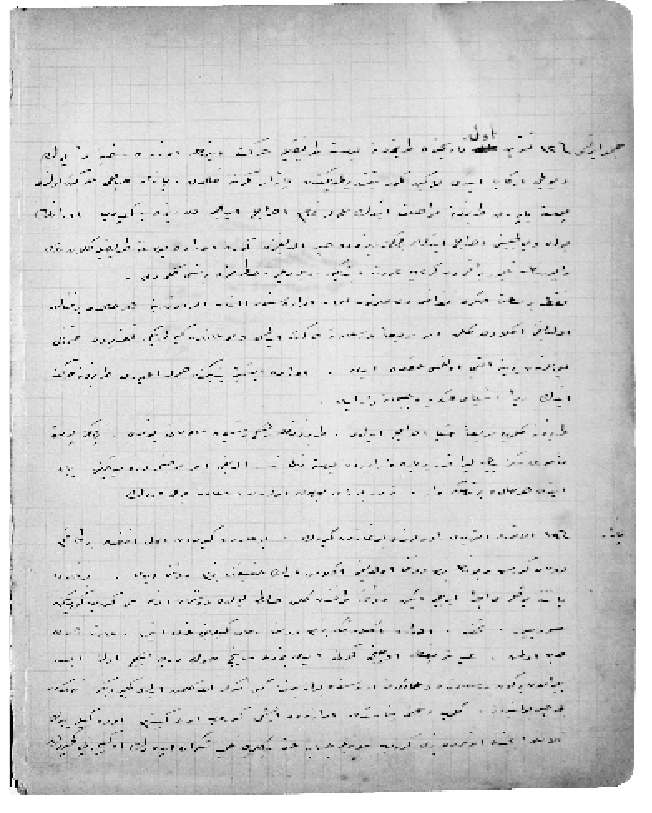

26 Ekim 1914
13 Teşrinievvel Cumartesi tarihinde Trabzon’a posta tarikiyle [yoluyla] hareket etmek üzere sefinemiz [gemimiz] yük ve yolcu irkâb etti [bindirdi]. Lâkin kömür yetiştirilmediğinden Pazar gününe kaldık. Pazar sabahı hareket olundu. Posta yaparak Trabzon’a muvasalat ettik [ulaştık]. Hamule [yük], tamam ihraç edilmeden Rize’ye gidip oranın yük ve yolcusunu ihraç ettik. Yalnız Rize’de haber aldığımıza göre orada posta tarikiyle gelen Rus vapurunun demir bırakmadan geriye avdet ettiğini söylediler. Hatırımıza bir şey gelmedi.
Fakat bir saat sonra telgrafla Dersaadet’ten, liman idaresinden alınan emir üzerine her hâlde bir fenalık olduğunu anladık. Gelen emir, serian [aceleyle] Dersaadet’e hareket edilmesi ve Boğaz’dan girilmediği takdirde Osmanlı limanlarından birine iltica olunması hakkında idi. Orada işimiz bittiğinden hamule almayarak Trabzon’a hareket ettik. Zira eşya-yı askeriye ve cephane var idi.
Trabzon’a gelip serian eşya ihraç edildi. Trabzon’un hiçbir şeyden malûmatı yoktu. Yalnız posta memuru sekiz bin lira kadar bir para var ise de Posta Nezaretinden aldığı emir mucibince veremeyeceğini beyan etti. Her hâlde bir tehlike var. Nedir, burası meçhul olarak Dersaadet’e yol verdik.
1 Kasım 1914
19 Pazar – Alaturka altı yedi raddelerinde Boğaz’dan girdik. Boğaz’dan girmeden evvel ufukta bir takım duman görmüş ve bunun bizim donanma olduğunu anlamış idik. Hakikat bizim donanma idi. Boğaz’da patente yoklaması icra edilirken donanma tarafından gelen zabit, yolda düşman donanması görüp görmediğimizi soruyor. Tuhaf, orada anladık ki bizim donanma Rus gemilerini gark etmiş [batırmış]. Adeta ilân-ı harp olmuş. İd-i şerifin [bayramın] üçüncü günü idi. Bizde sevinç son derece. Hiç olmazsa bayramdan bir gün Dersaadet’te ve ailemiz arasında bulunacağız gibi fikirler ile gelmiş idik. Geçirdiğimiz tehlikeden bihaber bulunuyoruz. Gelip rıhtıma yanaştık. İdarede işimi görüp eve gittim. Evdekiler büyük telâş içinde. Onlar da bizi görüp sevindiler. Cenab-ı Hakk’a binlerce tahmid ü şükran ederek o geceyi geçirdik.
Dersaadet’te Pazartesi sabah – Sefineye geldim. Merkezden verilen emir üzerine umum mürettebat sefinede emre hazır bulunacak. O gün kömür ve sair levazımatımızı ikmal ediyoruz. Akşam süvari ile beraber Tünel başındaki birahanede bir miktar oturduk, gemiye geldik.
3 Kasım 1914
21 Salı – O gün de intizar içinde geçti. Merkezde yarım maaşımız var idi. Onu alıp tevzi ettim. Evvelki seferimizde altı gemici Rize’de kaldığından onların 1.000 kuruş kadar mütebaki kalan para, yazıhanenin gözünde kaldı. O gece de öyle geçti.
4 Kasım 1914
22 Çarşamba – O gün bir mavnada gelen bir otomobili aldık ve bir miktar elbise-i askeriye çuval derununda [içinde] geldi. Onları da ambara yerleştirdik. O geceyi de öyle geçirdik.
5 Kasım 1914
23 Perşembe – Ale’s-sabah [sabahleyin] meclis-i sıhhiyeden gelen bir doktor sefineyi gezdi. Evvelce sefinenin Hilâl-i Ahmer olacağını bilmiyorduk. Merkez-i idareden, hareket edeceğimiz emri verildi. Limandan diğer bir emir aldık. O aralık sıhhiye ile liman arasında sefine hakkında her hâlde bir müzakere cereyan etmiş olmalı ki otomobilin mavnaya ihracı hakkında diğer bir emir geldi. Vermek üzere hazırlanıyor iken diğer bir emir kalması hakkında verildi. Süratle kömürün ikmaline çalışıyorduk. Ben kendi hesabıma birçok seviniyordum. Posta tarikiyle Trabzon’a gider iken birçok eşya ve kömür ve odun ve yağ sipariş etmiş idim. Tabii avdette uğramadığımızdan alamamış idim. Şimdi o vasıta ile bunları alacak ve evin noksanını ikmal edecek idim. Evden gerek kışlık elbise ve paltomu ve çamaşırlarımı getirdim. Belki uzun müddet oralarda kalırız. Fikrimiz, Rusya sevahiline [sahillerine] asker ihraç edeceğiz zannında bulunuyorduk. Ümidimiz Rusya’nın ahvali pek vahim. Adeta tenezzühe [gezinti] gider gibi gideceğiz gibi fikirlerde bulunuyorduk. Birde Liman Riyaseti’nden kapalı bir zarf geldi. Üstünde Ereğli önlerinde açılarak, tahriratta yazılan emir üzerine hareketimiz bildiriliyordu. Bahriye Nezareti’nden iki işaret memuru tayin edilmiş ve ellerindeki gayeyi getirdiler. İdareye giderek kendileri hakkında emir aldım. O gün mahdumum Emin Efendi gelmiş ve kendisinin beraber götürülmesi hakkında rica ediyor. Düşündüm, bu sefer bana her neden ise pek karışık göründüğünden, oğlum bu sefer diğer seferlere benzemediğinden kendisinin eve gitmesi hakkında nasayih [nasihatlar] vererek belki sefer uzar diye iki lira vererek eve gönderdim. Ne bilebiliriz ki böyle bir felâkete uğrayacağız. Yanımda birçok para var idi ve sefinede bir çuval muhasebe kâtibi Nail Efendi’nin fasulyesi kalmış. Onları da verip gönderdim. Hele eve gittiğim gece Hıfzı Efendi’nin bir fotin istediği, validesi tarafından söylenilmiş idi. Kendisine, “oğlum seferden geleyim o vakit sana güzel bir fotin alayım. Hele bir iki gün sabret de” demiştim. Bu hatıra beni ne kadar muazzaeb etti [azap çektirdi], niçin almadım. O gece, bade’z-zeval [öğleden sonra] 7.30’da hareket emrini aldık. Bezm-i Âlem ve Bahr-i Ahmer ile beraber rıhtımdan hareket olundu. Tamam Büyükdere’de sefinemize gelen Liman Reisi Nizamettin Bey yolların gayet emin olduğunu hatta araba yolu gibi gideceksiniz gibi tabirat ile bizi mutmain ediyor [içimizi rahatlatıyor]. Orada, Beykoz önünde karanlıkta bir sefine gözüküyor ise de ne olduğunu anlayamadık. Bir aralık kılavuz sefinesi işaret verdiğinden biz de peşinde olarak, alaturka üç buçuk var idi Boğaz’a girdik. O ölüm saçan mayınlar arasından kemal-i dehşetle geçtik. Tabii sefinede hiçbir fener ve aydınlık yok, her taraf kapalı ve borda ve silyon fenerleri kâmilen söndürülmüş idi. Bununla beraber deniz gayet râkid [durgun] ve mehtap gayet güzel. Adeta lâtif bir gece idi. Böylece iki saat kadar kat’-ı mesafe etti. Herkeste bir düşünce var. Bu aralık sol taraftan bir fener parladı. Bu işaret bizi pek çok düşündürdü. Her hâlde bizim harp gemilerinden birisi olmasına karar verdik. Çünkü dışarıda bizim donanmanın bulunması hakkında ümidimiz pek çok idi. Zaten Dersaadet’te aldığımız kapalı zarf bize her hâlde Ereğli üstlerinde donanmaya mülâki olmak [buluşmak] gibi büyük ümitler vermiş idi. Ve bir de her üç sefinenin on mil üzere kat’-ı mesafe etmesi tarzındaki emirle yolun hesabı yapılarak orada donanmanın o saatte bulunacağı gibi fikirler vermiş idi. Bizim sefine on beş mil kat edecek bir hâlde bulunduğundan diğerleri bize uyacak zanneder iken, kömürün fenalığından beş altı mil ancak seyredebiliyoruz. Diğer sefineler bizi beklemeye mecbur oluyorlar. Aman yarabbi ne büyük hata, böylece üç gemiyi hiçbir muhafız olmadan denize çıkarmak ve içinde bu kadar eşya ve erzak-ı askeriye bulundurmak. Ya maazallah asker bulunsa idi, ne felâket. Binlerce düşünce ile o geceyi selâmetle geçirdik.
6 Kasım 1914
24 Cuma – (Bâdî-i felâket [felâketin başlangıcı]) Bu sabah yataktan kalktım ilk işim etrafa bakmak oldu. Ereğli üstlerine yakın bir mesafede idik. Çay içip, sefinede bizden başka kimse olmadığından eski elbiselerimi giydim. Yeni yaptırdığım pantolonun dizine yağ damlamış, onu silmek üzere kamarot Hüseyin’i çağırdım ve onu verip güzel silmesini tembih ederek, güverteye çıktım. Havada oldukça sis var, önümüzde giden Bahr-i Ahmer, Bezm-i Âlem ara sıra sis içinde kayboluyorlar. Böylece bir saat kadar geçti. Biz de Ereğli ile Zonguldak aralarında bulunuyorduk. Sahilden beş altı parça teknenin dumanı göründü. Sis ve uzak bulunması, sefineleri fark ettirmiyor. Fakat sahilden gelmesi her hâlde bizim donanma olmasına hükmederek yolumuza devam ediyor idik. Dersaadet’in vermiş olduğu kapalı zarf küşâd edilerek [açılarak] doğru Ünye’ye gideceğimiz, orada Onuncu Kolordu kumandanının emrine tâbi olacağımız muharrer idi. Oradan aşağı indim. Elektrik memuru Mülâzım Vehbi Efendi uyuyordu. Kendisini kaldırdım ve bizim donanmanın zuhurunu [göründüğünü] haber verdim. Ve kamarama geldim. Hüseyin pantolonu silmiş, lâkin beğenmedim. Tekrar iyi silerek tekmil elbiseleri bohçaya koymasını ve pardösü ile kaputu asmasını tembih ederek köprü üstüne çıktım.
Beş-altı dakika sonra bir top sesi işittik, ne idi anlayamadık, sis mani idi. Nihayet bizim donanma Rus donanması ile harp ediyor hükmünü verdik. Ne gaflet. İlk top alaturka üç var idi. Gittikçe top sesleri tezâyüd ediyor [artıyor]. Biz ise elan yolumuza devam ediyoruz. Zaten makinede ocak çekilmiş, istim az olduğundan ancak üç dört mil kadar seyredebiliyoruz. Bir aralık sis dağıldı. Bahr-i Ahmer vapuru geri dönmüş lâkin makine kaportaları üstünde dehşetli alev ve yangın gözüküyor ve Bezm-i Âlem ise kemâl-i şiddetle bombardıman ediliyor. Eyvâh biz gene anlamadık. Mutlak Rus donanmasının taarruzu üzerine bizim donanma yetişip harbe tutuştular ve bizim donanmanın verdiği işaret üzerine Bezm-i Âlem, Bahr-i Ahmer geri döndüler gibi vâhi [yanıltıcı] fikirlerde bulunuyorduk. Esbâbı, verilen emirlerden bizim donanmanın Ereğli üstlerinde mevcut olması ve bir de yarım saat kadar bir posta vapurunun üzerine bombardıman edileceği hiç hatırımızdan geçmiyor. Biz de sefineyi Ereğli istikametine çevirdik. Lâkin istimin azlığından sefine yürümemesinden sefine lâyıkı vechile dümene bakmıyor idi. Vardabandıraları köprü üstüne çağırdık, hin-i hâcette verilecek işaretleri anlayıp, cevap versinler. Bu aralık bir sefinenin bizim üstümüze gelmekte olduğunu müşahede ediyoruz. Süvari, üçüncü, dördüncü kaptanlar ile çarkçıbaşı köprü üstünde bulunuyorduk. Tekmil mürettebat ne olduğunu anlamak üzere güverteye toplanmış idi. Gelen sefine bizim Muavenet-i Milliye cesametinde [büyüklüğünde] gözüküyor ve biz de onlardan biri olmasına karar verdik, bakıyoruz. Tamam, yarım mil kadar kaldığı zaman birden bire baş direğine Rus bandırasını çekerek o anda ilk mermi bizim üstümüzde patladı. Gelen mermi sancak iskelesini parçalayarak birinci kamaradan girdi. İkinci mermi ise sancak tarafında mataforayı parçalayarak vinççi Hüseyin bacağından yaralandı, onun feryadı bütün bütün ortalığa bir dehşet verdi. Umum ne yapacağını şaşırdı. Süvarinin emri üzerine beyaz büyük bir masa örtüsü baş direğe çekildi ise de Ruslar ateşine devam ettiler, ne vahşet! Bir posta vapurunda top tüfek yok, bununla beraber teslim işareti veriyor. Gene onun üzerine kemâl-i şiddetle ateş ediliyor.
Çarkçıbaşı bana, “haydi ne duruyoruz, birer yelek bulalım” dedi. Evet, ben adeta şaşırmış, bir şeye teşebbüs etmiyordum. Beraberce aşağı indik. Benim kamaramın kapısı açık idi. Oradan birinci kamaraya geçtik, her kamarada iki adet mantar yelek vardır. Kamaranın birisine girip birer yelek aldık. Salona isabet eden bir mermiden salonun duvarlarında bulunan somaki mermerlerin şangırtısını işitiyorduk. Oradan dışarıya koştuk. Mevla rahmet etsin, bu çarkçıbaşı Salih Efendi’yi son görüşüm oldu. Zavallı genç ne kadar müstakim [dürüst], ne kadar halûk [iyi huylu] idi. Belki sanatında da idaremizde nazîri [benzeri] yoktur, birçok efendiler hep onun sa’y u gayretiyle sanatında temeyyüz etmişlerdir. Ben kendisini cidden severdim. Koşarak benim kamaradan güverteye çıktım. Zaten iskele benim kamaranın önünde idi. Tekmil gemiciler tahaffuz [korunmak] için bu tarafa toplanmışlar. Ne tuhaf, insan salonun ve kamaraların o ince tahtalarından mermi geçmeyecek gibi vâhi [manasız] bir fikir ile o tarafa tecemmu [toplanma] gayr-i ihtiyari olarak yapılmış bir hareket idi. Birinci kamaranın su depolarına isabet eden bir mermiden oradaki sular yukarı kontra güverteden aşağı güverteye akıyor, herkes şaşkın bir tarafa koşuyor. Kamarot Madam Eleni gelmiş, “aman bey, beni bırakma” diye benden bir medet talep ediyor. O aralık Vehbi Efendi’yi gördüm, belinde mantar yelek ile geldi. Kendisine, “Vehbi şu benim yeleği bağla” dedim, yüzüme bile bakmadı, sefinenin kıçına koşarak gitti. Kamarot Hikmet, gelip benim yeleği bağladı. Orada bulunan bir iki kişi, “ne duruyorsun beybaba, denize atlasanıza” diyorlar. Tabii, kendileri cesaret edemediğinden benim kendilerinden evvel atlamamı kendilerine bir numune olmak üzere teşvik ediyorlar. Denize baktım. Ekseri gemiciler denizde yüzmeye uğraşıyorlar. Elan mermiler devam ediyor. Ben asla yüzmek bilmem, denize atlayıp ne yapmak ümidinde idim? Artık her şeyden ümidimi kat ederek [keserek] bir kere ailemi, çocuklarımı gözümün önüne getirdim. Kendilerine kalben elveda ettim “ne yapalım, takdir-i Huda böyle imiş”, diyerek Cenab-ı Hakk’a rabt-ı kalp ile tövbe istiğfâr edip son vazife-i diniyeyi icra ederek kendimi denize tevdi eyledim. O mantar yelek ile kurtulacağım diye bir ümid beslemiyordum. Denize atlar iken orada bulunanlara demiş idim, “çocuklar benim kamarada para vardır, alın”. Filhakika kasada yetmiş lira kadar bir para var ise de kasanın anahtarı cebimde kalmış ve yazıhanemin gözünde bin beş yüz kadar var idi. Bilmem aldılar mı? Denize düştüğüm anda bir iki kere yuvarlandım, battım, çıktım. Çünkü güverteden atlamış idim. Vâkıa güverte bir derece alçalmış bulunuyordu. Sefine ağır ağır suya giriyordu. Ruslar son vahşet olmak üzere yüz metreden attıkları mermi kâfi değilmiş gibi, son olarak sefineye bir torpil endaht etmişler [ateş etmişler] ve kazan istikametinden sefine o yarayı almış ve ikinci kamara kaportası ile birinci kamaranın sigara salonu ateş ve alev içinde idi. Denizde bir-iki yuvarlandıktan sonra elime bir ambar kapağı geçti. Evet, bu ambar kapakları çok kişilerin hayatını kurtardı. Bu fedakârlık Şevket Efendi’nin harekâtıdır. Orada bulduğu kapakları denize atarak benim gibi birçoklarının kurtulmasına bâdi [sebep] olmuştur. Rusların harekât-ı vahşiyânesi [vahşi hareketleri] kâfi değilmiş, hava, deniz müttefiki imiş gibi, o beliye [felâket] de çıktı.
Yavaş yavaş denizler büyümeye başladı. Elimde bulunan kapakta Atıf Kaptan, bir gemici ve aşçı ve bir kamarot var idi. Üçüncü Kâzım Kaptan bizden biraz uzakta. “Aman beni de alınız, Allah aşkına kâtip efendi, beni bırakma” diyerek feryat ediyor. Sefine ağır ağır denize gömülüyor. Biz bir türlü sefineden ayrılamıyoruz. Tahtada bulunanlara “bir parça gayret edin, sefineden ayrılalım” diyorum. Hiçbirisinde lakırdı anlamak yok! “Yarabbi, şimdi sefine denize girdiği anda bizi de çekecek burada öleceğiz,” diye düşünüyordum, diğer bir kapak gözüme ilişti, hemen o kapağı yakaladım. Onları terk ettim. Eski elbise sırtımda idi. Ayağımda fotin lastik var, bir derece ağır idim. Fakat yelek gene beni su üstünde tutmaya kâfi geliyor. Böylece sefineye dayanarak kendimi açmaya uğraşıyordum. Hava ve akıntı daima sefineyi bizim üstümüze sevk ettiğinden, bir türlü açamıyordum.
Nihayet dayanarak kıça gitmeye karar verdim. Dayana dayana kıçı buldum. Kıç kepçe, suya girdiğinden kepçenin altında kaldım. Bu sefer oradan kurtulamıyorum, daima beni suya basıyor, artık ümidimi kat etmek üzere idim. Nasıl olduğunu anlayamadım, kendimi denizde buldum. Kurtulduğuma yüz bin şükür ediyorum. Yanımda kimse yok. Oldukça uzak bazı insanlar görüyorum. Böylece bir müddet geçti. Deniz ise artık fırtına hâlini almış, elimdeki kapağın altından kaldırıyor, benim üstüme çıkarıyor. Vaziyetim pek fena idi. Onunla uğraşıyorum, hem yoruldum, hem de su yutuyorum. O aralık Atıf Kaptan’ı gördüm. “Aman, bu tahtaya gel” dedim ve geldi. Tahtanın her iki tarafından birimiz tuttuğundan, bu sefer tahta muvazene buldu. Bir derece rahat etmeye başladık. Bir miktar sonra o da kâfi gelmedi. Zira deniz fırtına hâlini almış, dalga büyümüş bulunuyordu. Sefinenin evvelce kırılan iskelesi yanımıza yakın bir mevkide idi. Hemen ona geçtik.
Zavallı gemi nihayet başı yukarı dikilerek kıçının üstüne kayboldu. O vakit bizim de ümidimiz kesildi. Altı-yedi yüz kulaç suyun üstünde sahilden on beş mil açıkta bir tahta parçasının üstünde Karadeniz’in en büyük fırtınalarından sayılan Kasım fırtınasında bu hâlde kalmak, artık Cenab-ı Hakk’ın lütuf ve merhametinden başka bizim için sığınacak, iltica edecek hiçbir ümit yok. İşte, böylece vakit geçiyor. Tabii, biz de soğuğun her türlü acısını hissediyoruz. Bir de Rus sefinesinden askerler denize savla atarak bizim gemicileri alıyorlar. Bunu görünce iskeleyi terk ile gene bir kapağa geçip, oraya doğru sevke başladık. Bize de savlayı attılar tutamadık. Tutacak kadar kuvvetimiz kalmamış idi. Onlar da anladılar, biz de efendi ile sefinenin bordasına sokulduk çabuk çarmıh indirdiler, gerek benim gerek Atıf Kaptan’ın arkamızda resmi ceket olduğundan koştular. Evvelce çarmıhı ben yakalamış idim. Lâkin çıkmak için lâzım gelen kuvvet olmadığından, Atıf’a “aman, çıkamayacağım” dedim. Rus efradından biri kolunu uzatıp beni yukarı aldı. Arkamdan Atıf Kaptan çıktı. Hemen güvertede bizi soydular. Arkamıza birer Rus kaputu verip çırılçıplak baş altına götürdüler. Başaltında yetmiş kişi var idi. Oranın havası bozulmuş, taaffün etmiş [kokuşmuş]. Ne çare, hava soğumuş, biz ise iki saat kadar denizde kalmış olduğumuzdan titreşiyor idik. Deniz ise müthiş bir fırtına hâlini almış. Bizim gemiciler istifra etmeye başladılar. Bizim arkamızdan Vehbi geldi. Ona kaput kalmadığından onu da benim kaput altına aldım. Sonra Saffet Kaptan geldi. Bizim bulunduğumuz sefine yol verdi. Rus efradı, sandıklarından kendi eski pantolon, fanila gibi eşyalarını çıkarıp bize verdiler. Benim de hisseme bir branda pantolon ile yırtık bir gemici fanilası düştü. Fanilanın arkası yırtık idi, ne çare, giydim. Bize beyaz ekmek ve konserve et ve sigara verdiler. O gün öyle geçti. Bizim en birinci korkumuz bu sefer bizim donanmadan idi. Eğer şimdi bizim donanma taarruz eder ise bu sefer kurtulamayacağımız muhakkak idi. Fırtına o kadar kesb-i şiddet etti [şiddetlendi] ki adeta bu sefinenin bu denize dayanamayacağını düşünüyorduk. Bulunduğumuz mevki yatmak değil, rahat oturmak mümkün değil. Bununla beraber lombozlardan vuran deniz ile su giriyor, baştan hoplayan deniz kaportadan bulunduğumuz yere giriyor, su içinde titreşiyoruz.
7 Kasım 1914
25 Cumartesi – Gece öyle geçti. Bugün hava devam ediyor. Ruslara nereye gideceğimizi sorduk. Sivastopol’a olduğunu anladık. Bu kadar uzun sürmesi havadan idi. Zira sefineler doğru yol veremeyerek sahile yol verip, sahilden gelecek ve tamam yol veremiyor idi. O gün de böylece dövündük. Akşamüstüne yakın gemi bir derece rahatladı. Bundan sahile yakın olduğumuzu anlıyorduk.
8 Kasım 1914
26 Pazar – Cumartesi akşam saat alaturka yarımda boğazdan geçiyor idik, fakat etrafını göremiyorduk. Bizi yukarı çıkarmıyorlar. Bire karîb [yakın] limanda demir bıraktı biraz daha bekledik, bir buçuğa yakın “haydi” dediler. Yukarı çıktık, baktık, limanda bulunuyoruz. Sefinenin bordasında büyücek bir istimbot yanaşmış idi. Alargada bazı sefineler görülüyor. Biraz ileride bizim Mithatpaşa’ya benzer bir Salib-i Ahmer [Kızılhaç] teknesi görülüyor idi. Hava ziyade soğuk, hepimiz titriyor idik. Ayağımda fotinler yaş, su içinde idi. Lastikleri Şevket Efendi’ye verdim. Cümlemiz istimbota nakledildik. Bir taraftan sayılıyoruz. İstimbot hareket ederek bir buçukta iskeleye yanaştı. Orada otuz-kırk kadar Rus efradı tüfeklerde süngü takılı olduğu hâlde etrafımızı ihata ettiler [çevirdiler]. Bilahare anladık, Ruslarda süngü daima takılı bulunuyor. Bellerinde süngüyü tüfekten çıkarıp kılıfına koymak için kılıf yoktur. Oradan bizi bir mevkie soktular. Altı çimento döşenmiş idi. Bir takım Rus zabitleri geldi, bir şeyler konuştular. “Kaputları bırakın” dediler, kaputları çıkardık. Bizim çıplak olduğumuzu görünce tekrar kaputları bize bıraktılar. Biraz sonra bizi oradan çıkarıp etrafımız asker ile muhat olarak bir yokuştan yürümeye başladık. Saffet Kaptan’ın ayağında kundura olmadığından koluma girdi, yürüyemiyordu. Bazı yerlerde ahali seyrimize koştular, bizi görmek istiyorlar. Böylece yirmi dakika kadar yürüdük. Bize bu yol bir saat kadar göründü. Şehirde hiçbir evde, bir binada aydınlık gözükmüyor idi. Bilahare anladık ki bizim donanmadan korkuyorlar. Böylece büyük bir binaya geldik. Cesim [büyük] bir kapıdan içeri girdik. İlk evvel şuranın bir hapisane olduğunu ben anlamış idim. Arkadaşlara söyledim, içeri girdim. Oradan diğer bir kapıdan daha girdik, cesim bir koridor, sıra ile parmaklıklı demir kapılar vardı. Benim söylendiğimden bir Rus zabiti geldi, ne istediğimi sordu.Bizim gemi zabitanı olduğumuzdan gemiciler ile bir araya konulmaktan şikâyetimi mümkün mertebe anlattım. “Peki, zabit olanlar ayrılsın.” Kaptan ve çarkçılar, Doktor Vehbi Efendi ayrıldık. Yanımıza bir lostromo ile üç ateşçi katılmış. Her ne ise, bizi bir ayrı yere koydular. İçeri girmeden mukaddem [önce] bir büyük zabit tarafından hepimiz nazar-ı teftişten geçirilerek, o zabit bize hitaben bir şeyler söyledi. Rusça bilenlerin ifadesinden anladık ki bize Rusya’da bulunduğumuzu ihtar ediyormuş. Girdiğimiz oda üç adet, bezden birer kişilik karyola ve bir tahta masadan ibarettir. Yerler çimento, içerisinde elektrik var. Bir penceresi var ise de pencereye harice ışık vermemek için bir battaniye kapanmış idi. Hava soğuk olduğundan üşüyor idik. Cesim, duvara yapılmış bir soba var idi. Onu dışarıdan yaktılar. O bezden karyolalara ikişer kişi yattı. Ben, daha çıplak olduğumdan Doktor’un ceketini giydim. Vehbi ile birlikte masanın üstünde bir miktar büzüldük. Böylece sabahı ettik. Ale’s-sabah kapıdan, nöbetçinin içerisini görmek için mahsus yapılmış bir delikten, nöbetçi bize seslendi. Kalktık, “çitri çitri” diyor. Meğer “dörder olun” diyormuş. Dörder olduk. Zaten başımız açık olduğundan sonra anladık ki meğer her sabah ayin-i mahsus [özel ayin] icra ediyorlar ve bizi de o ayinlerine iştirak ettiriyorlar imiş. Biraz sonra kapıyı açtı, kademhaneye [tuvalete] çıktık. Kademhanede büyük bakraçlar var. Onların üstünde sıra ile dizildik. Def-i hacet, başka türlü çare yok, ne yapalım? Bir miktar sonra bir Rus neferi elinde kocaman bir siyah ekmek, bir miktar tuz getirdi. Masanın üstüne bıraktı. Siyah ekmek deyince pek iyi anlaşılamaz. Aman yarabbi, adeta çamur! Her hâlde buğday ve kül, ne olduğunu elan anlayamadık. Böylece akşam oldu. Akşam yemeğimizi getirdiler. Tahta bir mastalya içinde bir çorba, içinde bir parça et var. Lahana parçaları ve “dure” tabir ettikleri darı gibi bir şey ile pişmiş, yemek mümkün mü? O gün bir Rus zabitine, süvari bir mecidiye verdi. Bize o mecidiye ile iki paket tütün ve bir sigara kâğıdı getirdi. Paketin biri yarım saat zarfında tükendi. Akşam saat alaturka birde birer birer dışarı çıkarıp bir odaya götürdüler. Orada Çar tarafından bir yaver ve iki büyük rütbeli zabit var idi. Yaver biraz Türkçe biliyor. Ve bir de orada mahbus bulunan tebaa-i Osmaniye’den Rıza isminde biri tercüman vazifesini ifa ediyor. Beni de götürdüler. Geminin hamulesini ve nereye gitmek üzere çıktığımızı ve kaç gemi olduğumuzu sordu. Ve bizim rütbemizin ne olduğunu soruyor. Tabii biz sivil olduğumuzu beyan ederek tahliyemizi ümit ediyorduk. Güldü, “Siz idare-i mahsusadan değil misiniz? Biz sizi pek iyi tanıyoruz. Siz, evet posta vapurları bulunuyorsunuz lâkin vakt-i seferde [savaş zamanında] transport ve asker sayılıyorsunuz” dedi. “Saklamayıp rütbenizi bildiriniz” dediği hâlde, “hayır biz başıbozuk bulunuyoruz” diye iddia ettik. “Peki, gidiniz” dedi. O gece iki defa istintaka [sorguya] celp edildim. Böylece sabahı ettik.
9 Kasım 1914
27 Pazartesi – O gün bizi ayırıp bir odaya getirdiler. Orada üçüncü ve dördüncü kaptanlar ile beraber idim. Onlar benden evvel gelmişler, ne olduğunu sordum. Bilmediklerini beyan ettiler. Orada boyumuzu ölçtüler, isimlerimizi yazdılar. Dışarıya çıktım. Kapıdan dışarıdaki avluda gemiciler iki sıra ile dizilmişler. Fuat Bey orada idi. Ne olduğunu anlamadan biz de onların yanına gidip durduk. Meğer bizim üçüncü bana yalan söylemiş, mürettebat sevk edileceğini biliyormuş ve kendisi kaptan olduğunu beyan ederek ayrılmış. Ben bilmediğim için hiçbir itiraz etmedim. Bezm-i Âlem vapurunun üçüncü ve dördüncü kaptanları ile Fuat Bey, ben sıraya girdik. Tamam, arş kumandasında işi anladık. Lâkin, kime derdimizi anlatalım. Yürümeye mecbur olarak hapisaneden çıkıp yokuş aşağı ahali arasında ve etrafımız süngülü asker ile ihata edilmiş olarak istasyona indik. Orada bizi vagona irkâb ettiler [bindirdiler]. Her vagonda muhafız iki nefer var. Dört saat kadar, tren beş-altı kadar tünel geçerek, kat-ı mesafe ederek bir cesim şehre indik. Orada ahalinin arasında bizi cesim bir hapishaneye getirdiler. Bu şehrin bilahare Akmescit olduğunu öğrendik. Orada bir Rus askeri tarafından ayrı ayrı yoklama edildik. Herkesin cebinde kaç para buldular ise aldılar ve saatlerini aldılar. Oradan odalara taksim ettiler. Burada yine benim şikâyetim üzerine zabitanı ayırmam söylendi. Kaptan ve çarkçılar ayrılarak bir odaya yerleştik.
10 Kasım 1914
28 Salı – Aman yarabbi, asıl esaret burada başladı! Kırk kişi bir odada bulunuyoruz. Bereket versin, döşeme tahta olduğundan birbirimizin üzerine uzanıp yatıyoruz. Oldukça sıcak, lâkin hava yok. O kadar insanın teneffüsü havayı ifsad ediyor [bozuyor]. Hatta gece lamba söndü, neden olduğunu anlayamadık. Bir de camı açıp içeri hava girince lamba parladı. Anladık ki hava bozulmuş. Böyle sabahı ettik. Sabahleyin bir Rus içeri girdi. Hepimizi ayağa kaldırdı, başımızı açtırdı. Diğer bir Rus’a sayıp teslim etti. Ondan sonra ayin icra ettiler. Badehu kademhaneye çıkardılar. On iki adet bakraç var, herkes sıra ile oturuyor. İçimizden bir iki kişi def-i hacet etti mi, geri kalana yumruk hazır. Böylece geceleri odaya bir bakraç koydular. Zaten dışarı çıkmak yalnız sabaha mahsus. Diğer zaman def-i hacet edecekler bakraca oturmaya mecbur. Yemek keza tahta mastalya içinde, siyah ekmek. Biz yalnız et parçasını alıp bir miktar geveleyip aç biilaç, tütün yok, böyle bir felâket içinde bulunuyoruz.
11 Kasım 1914
29 Çarşamba – O gün de aynı muamele ile geçti.
12 Kasım 1914
30 Perşembe – Artık hayatımızdan kat-ı ümide başladık.
13 Kasım 1914
31 Cuma – Bugün de böyle geçti.
14 Kasım 1914
1 Teşrinisani Cumartesi – Sabahleyin kapıları açtılar. Bizi dışarıya avluya indirdiler. Orada bir miktar bekledik. Süngülü askerler geldi, bizi dörder olmak üzere sayıp dizdiler. Askere “fişek sür” kumandasını verip, etrafımızı ihata ederek kapıyı açıp bizi çıkardılar. Şehrin içerisine doğru gittik. Orada bir kapıdan girdik. Büyük bir meydan, pek adi olmak üzere tahtadan kanepe ve masalar var. Bizi oraya oturttular. Ekmek tevzi ederek, tahta mastalya derununda çorba geldi. Yalnız eti fazla, daha iyi pişmiş. Epey bir miktar ben de yedim. Oradan bizi tekrar dörder olmak üzere çıkarıp istasyona getirdiler. (Katerinoslav’a azimet) Bu sefer yük vagonlarına bindik. Rusya hükümeti kendi askerini bu vagonlarda sevk ediyor. Bu vagonların hepsinde birer soba vardır. Bizi de otuzdan kırka kadar vagonlara irkâb ettiler. Yola düzüldük. Birçok istasyonlar, cesim şehirler, kasabalar geçiyoruz. Tekmil gördüğümüz arazi mezrû’dur [ekilidir]. Ruslara nereye gittiğimizi soruyoruz, onlar da bilmiyor. Böylece tamam dört gün geçti. Bir akşam alaturka ikiye karîb cesim bir istasyonda tren durdu. Etrafı görmek üzere pencereden bakıyordum. Elli kadar süngülü asker vagonların etrafını sardı. Sıra ile vagonlardan çıkarmaya başladılar. Sıra bizim vagona geldi. “İskri” diye bağırıyorlar. Bunun “çabuk ol” demek olduğunu öğrendik. Biz de çıkıp iki sıra olmak üzere dizildik. Orada sayılıp şehre doğru yürüdük. Kalabalık, cesim bir şehirdir. Ahali etrafımızda bizi seyretmek üzere toplanmış idi. Yarım saat kadar yürüdük. Cesim bir şoseden elektrik tramvayları arasından gidiyor idik. Bir yerde çocuklar toplanmış, orada bize bağırıyorlar. “Türk Allah” diye bizimle istihza [alay] ediyorlar. Böylece tenha bir mevkide cesim bir kapıdan girdik. Bir meydan, sokağa nazır ufak bir bina var. Onun kapısı kapalıdır. Ortada diğer büyük bina bulunuyor. Onun içerisine yerleştik. Bu bina üç kat, adeta üç salon birbiri üstünde idi. En üst kata biz düştük. Tahtadan kerevet var. Üstüne kuru ot serilmiş. Ve her koğuşta iki adet soba var idi. İlk kar burada gördük. Bizden sabahleyin angaryacı aldılar. Bu binanın arkasında, hariç olmak üzere bir mutfak, onun arkasında kademhane var. Bir şey var ise, burada serbest olarak kademhaneye gidebiliyoruz. Yalnız kademhane yine umumidir. Açık ve sıra ile on beş kişi def-i hacet edecek. Artık taharet [temizlik] için su yerine kâğıt kullanmak mecburiyetine alıştık. Angaryacılar mutfakta patates ve pancar soydular. Bizim aşçılar ve Ruslardan bir aşçı var idi. Yemeği beraber pişirip tevzi ettiler. Gemiciler kapışarak yediler. Biz yiyemiyoruz. Yalnız içinden parça eti alıp, o siyah ekmek ile bir miktar çiğneyebiliyoruz. Muhafazamıza bir mülâzım [teğmen] ve mikdar-ı kâfi [yeter sayıda] asker vardır. O mülâzıma müracaat ettik. Bizim gemide yeni yazılan Hasan isminde Rusça bilir bir gemici vasıtasıyla kendimizin zabit olduğumuzu ve bizim ayrı bir mevkie çıkarılmaklığımızı talep ettim. Generale söyleyeceğini vaat etti. Rus efradıyla tercüman vasıtasıyla konuşuyoruz. Onlardan haber aldığımıza göre, Ruslar Hasankale ve sair birçok bizim köy ve kasabaları işgal etmişler. Bazı kendi derdimizi unutup vatan gailesine düşüyoruz. Buraya kadar düşünmekten aciz idik. Şimdi aile, çocuklar hatıra geliyor. Binlerce acı düşünceler içinde muazzeb oluyoruz. Bu aralık Rus efradından bizim Sibirya’ya gideceğimizi öğrendik. Aman yarabbi, biz orada ne yapacağız? Demek, hepimiz ölüme mahkûm idik! Fuat Bey adeta bu korkudan ağlıyor, kendisini zapt edemeyecek bir hâlde bulunuyor. Bir gün memurumuz bulunan mülâzımdan bizim kaptanların bu şehre geleceğini haber aldık ve bizim tahkikimiz için onlardan sorulacağı ve içimizden birisinin gidip kendileriyle görüşüp, konuşmamızı teklif etti. Mahir Kaptan’ı gönderdik. Onları orada bir otele yerleştirmişler. Mahir Kaptan konuşmuş, geldi. Bir gün sonra bizim gemicilerden on nefer alıp karşımızdaki ufak binayı temizlettiler. Ne olacağına bakıyorduk. Demir karyola taşındı. Ertesi günü bizim kaptan arkadaşlar oraya geldiler. Kendileri ile görüştük. General geldi ve edilen müracaat neticesinde ben, Fuat Bey, Mahir Kaptan, İhya Kaptan ve Cemal Efendi, Ağa ismindeki çete mülâzımı, oraya nakledilip, sefaletten bir derece kurtulduk. Vehbi, Saffet ve Tahsin ile dört kişi ufak bir odada yatıyoruz. Her gün hariçten Rus mülâzımı vasıtasıyla aldırdığımız et ve sebzeyi aşağıda bulunan kuzinede pişirtip yiyoruz. Ben kuzinede su ısıttırıp yıkandım, mümkün mertebe temizlendim. Gemicilerden aldığım paradan kendime bir don, iki fildekos fanila ve iki mendil aldım. Hava oldukça soğumuş idi, geceleri soba yanıyor. Buradan ilk mektubumu yazdım. Yazılan mektuplar Türkçe idi. Rus zabitine veriyoruz, bilmem gidiyor mu? Hatırımda kaldığına göre buradan iki mektup yazdım. Burada on beş ve biz de altı kişi sonradan geldik, tamam yirmi bir kişi idik. İçimizde yabancı olarak bir Topçu Binbaşı Sabri Bey, Tayyareci Salim Efendi, Tayyareci Feza Efendi, Çete Binbaşı Sıddık Bey, Doktor Rıfat Efendi, Mülâzım Ziya Efendi, Çete Mülâzım Ağa, mülkiye müstantiklerinden Hulusi Efendi, Kaptan Lubkin, Orhan Bey var idi. Bu Kaptan Lubkin Dersaadet’teki Alman sefinelerinden birinin kaptanı olup, liman tarafından bizim üç sefineye kumandan tayin edilmiş olduğunu sonradan öğrendik. Orhan Bey denilen genç, Almanya’da tahsilde bulunmuş Osman Paşa isminde bir zatın mahdumu olup seferberlikte mekteb-i âli talebelerinin umumunun dâhil olduğu gibi hizmet-i askeriyeye alınmış ve Kaptan Lubkin’e tercüman verilmiş.
30 Kasım 1914
17 Teşrinisani Pazartesi (Dauria’ya hareket) gecesi nısfü’l-leylde [gece yarısı] meydana birçok Rus askeri geldi ve bizi çıkardılar. Etrafımız süngülü efrat ile sarılarak memurumuz olan Mülâzım kılıcını çekerek arş kumandasını verdi. Soğuk bir gece idi. İstasyona yürüdük. İstasyonda birçok bekledik. Adeta soğuktan ayaklarımız dondu, pek çok üşüdük. Vagonlar geldi. Efrat yük vagonlarına bindiler. Biz de ikinci mevkie bindik. Kanepeler kadifeden. Her kişiye bir yatak var. Her hâlde pek rahat idik. Sabah arkadaşlara bir buçuk rubleden harcırah verildi. Zavallı biz altı kişinin ismi “şeşçalevek” diyerek bize de yirmi beş kapikten nefer yevmiyesi verdiler. Katerinoslav’da bizim muamelemiz yapılmamış olduğundan gideceğimiz yerde yapılacak imiş. Ne ise birçok istasyonlar geçiyoruz. Soğuk fazladır. Dışarıya çıkartmıyorlar.
1 Aralık 1914
18 Salı – Bugün bir istasyonda vagonların muayenesinde yayın bozukluğundan bizi çıkarıp üçüncü bir vagona bindirdiler. Bu vagonda tahta üstünde yatmaya mecbur idik. Vagondaki sobanın odunlarından kendime bir yastık tedarik ettim. Umum arkadaşlar da öyle yaptılar. Yalnız herkesin palto, kaput gibi eşyaları var. Benim ise arkamda bir Rus bahriye ceketinden başka bir şey olmadığından pek sıkıntı çekiyorum. Kar ağır ağır, mütemadiyen yağıyor, hava soğuk. Dışarıya çıkmak güç; kaş, bıyık donuyor. Buralarda artık araba yerine kızak arabalarını görüyoruz. Böylece önümüzden sinemadaki manzaralar tarzında birçok menâzır-ı tabiyeler [doğal manzaralar], şehirler, kasabalar, köyler önümüzden geçiyor. Biz de kendimizden bihaber olarak, nereye sevk edildiğimizi bilmeyerek lâ-yenkati [sürekli] gidiyoruz. Akşam oluyor, sabah oluyor hâlâ gidiyoruz...
4 Aralık 1914
21 Cuma – Bir cesim göl üstünde Galata Köprüsü’ne yakın bir köprü var. Dere kâmilen incimad etmese [donmasa] içinde kayık, römorkörler var. Onu da geçtik. 8.30 Penza dedikleri bir şehre geldik. Memurumuz bulunan Rus mülâzımından buraya çıkacağımız haberini aldık, hazırlanmaya başladık. Zabit çıkıp gitti, bir saat kadar bekledik. Nihayet geldi. Oraya kabul etmediklerinden Sibirya’nın merkezi olan Omsk şehrine gideceğimizi bildirdi ve bizi oradan gelen diğer efradın başındaki çavuşa teslim edip, kendi askeriyle çıktı. Bu aralık gelen diğer trendeki on beş vagon kadar Avusturya esirlerini bizim trene raptettiler. Saat 11: Penza’dan hareket ettik. Gene birçok vadilerden, kasabalardan, köylerden geçiyoruz. Böylece akşam, sabah oluyor, hâlâ bitmez tükenmez yolda devam ediyoruz.
6 Aralık 1914
23 Pazar – Büyük bir dere göle tesadüf ettik. İçerisinde cesim vapurlar var. İncimad etmiştir. Bunu da bir köprüden geçtik. Ruslardan ismini sorduk. Volga Nehri olduğunu öğrendik. Buralarda köprülerin umumu, Rus efradı tarafından muhafaza altına alınmış. Büyük bir dikkatle muhafaza ediyorlar. Artık Ural dağlarına yaklaşıyoruz. Ural dağları Avrupa’nın müntehası [son noktası] demek. Asya’ya geçiyoruz. Volga Köprüsü’nü tren on dakikada geçti. Ruslar zannımız kadar sanayide geri değildir. Bu cesim köprüdeki sanat Rusların elinden çıkmıştır. Elan günler geçmektedir.
11 Aralık 1914
28 Cuma – Ural eteklerine geldik. Bugün Ruslardan haber aldığımıza göre, Rus donanması Trabzon’u bombardıman etmiş. Hopa’da yetmiş bin çuval dakik [un] zapt etmiş. Volga Nehri’nin ikinci köprüsünü geçtik. 7.30: Samara dedikleri şehre geldik. Gayet cesim bir şehir olup her tarafı elektrik ile tenvir edilmiş [aydınlatılmış]. Müteaddit demir yolları ile döşenmiş. Ahalinin rub’ı [dörtte biri] İslam’dır. Büyük şehirlerde efradı çıkarıp yemek veriyorlar. Rusya’nın tekmil istasyonlarında daima ahalinin çay suyu alması için sıcak su bulundurmak üzere mevkiler vardır. Burada da bizim mürettebatı çıkarıp yemek yedirdiler.
Bu arada Oktyabrskiy, Ufa, Celabinsk dedikleri şehirlerden geçtik. Ufa denilen şehir gayet cesim ve ahali, ekseriyet İslam olup bir nehir kenarında ve vâsi gaz depolarını havi. Her tarafı elektrik ile tenvir olunmuştur. Tarihte Ufa, Samara ve denilen memalik büyük İslam hükümetlerinin ellerinde bulunmuş, şimal Türkleridir.
12 Aralık 1914
29 Cumartesi – Kurgan İstasyonu’na geldik.
13 Aralık 1914
30 Pazar – Petropavlovsk İstasyonu’na geldik.
14 Aralık 1914
1 Kânunuevvel Pazartesi – Omsk şehrine beş verst kalarak büyük bir köprüden geçtik. Saat sekizde Omsk’a vasıl olduk. Vagona gelen bir Rus zabiti daha üç gün gideceğimizi söyledi.
Hareket olundu. Buralarda soğuk termometre 45 derece idi. 1.30: Nikolayieski İstasyonu’na geldik. Diğer bir istasyona vasıl olduk, burada çok bekledik. Meğer bizden evvel hareket eden bir tren yolda müsademe etmiş onu bekledik. Akşamüzeri hareket ettik. Orada parçalanan trenin enkazını gördük. Böylece yolumuz da geçiyor. Gündüz devam ediyoruz.
17 Aralık 1914
4 Perşembe – Bir istasyona geldik. Burada bir asker treni var idi. Harbe gidiyor imiş. İçlerinde birçok Tatar var idi. Bizim vagona geldiler. Ruslardan korkarak bizimle görüştüler.
Omsk dedikleri şehir de bizi kabul etmedi. Tomsk’a gideceğimizi bildirdiler. Burada kadın doktorlar gelip hastaları muayene ettiler. Avusturyalılardan bir nefer tifoya tutulmuş, onu hastaneye kaldırıp o vagonu tahliye ettiler. Bizim dışarıda on dakika durmak kabil değil. Vagonun kapısında açıp kapamak için olan demiri tutmak pek güç, adeta ateş tutuyormuş gibi insanın elini yakıyor. Omsk’ta geceye kadar kaldık. Gece hareket ettik. Bundan sonraki istasyonda diğer bir üsera [esirler] katarında iki vagon bizim Türk askeri ile beş-altı zabit var idi. Görünce kendilerine koşup, nerede esir olduklarını sorduk. Sarıkamış’ta bozulan fırkadan olduklarını öğrendik. O Türk efradı zannettiğimiz, umumu Ermeni olup bizim mürettebat ile görüşüp konuşmuşlar. O kadar hain o kadar edepsiz bir millet ki orada bizimkilere karşı bir takım tefevvühâtta bulunup [dil uzatıp], Padişah, Peygamber, din, iman sepet ediyorlar. Eyvah, ne acı! Zavallı bizim gemiciler boyunlarını büküp susmaktan başka bir cevap veremiyorlar. Ellerinden ne gelir, zavallılar esir! Oradan diğer bir istasyona geldik. Bayraklar ile donanmış idi. Ne olduğunu Ruslardan sorduk. Çar’ın isim günü imiş.
22 Aralık 1914
9 Çarşamba – Artık vâsi [geniş] çam ormanları arasında kat’-ı mesafe ediyoruz. Şuraları soğuk olmasa o kadar lâtif, o kadar güzel bir manzara ki adeta dünyanın bir yerinde bu kadar güzel orman olamaz. Bizim adalarda o kadar emekler ile yetişmeyen çam ağaçları burada karlar altında. Bitmek tükenmek bilmeyen şu hatta birçok günler arasında gidiyoruz. Bugün bir Rus, bir kalpak satın aldım.
26 Aralık 1914
13 Pazar – Bir büyük istasyona geldik. Burada şimendiferin müteaddit [birçok] fabrikaları var. Yüzlerce lokomotif, binlerce vagon, otuz-kırk kadar demir hatları. Ekserisinde askeri trenler, cephane vagonları. Sevkiyatın kesretini [çokluğunu] burada görmeli, akla hayret verir. Rus hükümeti ne kadar büyük, ne kadar terakkiye çalışmış! Şu hat, hem de çifte olmak üzere, bu kadar gündür daha intihasına [sonuna] vasıl olamadık. Hayret, o cesim [büyük] köprüler, o tüneller ne kadar emek, ne kadar milyonlar sarf edilmiş! Tomsk dedikleri vilayeti geçmiş, İrkuç’a [İrkutsk] gidecek olduğumuzu öğrendik. Lâ-yenkati gidiyoruz. Baykal Gölü’ne geldik. Cesim bir göl, adeta bir deniz. Müteaddit sefineler var, buzlar ile muhat. Buralarda soğuk, artık son dereceyi bulmuş, tahammül edilemeyecek bir hâldedir. Birçok tünel geçiyoruz. Bu sabah geldiğimiz istasyonda bir Tatar, bizim efrattan bazılarına para verdi. Burada birçok fabrikalar var. Burada tesadüf ettiğimiz bir trende iki adet tahte’l-bahir [denizaltı] gördük. Bugün on iki tane daha geçmiş idi. Yanında bahriye efradı var. Gene yolumuza devam ediyoruz. Böylece günlerimiz geçiyor.
31 Aralık 1914
18 Cuma – (Dauria’ya muvasalat) Dauria dedikleri istasyona geldik. Bu istasyonun bir tarafında ufak bir köy var. Diğer istasyonun bulunduğu tarafta birçok ufak kışlalar görülüyor. Bizi bu tarafa çıkarıp saydılar ve kışlaların arasından geçerek büyük, cesim bir meydanın ortasında, natamam [tamamlanmamış] bir kilisenin yanından giderek, oradaki kışlaların birisine girdik, üst kata çıktık. Oradan yolda, trende tesadüf ettiğimiz bizim Türk zabitlerini bulduk. Demir karyolalar var idi. Baştan başa bir koğuş olup altı adet cesim soba var. Fakat soğuk o kadar ziyade idi ki, aman yarabbi biz müddet-i hayatımızda bu kadar soğuk görmek değil, belki tahayyül etmemişiz! Üç dört kadar da Avusturya yahut Alman zabiti var idi. Sobaları yaktık. Lâkin, sobalar o kadar yandı ki odun yetişmiyor. Gene üstündeki buzlar eriyemedi. Karyolanın üstünde tahta, onun üstünde yatıyoruz. Aman yarabbi, uyku ne güzel! Nihayet iki kişi nöbette kalıp sobanın önünde oturup sırtındaki ceketini yatan arkadaşına verecek, sonra onlar kalkıp diğerleri yatacak. Bu hâl üzere sabahı ettik. Kademhane hariçte, tahtadan dört etrafı çevrilmiş uzun bir salaş olup, otuz kişi yan yana oturmak üzere yapılmış. Türk, Avusturya, Alman hepsi oraya sıralanacak. Bizim için ne güç bir mesele! Geceyi bekleyip orasını tenha bulmak veyahut bir kenara çekilmek, başka çare yok. Soğuk ise o kadar ziyade ki kapıdan giren hava içeride tekâsüf ederek [yoğunlaşarak] içeride kar oluyor. Kapının dışarısında üç kapı daha olduğu hâlde duvar ve tavan kar tabakasıyla örtülmüş idi.
1 Ocak 1915
19 Cumartesi – Bugün bir Rus generali maiyetinde beş-altı Kazak zabiti ile gelip kışlayı gezdi. Rusça bilenlerin ifadesinden anladık ki gece soba yanmamasına karar vermişler. Artık sabredemedim, generalin önüne gelip Türkçe anlayamayacağını düşünmeyerek kendisine sert bir hitap ile, “Esir bulunuyoruz, ölüme mahkûm isek bu kadar eziyete ne hacet! Kazaklara emrediniz birer süngü veyahut bir kurşun ile ölelim” diye adeta bağırdım. İhtiyar general bana bakıyordu. Meğer birçok zaman Kafkasya’da bulunduğundan Türkçe biliyor imiş. Bizim soğuktan son derece meyus [üzüntülü] ve mustarip [ıstırap içinde] olduğumuzu anlayarak maiyetindeki zabitan ile bir müddet konuştuktan sonra odun verilmesine karar verdi. Fakat burada soba değil ne yapılsa soğuktan barınmak mümkün değil idi.
Bugün yanımıza yetmiş-seksen kadar Avusturya zabiti geldi, onlar da yerleşti. Arkadaşların umumu yemek için günde iki defa o soğukta istasyona, lokantaya gidiyorlar. Ben, Saffet, Vehbi, Süvari, Yüzbaşı Feza, Mülâzım Ziya Efendiler orada sobanın içinde tenceremiz ile yemek pişirip yiyoruz. Böylece iki gün geçti.
4 Ocak 1915
22 Salı – Bugün üsera memuru bulunan Kazak yüzbaşı geldi. Gayet güzel Fransızca tekellüm ediyor [konuşuyor]. Zabitana maaş verileceğini beyan etti. Tekmil zabitan imza ederek para aldılar. Bizim kaptanlardan kimseye maaş vermediler. Müracaat olundu, sivil olduğumuzdan “size maaş yoktur” cevabı verildi. Hepimiz düşünmeye başladık. Bir aralık zabitanın istasyonun karşısında bulunan kışlalara gidileceği haber verildi. Biraz sonra da kaldırdılar. Biz orada yalnız gemiciler kaldık. İçimizde lisan bilen yok. Yüzbaşı Feza tercümanlık ediyor idi. Onun ifadesi üzerine orada kaldık. Şimdi bizi de efrat yanına sevk ederler ise hâlimizin ne olacağını düşünüyor idik. Birde Kazak yüzbaşı geldi. Kendisine mümkün mertebe Rusça, Türkçe anlattık. Biz ne olacağız? Bizim de öte zabitanın yanına gideceğimizi söyledi. Ne kadar sevindik! Birkaç gemici çağırıp karyola taşımak üzere getirttik. Oradan çıktım, istasyonun yanındaki kışlalar için on dakikalık bir mesafe olduğu hâlde oraya gelene kadar donmaya ramak kalmış idi. Ellerim parmaklarım sızlıyor. Atıf Kaptan’ın kulağı şişti. Aman yarabbi, denizde yirmi dört saat torpidoda su içinde kaldık, bu kadar üşümedim! Geldiğimiz kazarmada [kışlada] bizim tarafta iki küçük oda, iki büyük oda iki mutfak var. Küçük odanın birisinde Binbaşı Osman ve Sabri ve Sıddık Beyler ile Mustafa Kaptan ve Çarkçı Cemal Efendi. Diğer küçük oda Tayyareci Salim Bey, Yüzbaşı Hasan Efendi ve bizim Doktor, Doktor Rıfat Efendiler. Bizim odada Tayyareci Feza, Mülâzım Ziya, Süvari Saffet, Atıf, Vehbi, Ağa, ben bulunuyorum. Diğer odada, Hasan, Kâzım, Mahir, Tahsin, Orhan, İhya, Salih, Mustafa, Mustafa Hamit Efendiler var idi. Burası gayet muhafazalı ve Rus kumandan dairesi imiş. Mevkiimiz rahat idi. Birçok sevindik, karyolalara ot tedarik ettik. Sobalar kâfi derece odalarımızı ısıtıyor.
6 Ocak 1915
24 Perşembe – Kazak yüzbaşı, isteyen orada mevcut Rus zabitanın tabldotuna iştirak edebileceğimizi beyan etti. Arkadaşların ekserisi eski istasyondaki lokantadan yemeye devam ediyorlar. Biz yine kendimiz pişirip yiyoruz. İstasyonun öbür tarafındaki köye serbest gidebiliyoruz. Bu köy, on kadar Çinli evinden, on kadar dükkândan ibarettir. Ve bize “maaş için bir istida yapınız [dilekçe veriniz]” cevabını verdiler. İstidayı yazıp yüzbaşıya verdik. Günler geçiyor biz de ümit ile bekliyoruz.
11 Ocak 1915
29 Salı – Orada bulunan Kazak fırkasının Kafkasya’ya gideceğini haber aldık. Onların yerine bir piyade taburu gelmeye başladı.
13 Ocak 1915
31 Perşembe – Bugün bizi gelen tabura devir teslim ettiler. Kazak yüzbaşıya istidamızın ne olduğunu sorduk. İrkuç’ta olup yakında geleceğini ve mutlak maaşımızın alınacağını bize tebşir etti [müjdeledi], biz de sevindik.
15 Ocak 1915
2 Kânunusani Pazar – Yeni gelen yüzbaşıya maaş müracaatında bulunduk. Muamelemizin hitam bulduğunu bildirdi.
17 Ocak 1915
4 Salı – Üç Alman zabiti evvelce firar edip yakalanmışlar. Bunun üzerine muhafazamıza fazlaca dikkat edilerek kapılarımızın önüne nöbetçi vaz edildi. Dışarıya çıkılacağı zaman behemehâl [mutlaka] bir süngülü beraberinde olunacağı, başka türlü çıkmak mümkün olmadığı anlaşıldı.
18 Ocak 1915
5 Çarşamba – Buradaki üseranın [esirlerin] rivayetine göre, Dersaadet’te sancak-ı şerif çıkarıldığı söylendi. Şimdiye kadar maaş alacağız ümidi münkatı olarak [kesilerek], nihayet bize tayın verilmesi hususunda ettiğimiz müracaat üzerine ilk defa olarak nefer muhassasatı [ödeneği] kumanya verdiler. Kamarotlar gidip ambardan erzakı getirdiler.
21 Ocak 1915
8 Cumartesi – Aman yarabbi o kadar soğuk var ki bu gece uyku uyumadık. Buradaki kışlaların umumu iki kat penceredir. Öyle olduğu hâlde gene içeriki pencerede üç-dört yaprak buz var. Hariçten para ile kömür aldık. Dersaadet’te seferberlik ilân edildiği zaman Rusya’da kömür olmadığı, tekmil Rus şimendiferlerinin, fabrikalarının battal olacağı, oldukça mühim mevkilerde bulunan bazı zevat tarafından bile söyleniyor idi. Ne vâhi [yanıltıcı] fikir. Biz yolda gelir iken bir-iki mevkide kömür madenleri görmüş idik. Her gün vagonlar ile taşındığını görüyoruz.
23 Ocak 1915
10 Pazartesi – Amerika tarafından bir müfettiş geleceği şüyu buldu [yayıldı]. Biz de şikâyete hazırlandık. Ne gelen var, ne giden. Bizim hiç birimizde para namına bir şey yoktur. Umumumuzun noksanı Vehbi Efendi tarafından tesviye ediliyor. Soğuk tahte’s-sıfır [sıfırın altında] reomür 39-40 arasındadır. Bu aralık Ruslardan bir battaniye aldım. Beş buçuk ruble verdim. Şimdiye kadar üstümde bir şey yok idi. Yalnız ceket ile yatıyorum. Demek artık gece uykusu uyuyabileceğim. Vehbi Efendi köye gitmiş idi. Orada yün bulmuş. Vakıa, yıkanmamış ise de her hâlde ottan iyi olduğundan, kendisine ve bana almış olduğundan birer yatak yaptık. Bir aralık Vehbi ile hamama gittik. Hamam denilince, bizim hamamlar zannetmeyiniz. Burada hamam, kerpiçten yapılmış, alt döşeme tahtadan, bir soba konmuş ve hariçte bir kazan yanıyor, orada su ısıtılıp boru vasıtasıyla sizin bulunduğunuz mevkie geliyor. Orada büyük taslar var. Musluktan akıyor, orada yıkanıyorsunuz. Hamam bir Çinli tarafından idare ediliyor. Bu hamamlar Dauria’da üç tane olduğunu bilahare öğrendik. Çamaşır değişip, mümkün mertebe temizlenebildik. Kirli çamaşırımızı mutfakta kamarot Hüseyin yıkıyor. Bir derece bitin önünü aldık. Zira gerek trende ve gerek burada pek ziyade bit içinde kalmış idik.
24 Ocak 1915
11 Salı – Rus gazetelerinden: Çanakkale’den girmek isteyen bir tahte’l-bahir [denizaltı] mayına çarparak batmış. Erzurum’da bizim ordu Ardahan’ı zapt ettiği hâlde, tekrar Rus ordusu tarafından istilâ ile Erzurum üzerine yürüyormuş.
25 Ocak 1915
12 Çarşamba – Batum’dan 150 verst uzakta büyük bir Türk ordusu harp ediyor imiş. Ve bizim donanmanın Rus sevâhilini [sahillerini] bombardıman ettiği ve Odessa’nın yirmi dört saat bombardıman edildiği, Hopa’da Ruslar iki yelken gemisi batırdığı.
30 Ocak 1915
17 Pazartesi – Gazetelerden: Erzurum cihetinde bir kolordunun bozulduğu, bir fırkanın esir düştüğü, bir paşa, bir miralay, binbaşı ve sair zabitan isimleriyle ilân olunuyor.
1 Şubat 1915
19 Salı – Mısır’ın Osmanlı ordusu tarafından zapt edildiği rivayet edilmektedir.
2 Şubat 1915
20 Çarşamba – Bugün altmış vagon Kazak, Mançuri’ye gitmiştir.
6 Şubat 1915
24 Pazar – Tebriz’de İngiliz bankası Osmanlı askeri tarafından müsadere edilmiş.
7 Şubat 1915
25 Pazartesi – Avusturya yüz tabur ile Ruslara hücum etmiş ise de püskürtülmüş.
9 Şubat 1915
27 Çarşamba – Buradan her gün vagonlarla top geçiyor. Fransa’dan yahut Japonya’dan geldiği rivayet ediliyor. Her yarım saatte bir tren geçiyor.
10 Şubat 1915
28 Perşembe – Kırk vagon Alman, Avusturya üserası [esirleri] Harbin’e geçtiler. İki adet zabit vagonu var idi. Buradaki Avusturya zabitleri konuşmak istediler ise de Ruslar görüştürmediler.
12 Şubat 1915
30 Cumartesi – Buradaki havadise nazaran Osmanlı donanması Yalta’yı ve diğer iskeleleri bombardıman ediyormuş. Trabzon’da Ruslar bizim vapurlardan birini gark etmiş. Her gün trenler top ve asker naklediyor. Geçen toplar Fransa’dan Vladivostok tarikiyle geliyormuş. İleride bulunan Avusturya üserası Harbin cihetine her gün tren ile geçiyor. Bunlara nazaran bizim o tarafa sevk edileceğimiz söyleniyor.
14 Şubat 1915
1 Şubat Pazartesi – Bugün trende birçok Alman esirleri geçtiler. Bu geçen üsera eskiden yakalanıp diğer şehirlerde imiş, şimdi bunları Harbin cihetine sevk ediyor.
17 Şubat 1915
4 Perşembe – Bugün, herhâlde bu ay sulh olacağı ve yakında memleketimize gideceğimiz rivayet olunuyor. Yalnız İngilizler razı değilmiş.
18 Şubat 1915
5 Cuma – Bugün bir havadis zuhur etti. Yalnız, su makinesi bozulmuş olduğundan kamarotlar bu soğukta 15 dakikalık bir mesafeden su taşımaya mecbur oldular.
19 Şubat 1915
6 Cumartesi – Arnavutlar tarafından Sırplara vurmakta oldukları rivayet ediliyor. Haber aldığımıza göre Harbin’e bu gece Türk üserası geçmiş.
21 Şubat 1915
8 Pazartesi – Alman ordusu Paris üstünde sekiz yüz metre geri çekilmiş.
22 Şubat 1915
9 Salı – Burada bulunan Avusturya, Alman, Türk doktorları mübadele edilecekmiş.
24 Şubat 1915
11 Perşembe – Bugün geçen trende birçok cebel topu geçti.
25 Şubat 1915
12 Cuma – Bize maaş vermek üzere, yanımızda bulunan Türk zabitanının bizi tasdik etmeleri Rus kumandanı tarafından bildirildi. Bir tasdikname yaptık, verdik. Bugün hava pek soğuk, şiddetli kar yağmaktadır.
26 Şubat 1915
13 Cumartesi – Rüzgâr son derece şiddetli ve kar yağıyor. Tahte’s-sıfır reomür 46 derecededir.
27 Şubat 1915
14 Pazar – Soğuk devam ediyor. Almanlar tarafından Rusların bir kolordusu muhasarada imiş. Mısır’ın Türkiye’ye ilhakı [katılması] Padişahımız tarafından bir beyanname ile ilân edilmiş. Birkaç güne kadar, 400 kadar Türk üserasının geleceği söyleniyor.
28 Şubat 1915
15 Pazartesi – Yüz yirmi sefine-i harbiye tarafından Çanakkale bombardıman edildiği, Enver Paşa’nın kabineden çıktığı… Rus gazetelerinden.
7 Mart 1915
22 Salı – Hava şiddetli rüzgâr, kar yağmaktadır. Tahte’s-sıfır reomür 48.
8 Mart 1915
23 Çarşamba – Çanakkale seksen sefine tarafından bombardıman edilmiş.
9 Mart 1915
24 Perşembe – Elli nefer, iki yüz kadar ahaliden esir geldi. Kendileri ile görüşemedik.
10 Mart 1915
25 Cuma – Dün gelen esirlerden haber aldığımıza göre Trabzon’dan Dersaadet’e giden bir Alman vapuru derununda yüz elli efrat ile Rus donanması tarafından Samsun önlerinde gark edildiği ve ancak üç, beş asker ile on beş kadar yolcu sandal ile Rus donanması tarafından alındığı söylendi. Almanya tarafından Lehistan Krallığı ilân edilmiş.
11 Mart 1915
26 Cumartesi – Dersaadet’te Rum Patrikhanesi’nde bir telsiz telgraf yakalanmış ve Padişah ve hükümetin Dersaadet’ten diğer bir mahalle nakledileceği Rus gazeteleri yazıyor. Lâkin bu havadis lehü’l-hamd [Allah’a şükür] teyit etmemiştir. Kale’den başka İzmir dahi düşman tarafından bombardıman ediliyor imiş.
13 Mart 1915
28 Pazartesi – Yirmi beş günlük bir Amerika gazetesi Avusturyalıların eline geçmiş. Bunda Almanlar ile Ruslar arasında vuku bulan bir muharebede seksen bin Rus, esir edilmiş. Ve Hıdiv Abbas Paşa azledilerek yerine Ömer Tosun Paşa nasp [tayin] edilmiş. Kale’yi bombardıman eden düşman donanması büyük hasar gördüğünden ricata mecbur olmuşlar. Bade’z-zeval saat dörtte, üç yüz kadar Türk esiri geldi. Zabitan Kesita’da kalmış. Yirmidokuzuncu fırkadan imiş. İhsan Paşa isminde bir zat ve bir miralay ve diğer zabit varmış.
14 Mart 1915
1 Mart 331 Salı – Bugün havadis yoktur.
15 Mart 1915
2 Çarşamba – Bugün doksan kadar Türk esiri Mançuri’ye geçti
16 Mart 1915
3 Perşembe – Ruslar birkaç gündür Mançuri’ye asker sevk ediyor. Rivayete göre Ruslar ile Çinlilerin arası bozulmuş. Bir muharebe zuhuru muhtemel addediliyor.
17 Mart 1915
4 Cuma – Havadis yoktur.
18 Mart 1915
5 Cumartesi – Ruslar hâlâ sevkiyata devam ediyorlar. Lâkin işittiğimiz havadisler yalan çıkıyor. Zira Mançuri’ye sevk ettikleri efrad-ı cedide olup, orada talim, terbiye edilecek. Orada mevcut muallem [eğitimli] bir kolordu, Avusturya yahut Almanya üzerine sevk edilecekmiş.
21 Mart 1915
8 Salı – Bugün efradın kışlalarına gittik. Ahali ve askerden gemicileri ayırdık.
22 Mart 1915
9 Çarşamba – Yüz altmış efrat ve ahali ile bir zabit Türk üserası geldi. Sarıkamış’ta bozulan fırkadan olup hastanede kalmışlar.
23 Mart 1915
10 Perşembe – Yeni gelen üserada ordu humması [tifüs] denilen hastalık zuhur etti. Cenab-ı Hak cümleyi muhafaza buyursun! Havadis: Avusturyalılar Rusların iki kolordusunu bozmuşlar. Gazetelerin ilânına nazaran, sadrazam istifa etmiş. Enver Paşa vekâlet ediyormuş. Keza donanma başkumandanlığı vekâletinde bulunuyormuş. Alman ordusu şimal cihetten ilerliyormuş. Şimdi tercüme edilmiş bir telgrafta elli parça tekne-i harbiye Kale’yi bombardıman edip ricat etmiş. Badehu [sonra] tekrar hücum edip bir İngiliz drednot ile iki Fransız kruvazör mayına çarparak gark olmuş. Fransız zırhlı Böve’den bir fert kurtulamamış. Diğer donanma ricat etmiş.
24 Mart 1915
11 Cuma – Ruslar Avusturya’nın Przemysl istihkâmını 117.000 asker ve tekmil mühimmat ve toplarıyla zapt etmiş. Lâkin seksen bin telefat vermişler. Çar’ın emriyle üç gün donanma yapılıyor.
25 Mart 1915
12 Cumartesi – Bugün gelen telgrafa göre İtalya, Fransızlardan Nis [Nice] şehrini talep ediyormuş. Vermediği takdirde ilân-ı harp edecekmiş.
26 Mart 1915
13 Pazar – Bugün bir miktar cebel topu geçti. Akşama kadar dört adet askeri tren geçti.
27 Mart 1915
14 Pazartesi – Riga ismindeki gazeteden: Türkiye, Bulgaristan yirmi bin çete ile Usturumca’yı zapt etmişler. (Bükreş) Gelen telgrafa göre Alman sefiri Hükûmet-i Osmaniye’ye cevab-ı kati vermiş. Boğaz’ın sukutu [düşmesi] gayr-ı kabil olup yalnız Saroz Körfezi’ne düşman asker çıkaracağına nazaran 130.000 asker lâzım olduğunu.
28 Mart 1915
15 Salı – Hâlâ sevkiyat devam ediyor. Mançuri’den yevmiye dört beş askerî, hâmil [yüklü] tren geçiyor.
29 Mart 1915
16 Çarşamba – Telgraf: İtalya İtilâf-ı Müselles’e dönüp Kale’ye bir filo gönderdiği ve bizim Kale zabitanından on nefer kurşuna dizildiği ve Kale’nin Alman zabitleri idaresinde müdafaa edildiği, Almanların sonbahara kadar parası biteceğinden o zaman İngiltere sulhu idare edecekmiş.
30 Mart 1915
17 Perşembe – Şeyh Sünusi kıyam etmiş [ayaklanmış]. İtalya, filosunu Trablusgarp’a göndermeye karar vermiş. Almanya, İtalya’nın Milan şehrine 300.000 asker göndermeye hazırmış. Yunan parlamentosu düşmüş.
1 Nisan 1915
19 Cumartesi – Üç yüze karîb [yakın] Alman esiri geldi. İçinde iki zabit vardır. Rusların ifadesine göre Fransızlar Korsika’yı İtalya’ya vermiş ve Tunus hududunu tashih etmeye söz vermiş. Telgraf: Avusturya’nın, Romanya hududunda bulunan ihtiyat ordusunu çekip Rus hududuna sevk ediyormuş. Bundan Romanya’nın bizim tarafa döndüğü anlaşılıyor.
2 Nisan 1915
20 Pazar – Yüz kadar efrat ile ahaliden, esir geldi. Ruslar pek utanmaz bir millettir. Ahaliden yakaladığını “esir” diye buralara sevk ediyor.
3 Nisan 1915
21 – Kar şiddetli olarak yağıyor. Gazetelere göre, Bulgar, Romanya Ruslara karşı hazırlıkta bulunuyor. Almanlar, Rusların Bahr-i Baltık Boğazı’nda bulunan Libav [Liepaja] Limanı’nı zapt etmeye uğraşıyormuş.
4 Nisan 1915
22 Salı – Bükreş, gelen telgrafta: Midilli kruvazörünün tamiratı hitam bulduğu ve Talat Bey’in Dersaadet’i terk ettiği, Liman Paşa’nın Edirne’ye gittiği, İzmir Almanlar tarafından tahkim edildiği; Velibaba, Eşekilyas Ruslar tarafından zapt edildiği... Bugün Paskalya olduğundan Rusların gerek efrat ve zabitanı sarhoş oldular.
5 Nisan 1915
23 – “Bir hafta gazete yok” diye bir havadis çıktı. Ereğli, Zonguldak, Kilimli Ruslar tarafından bombardıman edilmiş. Gelibolu’da bizim istihkâmatın birçoğu iskât edilmiş [susturulmuş], sahil cihetinde muharebe devam ediyormuş.
6 Nisan 1915
24 – Havadis: Bin kadar Kazak bilâ-muharebe [savaşmaksızın] Almanlara teslim olmuş. Alman, Avusturya orduları Ruslara karşı kemal-i şiddetle harben ilerliyormuş.
7 Nisan 1915
25 – Bulgaristan, Sırbistan’a ilân-ı harp edip iki topunu zapt etmiş.
9 Nisan 1915
27 – Avusturyalılar, Kiev civarında Rusların bir kolordusunu münhezim etmiş [hezimete uğratmış].
10 Nisan 1915
28 – Ruslar Avusturya’dan 27.000 esir almış. Birkaç güne kadar İtalya, Avusturya’ya ilân-ı harp edecekmiş. Almanya veliahdı Dersaadet’e gelmiş. Maiyetinde birçok zabit varmış. Rus donanmasıyla bizim donanma arasında büyük bir müsademe olmuş. Rus donanması Sivastopol Limanı’na iltica etmiş. Peşinde takip ederken, bizim Mecidiye sevahile sokulduğundan orada mayına çarparak gark olmuş.
12 Nisan 1915
30 – Ortalıkta bir sulh havadisi geziyor.
13 Nisan 1915
31 – Bizim gemiden Trabzonlu İsmail, ordu hummasından [tifüs] vefat etti. Cenab-ı Hak rahmet etsin, amin! Eyvah, bu hastalık gemiciler beyninde kemal-i şiddetle devam ediyor! İlaç yok, yakacak yok, gıda noksan! Ancak Cenab-ı Hakk’ın lütfuna kalmış!
14 Nisan 1915
1 Nisan – Havadis yok.
15 Nisan 1915
2 – Kemal-i şiddetle kar yağıyor. Havadis: Bulgar, Türk zabitanı Arnavutluk’a gidip, elli bine karîb Arnavut silahlayarak Sırplara karşı harbe sevk ediyorlarmış. Erzurum havalisinde ufak müsademe, sahilde Hopa’yı zapt ettikleri ve Arhavi üzerine yürüyorlarmış.
16 Nisan 1915
3 – Sulh müzakeresine başlanmış. Bugün Alman, Avusturya, Türk zabitanı kışlalara hapsedildik.
17 Nisan 1915
4 – İsviçre’nin Uchi şehrinde müzakere devam ediyormuş. Bezm-i Âlem’den bugün bir gemici daha vefat etti. İngiltere, harbin bidayetinden şimdiye kadar beş yüz bin ton sefine kaybetmiş. Türkiye’den üç yüz bin Rum, Fransa ordusuna gönüllü gitmiş. Avusturya ordusu Galiçya’dan ilerlediği bildiriliyor. Karadeniz’de bir posta vapuru Ruslar tarafından gark edilmiş.
19 Nisan 1915
6 – Almanlar Rus ordusunun merkezini yarmışlar. Bizim Boğaz’da dört direkli, bir bacalı vapurun mayına çarparak gark olduğu. Bunu birçok düşündüm: Acaba Murat Efendi’nin bulunduğu Tir-i Müjgân olmasın? Bunun üzerine iki-üç kart yazdım. Elan bir cevap alamadım. Çi-faide [ne fayda] herkes mektup aldı, daha ben bir kâğıt parçası almadım. Son derece azap içindeyim. Yarabbi hastalık, sefalet, gönül azabı, bu kadar felâkete giriftar olmak niçin? Ne günah işlemiş idim? Düşünüyorum, tövbe istiğfar ediyorum. Zavallı gemiciler bugün de o menhus [uğursuz] hummadan iki kişi vefat etti.
20 Nisan 1915
7 – Hava soğuk, şiddetli bir rüzgâr vardır.
21 Nisan 1915
8 – Havadis yoktur. İki genç gemici daha vefat etti. Herkeste büyük bir korku var. Bu kadar felâketi, sefaleti geçir de nihayet burada aile, çocuklarından ayrı düşman içinde ölmek ne kadar korkunç bir hâl! Yarabbi, eltaf-ı sübhaniyene sığınıyorum.
22 Nisan 1915
9 – Bugün hava güzeldir, lâkin rüzgâr şiddetlidir. Amerika hükümeti sulh hakkında tavassut ediyormuş. Kale’de bir İngiliz tahte’l-bahiri [denizaltısı] batırılmış, mürettebatı esir edilmiş. Bugün geçen trende birçok, dekovil hattına mahsus ray ile travers, üç lokomotif, dört vagon var idi. Diğer geçen trende kırka yakın top ve birçok cesim sandıklar ve iki tren de asker geçti.
23 Nisan 1915
10 – Kapılarımızın önünde bekleyen nöbetçileri kaldırdılar. Oralarda gezebiliyoruz. Tren daima geçiyor. Ne kadar, belki Dersaadet’te bizim tramvay bu kadar çalışamaz. Hayret-efza bir sevkiyat devam ediyor. Bir taraftan üsera getirir diğer taraftan asker, top, cephane, cesim sandıklar taşır...
24 Nisan 1915
11 – Rus donanması Arhavi’yi bombardıman ediyormuş. Almanya sulh için kırk milyar frank tazminat talep ediyormuş. Von der Goltz Paşa Birinci Kolordu kumandanlığına tayin edilmiş ve Talat Bey üç aydır Sofya’da bulunuyormuş. Romanya tarikiyle Dersaadet’e mühimmat-ı harbiye [savaş malzemesi] geliyormuş...
25 Nisan 1915
12 – Ruslar Almanya’dan otuz bin esir almış. Yevmiye dört-beş tren asker geçiyor. Bugün iki gemici daha vefat etti. Bir tanesi bizim gemiden Serdümen İsmail’dir. Mevlâ rahmet etsin, gayet çalışkan, namuslu bir adam idi. Bakalım daha bu menhus hastalığa ne kadar kurban vereceğiz? Benim bugün başım ağrıyor. İçerimde hafif bir baygınlık var. Cenab-ı Hak hepimize yardım etsin. Adeta hepimiz “ne vakit öleceğiz?” gibi vaziyette bulunuyoruz.
26 Nisan 1915
13 – Bugün başımın ağrısı bir derece ehvendir [daha hafiftir]. Akşam treniyle otuz kırk metre tulünde [uzunluğunda] ve Fransız bahriye efradıyla beraber iki motor geçti. Ne olduğunu anlayamadık. Arkadaşlar bir uçurtma yapıp uçurdular.
27 Nisan 1915
14 – Muhafazamıza memur Rus taburu harbe gitmek üzere idi. Gelen bir emir üzerine geri kaldıklarını beyan ediyorlar. Şimdi çıkan habere göre, buraya bin yedi yüz Alman, Avusturya üserası gelecekmiş. Biz Türkler başka bir mevkie nakledilecek imişiz. Akşam alınan havadise göre Ruslar tekmil Karpat’ta ordularını geri çekiyormuş. Orada bir meydan muharebesi varmış. Bir şey kazanamadığından sulha razı oluyormuş.
28 Nisan 1915
15 – Karpat’ta edilen harpten dolayı Padişah ve Bulgar Kralı ve Romanya Kralı tarafından Kayzer Willhelm’e tebrik telgrafı keşide edilmiş. İzmir Limanı’na bir harp gemisi tarafından taarruz edilmiş ve bizim orada bulunan bir torpido, dört adet torpil endaht etmiş [ateşlemiş] ise de tutturamadığından kendisini karaya bindirmiş ve mürettebatı esir edilmiş.
29 Nisan 1915
16 – İhya ve Atıf Kaptanlara, doktora mektup geldi. Dersaadet ’ten para göndermişler. Ne bahtiyar adamlar, kendilerini düşünen var! Benim kimsem yoktur! Belçika’da bulunan İngiliz ordusu Almanlar tarafından muhasara edilmiş. Fransa’da bulunan Alman ordusu tekmil tel örgüler içinde olup kuvvetinin kısm-ı azamını [büyük bölümünü] Rusya’ya sevk edecekmiş. Alman ordusu Fransa ve İngiltere ordularını yarmış ve İngiliz-Kanada ordusunu kâmilen denecek derecede mahvetmiş. Irak’ta bulunan İngiliz kuvvetini bizim ordu muhasara etmiş ve İran’da bizim ordu Tahran’a yürüyormuş. İngiliz sefiri kaçmış ve kasaların mevcudu olan nakit yağma edilmiş. İngiltere’nin otuz sefinesi Alman tahte’l-bahirleri tarafından gark edilmiş. Bunun üzerine tüccar sefaini [gemileri] tayfaları denize çıkmak hususunda isyan ediyormuş. Dersaadet’e Almanya’dan iki adet cesim top ile bir tahte’l-bahir gelmiş. Dedeağaç kurbuna [yakınına] düvel-i müttefika [müttefik devletler] asker çıkarmış. Mısır’daki İngiliz kumandanı Türkleri Mısır’dan çıkarmak için birçok top ve asker istiyormuş. Bizim ordu Batum’a yakın bir yeri zapt etmiş.
30 Nisan 1915
17 – Riga gazetesinden: Enez’e çıkan düşman askeri ile bizim ordu arasında harp devam ediyormuş. İngiltere erzak yüzünden büyük müzayakada [sıkıntıda] imiş. Thames Nehri’nde bin yedi yüz şilep taşraya çıkmaktan imtina ederek tayfaları isyan ediyor imiş. Şimdiye kadar İngiltere’nin bir milyon yedi yüz bin ton sefinesi batmış. Alman tahte’l-bahirleri Amerika ve İngiltere nakliyatını tehdit ediyormuş. Bizim ordu Kirmanşah şehrinde İran kuvvetiyle birleşmiş. Papa tarafından Amerika Reisicumhuru sulh hakkında aralarında müzakere cereyan ediyor imiş. Alman nezaretinden biri sulh hakkında dört bend üzere bir sulh teklifi hazırlıyormuş. Gelibolu Şibh-i Ceziresi’ne [yarımadasına] çıkan düşman kuvvetine mukabele etmek üzere Yavuz, Midilli, Hamidiye emre hazır bulunuyormuş.
1 Mayıs 1915
18 – Bugün bir saat kadar şiddetli bir bora esti. Bizim taraflarda görülemeyecek derece şedid [şiddetli] idi. Fransızların Leon Gambetta namındaki zırhlı kruvazörü Adriyatik’te bir mayına çarparak gark olmuş. Burada bulunan üsera meyanındaki [esir durumunda] Ermeniler bizim efrada karşı bir takım tefevvühatta bulunduklarından aralarında büyük bir mudarebe [çatışma] vuku bulmuş. Eğer Alman efradı bizim Türklere muavenet [yardım] etmese imiş, bizimkileri Ermeniler hırpalayacak imiş. Nihayet, Rus efradı tarafından men edilmiştir.
2 Mayıs 1915
19 – Dün bizim sefineden bir kamarot, ordu hummasından vefat etmiştir. Cenab-ı Hak rahmet etsin. Bizim vükelâ [bakanlar] içtima ederek Padişahımıza “Gazi” unvanını vermiş. Düşman Kale’de Anadolu sahiline asker çıkarmış. Bugün iki tren Avusturya üserası Mançuri’ye geçti. O taraftan altı adet gayet cesim top ve kızakları ile birçok mühimmat geçmiştir.
3 Mayıs 1915
20 – Dersaadet’e birçok Alman zabiti ve ustalar gelmiş.
4 Mayıs 1915
21 – Bugün trende otuz adet Schneider topu, ikinci trende dekovil hattı dört adet lokomotif, üç adet vagon, birçok mühimmat-ı harbiye lâ-yenkati [sürekli] geçiyor. Ruslar her hâlde büyük bir dekovil hattı döşüyorlar. Gayet cesim sandıklar var. Bunlar birer tane olmak üzere vagonlara tahmil ediliyor [yükleniyor]. Bu sıra hariçten öğrendiğimize göre bunlar zırhlı otomobil imiş. Bugün on dört kart oldu postaya verdim. Elan bir cevap alamadım. Riga gazetesinden: düvel-i müttefika [müttefik devletler] Kumkale’ye asker çıkarmış. Bizden bin iki yüz esir almış. Bu haber hepimizi düşündürdü. Bu gece bizim umumumuzu bir merak, endişe istilâ etti, uyku uyumadık. Birbirimiz ile konuşamadık, mükedder, meyus bir hâlde bulunuyoruz.
5 Mayıs 1915
22 – Polonya’da Stavli dedikleri şehir Almanlar tarafından zapt edilmiş.
6 Mayıs 1915
23 – Ruz-ı Hızır [hıdrelez] Rusların eyyâm-ı mahsusasından [özel günlerinden] olup, buradaki kilise natamam olduğundan evvelce Paskalya’da gelmiş olan biri beyaz, diğeri siyah iki adet kilise vagonu geldi. Çan çalarak ayin icra ediyorlar. Kale’ye çıkan düşman büyük zayiat vermiş. Yetmiş ila yüz bin raddesinde [seviyesinde] imiş. Almanlar Polonya’da birkaç şehir daha zapt etmiş. Avusturya Galiçya’da ilerliyormuş. Bizim sancağımız altında yedi bin ton hacminde bir sefine İngilizler tarafından batırılmış. Düşündük, nihayet bu sefinenin Karadeniz vapuru olmasına karar verdik. Batum’dan gelen bir Rumun ifadesine göre bizim donanma on iki saat kadar Batum’u bombardıman etmiş. İtalya Trablusgarp’ta Araplar ile harp ediyormuş. Alman tahte’l-bahirleri tarafından on iki İngiliz sefinesi batırılmış ve Rusların Lipav ismindeki Bahr-i Baltık’ta [Baltık Denizi’nde] kâin [bulunan] limanını, Almanlar bombardıman ederek yakmış. Avusturya ve Alman orduları birleşip Rus ordusuna çevirme hareketi icra ediyorlarmış. Ve bizim Kumkale’yi düşman zapt etmiş. Oralarda altı mevkie düşman asker çıkarmış ve bizim ordu Çatalca’ya naklediliyormuş. Bugün tren ile cesim kale topları, iki adet tayyare ve gayet cesim sandıklar, mühimmat-ı harbiye geçiyor. Bunlar Fransa’dan deniz tarikiyle Vladivostok’a çıkıyormuş. Bizim Dauria’dan Vladivostok Limanı tren ile on gün imiş.
8 Mayıs 1915
25 – Fransız askeri Maydos’u yakmış. Bizim ordu tarafından icra edilen hücum düşman tarafından püskürtülmüş. İzmir dört sefine tarafından bombardıman edilmiş ve birkaç noktaya asker çıkarmış. Rus donanması Karadeniz Boğazı’nı bombardıman ediyormuş ve Terkos üstündeki orduyu bombardıman etmiş ve Rus tayyareleri tarafından İstanbul’a iki bomba bırakılmış. İtalya, Trablusgarp’a gitmekten imtina ettiğinden [çekindiğinden] idare-i örfiye [sıkıyönetim] ilân edip divan-ı harpler teşekkül ediyormuş. Bugünkü trenle on beş santimetrelik on iki adet top geçti. Daima gece, gündüz geçiyor. Nereden geliyor bu kadar esliha [silahlar], bu kadar mühimmat? Her gün lâ-akal [en az] on tren geçiyor. Peşinde kırktan aşağı vagon yoktur.
Avusturya, Alman orduları Rusya’ya rağmen ilerliyor imiş. Dilmas civarında Rus ile edilen bir müsademede üç bin beş yüz şehit bırakarak Halil Bey geri çekilmiş. Kale, işte can noktası, aman yarabbi, her gün Avusturyalıların getireceği haberi bekliyoruz! Artık esaret felâketini, kendi sefaletimizi unutuyoruz. Herkes düşündüğünü diğer arkadaşına söylemekten çekiniyor. Netice ne olacak, meçhul! Bu meçhuliyet [bilinmezlik] bizim için daha ağır geliyor.
9 Mayıs 1915
26 – Sevkiyat devam ediyor.
10 Mayıs 1915
27 – Bizim doktor Beyrut’ta bulunan biraderinden mektup aldı ve Çarkçıbaşı Cemal Efendi ve Atıf Kaptan birer mektup aldılar. Sad-hezâr teessüf [yüzbinlerce yazık]! Hıfzı Efendi’nin mektep arkadaşları, burada Atıf ve İhya Kaptanlara mektup yazıyorlar. Benim oğlum ise bana yazmıyor! Böyle hakikatli evlada malik olmakla bahtiyar olduğumu ne acı olarak anlıyorum! Akşam havadisi: Kara Sait Paşa Arnavutlar ile Sırbistan’a karşı harp ediyormuş. Ve Kale’de bizim ordu düşman ordusunu ezmiş ve İngilizler iki sefine daha kaybetmişler. Ne güzel bir tebşirat [müjdeler]! Bulgar ordusu bize muavenet [yardım] ediyormuş. Sarıkamış tarafında bizim ordu Tiflis’e yakın bir mesafede imiş ve Batum’a beş-altı verst bulunuyormuş. Alman ordusu yevmiye yirmi beş kilometre yürüyüş harekâtı yapıyormuş. Galiçya’da, Alman ve Avusturya ve Rus imparatorları, karşı karşıya harp ediyormuş. Avusturyalılar bir Rus fırkasını esir etmişler. Almanlar Riga şehrini bombardıman ediyor imiş. Kale’de edilen bir harpte düvel-i müttefika yetmiş bin ve bizim ordu on beş bin telefat vermiş.
11 Mayıs 1915
28 – Kale’de düşman on beş bin raddesinde yaralı taşıyormuş. Padişahımız, tarafından orduya beyan-ı teşekkür etmiş ve Kale’nin sukut etmeyeceği umum tarafından beyan edilmiş.
12 Mayıs 1915
29 – Kale’de düvel-i müttefika askeri ricat ediyormuş. İngilizlerin dört livası [tugayı] muhasara edilmiş. İngiliz, Lusitania namındaki, Amerika postasını yapan cesim sefine, tahte’l-bahir tarafından batırılmış. Altı bin yolcu varmış. Rusya Kafkasya’da bulunan kuvvetin kısm-ı küllisini [büyük bölümünü] Karpat’a sevk ediyor imiş. Karpat’ta Avusturya ileri yürüyormuş. Sevkiyat devam ediyor. Cesim gemi topları geçiyor.
13 Mayıs 1915
30 – Mecidiye batmadan Rusya filosundan 1.500, diğeri 2.500 ton cesametinde iki sefine batırıp, mürettebattan 7 zabit, 88 efrat esiren Dersaadet’e nakledilmiş. Fransa cephesinde bir milyon altı yüz bin kişilik bir ordu bulunuyor imiş. Karargâhlar Lille, Erray, Lafer, Lan, Sevason, Reims şehirlerinde bulunuyor imiş. Kolorduların mecmuu kırka iblağ edilmiş ve Willhelm Rusya’ya karşı gelip, Hindenburg Fransa’ya karşı harp edecekmiş. İngilizler şimdiye kadar 130.000 zayiat vermişler.
31 Mart’a kadar Avusturya, donanmasına yeniden ilâve ettiği tahte’l-bahirlerin tecrübeleri matlubun fevkinde [istenilenin üstünde] inşa edilmiş. İtilâf-ı müselles [üçlü uyuşma] devletleri bu tahte’l-bahirlerin Çanakkale’ye gelmesinden pek korkuyor imişler. Alman tahte’l-bahirleri tarafından üç sefine daha batırılmış. Lusitania’da mevcut yolcu bin dokuz yüz yetmiş sekiz kişiden ibaret olup birinci sınıf yolculardan kimse kurtulamamış. Bunların içinde Milyoner Vanderbilt varmış. Amerika hükümeti bu kazadan pek büyük endişeye düşmüş. Bu tarihe kadar altı yüz elli kişi kurtarılmış. İzmir’e yakın bir mevkie dört yüz Fransız askeri çıkmış. Rus ordusu Oltu’ya doğru ilerleyip, bizden dokuz zabit, bir bölük asker esir almış. Rusların kavlince [söylediğine göre] sevkü’l-ceyş [strateji] icabı olarak Karpat’ta ricat ediyor imiş. Çünkü “her zaman galip gelmek vardır” ümidinde imiş.
Geçen üç adet trende kâmilen top var idi. Saat üçte iki adet tahte’l-bahir ve aksam-ı sairesi geçiyor. Biz bunları görünce ne kadar sıkılıyoruz. Bu harp bu yaz da devam edeceği, dökülen bunca kanlar, yıkılan bu kadar hânmânlar [ev bark] kâfi değil mi? Şimdiye kadar ne kadar genç kadınlar dul, ne kadar yavrular yetim kaldı! Ne ana babaların son ümidi olan emelleri söndü! Avrupa kıtası sakat membaı! Topallar, çolaklar ile doldu! Acaba, bunun manevi mesuliyeti düşünülüyor mu? Bu kadar büyük, azim mesuliyet, müsebbiplerinin [sebep olanların] vicdanlarını bir dakika olsun müteessir etmiyor mu? Daha bakalım ne zaman bu beliye-i harp [savaş felaketi] bitecek? O zamana kadar ne kadar bu felâket büyüyecek? Sonra bunlar ne gibi vasıtalar ile örtülecek? Bunu düşünüyorum. Bilmem, bu küçük aklım bir türlü ermiyor. Ya kışa kadar sürer ise, bu kış da devam eder ise biz burada nasıl tahammül edeceğiz? O zaman bizim de birçoğumuz ölüme mahkûm!
14 Mayıs 1915
1 Mayıs – Bugün Kasımpaşalı Arap Mehmet’in vefatını haber aldık. Ziyadesiyle mükedder olduk. Cenab-ı Hak rahmet etsin. Bununla bizim yüz seksen mevcutlu gemicilerden vefat eden elli oldu. Bir Tatar Rus askerinin ifadesine göre üç imparator sulha oturmuş. Pek de inanılacak gibi değilse de inşallah sahihtir [doğrudur]. Gazeteden: Roma’da bulunan Avusturya sefiri geri çağırılmış. Ben de birkaç gündür basurdan son derece mustaribim, perhiz edeyim diyorum. Lâkin ne ile? Şu hastalık ortalığı sarmış. Her gün bizden, Avusturyalılardan dehşetli vefeyât [ölümler] var. Muâlece [ilaç kullanma] yok, bakalım, eğer ömrümüz tükendi ise burada kalırız.
15 Mayıs 1915
2 – Trende kırk-elli kadar cebel [dağ] Schneider topu geçiyor. Parasızlıktan son derece sıkıntıda bulunuyoruz. Vehbi Efendi’nin parası kâfi gelmiyor. İhya Kaptan pederine mektup yazıp para istiyor. İki gecedir Dauria’da gaz yoktur. Kışlalarda tekmil efrat karanlıkta kaldı. Bizde, üç geceye kâfi gazımız var. Bakalım, ileride ne olacak?
16 Mayıs 1915
3 – Bugün elektrik memuru Hikmet Efendi tifodan vefat etti. Zavallı genç, bizim Yeniçeşme’den olup teehhül etmek [evlenmek] üzere idi. Nikâhı akdetmiş, düğün yapacak idi! Al sana bir dul, genç zevce daha! O kadar top ateşinden, o kadar azim fırtınadan altı yedi yüz kulaç umkunda [derinliğinde] denizden kurtulup, burada o kadar yokluğa, soğuğa, o kadar sefalete göğüs verip, bilahare şu mundar hastalıktan burada ölmek, yabancı bir memlekette, düşman ayakları altında gömülmek! Aman yarabbi, hikmetin, azametin, işine karışılamaz! Cenab-ı Hak rahmet eylesin, âmin! Cümlemiz müteessir olduk, ne çare! Telgraf: Marmara’ya bir düşman tahte’l-bahiri [denizaltısı] girip bizim donanma tarafından batırılmış, mürettebatı esir alınmış. Kale’de Fransız askerine bizim ordu hücum edip, Fransız ricat etmiş ve hâkim tepeler bizim elimizde bulunuyormuş. Oltu tarafında devam eden harpte bizim ordu ricata mecbur edilmiş. Manş Denizi’nde Colombia namındaki İngiliz kruvazörü Alman tahte’l-bahiri tarafından gark edilmiş [batırılmış].
17 Mayıs 1915
4 – Geçen trende yüz kadar cebel topu vardır. Kesita’dan gelen bir trende bir tabur kadar Rus askeri geldi. Eski, muhafazamıza memur tabur harbe gidecekmiş. Bugün ümitsiz olarak bir kartpostal daha yazıp verdim. Cevabından ümidim yoktur. Arkadaşlardan beş-altı mektup almayan kalmadı. Şimdi gelen haberde Bezm-i Âlem’den Rizeli Tufan isminde bir genç daha vefat etmiş. Cenab-ı Hak rahmet eylesin. İtalya heyet-i vükelâsı [bakanlar kurulu] Kral’a istifa vermiş. Daha Kral tarafından kabul edilmemiş. Avusturya San Nehri’ni zapt etmiş. Yavuz Rus filosuyla harp edip, Sivastopol Limanı’na kadar Rus filosunu takip etmiş.
18 Mayıs 1915
5 – Bugün merkez-i idareye telgraf çekmek hususunda akd-i meşveret eyledik [toplandık], zira son derece müzayaka ve sefalet içindeyiz. Elan buradan mühimmat-ı harbiye geçiyor.
Kale’de bin kadar merkep üzerine, ağaçtan mamul top koyarak bizim orduyu aldatmışlar. Bir alay hücum etmiş, düşman donanması ateş altına alarak, alay kâmilen denecek derecede mahvolmuş. Böyle havadislere ne kadar inanmak lazım ise, o kadar inandık. Avusturya ordusunun cenahı [kanadı] Przemysl’e kadar dayanmış. Rus donanmasından iki sefine bizim donanma ile ettiği harpte rahne-dâr olmuş [zarara uğramış]. Haber aldığımıza göre, beş nefer Alman efradı firar etmiştir. Merkeze vereceğimiz telgraf hakkında kumandana edilen müracaata, meşguliyetinden bahisle, bir kaç gün sonra müracaat etmemizi söylediler.
19 Mayıs 1915
6 – Hava gayet soğuktur. Saat dokuzda kar yağmaya başladı. Bilahare yağmura tebeddül etti [değişti], şimdi açıldı. Oldukça güzel bir hava var. Yeni gelen taburun kumandanı bugün Kazarmaları (kışla) gezdi ve kendisine idareye yazılan telgrafı verdik. İrkuç kumandanlığına bildireceğini beyan ile kabul etti. Kendisi gayet centilmen, mültefit [iltifat eden] bir zattır. Şurada hakkıyla söylenmek lazım gelir ise Rus zabitanı, ekseriyet üzere gayet terbiyeli, nazik, asla üseraya [esirlere] karşı hiddet ve şiddet gibi ahvalden müctenib [çekinen] zevattır. Esir olduğumuz tarihten şu zamana kadar hiç bir Rus zabitinden hakaret-âmiz [hakaret dolu] muameleye hedef olmadık. Ve bir de Sivastopol’da, Bahçesaray’da, Ekaterin’de ve gerekse Dauria’da ne kadar zabit veyahut efrat gördük ise alelumum [genellikle] elbise ve kundura ve kaput, hep birbirinin aynıdır. Hiç başka türlü, birbirine benzemez bir tek numune [örnek] olacak ne zabit, ne de efrat gördük. Bugün, gazete havadisi: Ruslar Galiçya’da yüz seksen verst geri çekilmiş ve altı yüz top kaybetmiş. Gazete de tekzip ederek [yalanlayarak] elli top bıraktığından bahsediyor. Rus gazeteleri İngiltere’nin bu harpte hiç bir iş görmediklerinden bahsettiklerinden naşi [dolayı] İngiliz gazeteleri de cevap olarak Kale’de harp ettiklerinden bahsediyormuş. Yavuz Rus donanmasıyla ettiği harpte iki yüz mermi atmış ise de bir şeye muvaffak olamayıp bilakis kendisi iki yerden yara almış. Rus donanması Sivastopol Limanı’na kapanmış.
20 Mayıs 1915
7 – Bu sabah Alman efradı gezer iken nöbetçi kendilerini men etmiş. Onlar da dinlemediklerinden nöbetçi iki el ateş etmiş. Kumandan tarafından nöbetçi oradan aldırılmıştır.
Bahr-i Sefid’de [Akdeniz’de] bulunan Alman tahte’l-bahirlerinin her kim tarafından batırılır ise on iki bin frank mükâfat-ı nakdiye [para ödülü] verileceği umum donanmaya ilân edilmiş. Avusturya, San Nehri’ni geçmeye muvaffak olmuş. Lostromo Salih Reis evinden aldığı bir mektupta merkez-i idare tarafından evlere yarım maaş verildiği yazılıyor. Cümlemiz sevindik. Büyük bir düşünce ve meraktan kurtulduk. Zira şu beliye [felâket] içinde en büyük bir gailemiz [sıkıntımız] çoluk çocuk endişesi idi. Şimdi onların gailesinden kurtulduk, kendi derdimizle kaldık. Ben, Agâh, Saim, Sami, Nuri beylerin umumuna birer kart yazdım. Artık evden ümidim münkatı oldu [kesildi]. Onlardan da bir cevap alamadım. Ne yapalım, Cenab-ı Hak kendilerine sıhhat ve afiyet ihsan etsin! Şimdi geçen trende yirmi bir santimetrelik on beş-yirmi kadar uzun namlu top geçti. Avusturya ordusu San Nehri’nden kırk kilometre ileri yürümüş ve bir Rus generali esir düşmüş. İngiltere parlamentosundan bir zat tarafından edilen nutukta Kale’de harp etmek kendileri için pek beyhude [boşuna] olduğunu, zira Türkler bir milyon kadar asker çıkarabileceklerini söylemiştir. “Biz oraya o kadar kuvvet sevk edemeyeceğiz. Bunun için terki lazımdır” demiş. Avusturya ordusu Przemysl etrafında iki istihkâm zapt etmiş. Bizim sefineden kömürcü, Rizeli Şükrü isminde bir genç çocuk var idi. On dokuz yaşlarında kadar. Evvelce benle Kızılırmak vapurunda idi. Zavallı genç gayet terbiyeli, çalışkan. Tifoya tutulmuş idi. Şimdi vefatını haber aldık. Yarabbi, bu zavallı gence ne kadar acıdım! Evladım kadar desem yalan değildir. Cenab-ı Hak kendisine rahmet ve ailesine sabırlar ihsan etsin, âmin! Saat on iki, gelen trende yirmi dokuz adet ağır sahra topu ve bir miktar obüs topları var. Her hâlde Rusya hükümeti pek çok top kaybetmiştir. Gazetede, Liman Paşa, Kale’de edilen bir harpte yaralanmış.
21 Mayıs 1915
8 – Bizim çarkçı efendiler, elan efrat içinde olduklarından bugün kumandana müracaat ettiler. Bakalım, bir semere [fayda] hâsıl olacak mı? Dört Avusturya zabiti iki gün evvel firar etmişler ise de bu akşam buranın ahali-i kadimesi [eski halkı] olan Tunguz ve Moğol tarafından yakalanıp geldiler. Bakalım ne ceza alacaklar?
22 Mayıs 1915
9 – Dünkü vukuatın üzerine bugün iki defa yoklama yaptılar. Avusturyalıları yakalayan Tunguzlar Rusya hükümetinden yetmiş ruble bahşiş aldılar. Trenle birçok top geçti. Burada adeta yaz göremeyeceğiz. Cüzi bulut, yahut rüzgâr eserse, hava bizim tarafın en şiddetli kışı kadar soğuktur. Arkamızda bulunan eskileri çıkaramıyoruz. Bahusus geceleri pek ziyade soğuk yapıyor.
23 Mayıs 1915
10 – Dauria denilen şu mevki, cevânib-i erbaası [dört taraf] ufak tepeler ile muhat [çevrili], düz bir araziden ibarettir. Tulen [uzunluk olarak] iki saat, arzen [genişlik olarak] üç-dört saat çeker bir yerdir. Burada köy namına kırk kadar Çinli hanesinden ibarettir. Ruslar buraları istila eyledikten sonra ve şimendifer hattı döşeyip buraya bir Kazak kolordusu için lazım gelen otuz-kırk kadar kışla ve cesim ahırlar inşa ediyor ve elan ikmaline çalışıyor. Arazi safi kumdur. Buraya oldukça cesim [büyük] bir tuğla fabrikası yapmış ve kışlaları onunla yapıyor. Bir sıra istasyondan hat boyunca on iki kadar yapmış, zabitana mahsustur. Onun arkasında bir sıra daha ikmaline [tamamlanmasına] çalışıyor. Ondan sonra on dakika sürecek kadar cesim bir talimhane bırakmış. Bu talimhanenin orta yerinde yüksek bir kilise var. Bu da natamamdır. Ondan sonra beş-altı sıra olmak üzere efrat kışlaları geliyor. Böyle bir mevki-i askeri bizde ne yapılmış ve ne de yapılabilir! İstasyonun karşısında birinci pavyonda biz bulunuyoruz. Burası Rus kumandanının ailesi ile beraber iskân ediliyor imiş. Şimendifer istasyonu önümüzde olup şöylece yüz adım kadar vardır. Fakat biz o tarafa gidemiyoruz. Zira sıra ile nöbetçi vardır. Yalnız, her gün treni seyrediyoruz. Bu hattın öbür tarafında Dauria denilen köy var. Herhâlde bu köy yakın vakitte büyük bir şehir hâlini alacaktır. Şimdiden büyük, cesim ebniye [binalar] inşa ediliyor. Köyde şimdi evden ziyade dükkân var. Bir miktar Rus, bir-iki Rum, mütebaki [kalan] Çinlidir. Rumlar bizim tebaamızdan olup kendileri Trabzonludur. Bir kere düşünelim: Trabzon neresi, buraları neresidir? Bu herifler buraya kadar nasıl gelmiş? Burada nasıl ticarete girişmiş, hayret-ender-hayret [hayret içinde hayret]! Bu Rum’un birisi şimdi buranın en zengin tüccarıdır. Aynı zamanda buranın askeri müteahhididir. Tekmil üseranın tayın ve sair levazımatı ondan alınıyor. Burada şekerin kıyyesi bizim para on bir kuruş on parayadır. Gaz altı yedi kuruştur, ekmek, üç buçuk. Buna göre her şey pek ziyade pahalıdır. Sebze asla yoktur. Zaten bu arazide ne tarla ve ne de bahçe olamıyormuş. Yazın sebze şimendifer ile dört saat mesafede olan Mançuri’den geliyor imiş. Herhâlde o da pahalı olacaktır. Bu Mançuri denilen şehir zannıma göre Çin şehirlerinden olup, Ruslar buradan şimendifer geçirmiş ve Çin hükümeti ile bir mukavele yapmış. Hattın güzergâhı Rusya idaresinde gibi bir şey olacak. Sevkiyatın kesreti [sıklığı] postalara hiç bir sekte uğratmıyor. Her gün iki sabah, iki akşam geçiyor ve haftada bir gün de ekspres katarı geçiyor. Vagon numaralarında dokuz yüz seksen dokuz bin numaraya kadar gördük. Bu şimendifer hattına dökülen servet ne büyük yekûn teşkil eder! Demek bir milyon vagon var, yalnız yük vagonu! Bu vagonlar iki yüz liraya mal olsa iki yüz milyon lira eder! Peki, bunun lokomotif ve yolcu vagonları, ya her büyük şehirde bulunan cesim, müteaddit fabrikalar neye mal olur? Hayret, bu ise yalnız bizim Sibirya hattıdır! Ya, sair hatlarında neler var? Biz onları görmedik. Bu hat doğrudan hükümetin idaresinde bulunuyor.
Ruslar bize maaş vermediklerinden her gün tayın alıyoruz. Yevmiye iki yüz yirmi beş dirhem ekmek, yetmiş-seksen dirhem et, bir miktar patates. Tabii bu kâfi gelemeyeceğinden hepimiz bir miktar para zammediyoruz [ekliyoruz]. Mahiye [aylık] adam başına üç ruble kadar ediyor. Bizim paramız olmadığından Vehbi veriyor. Tütün ve saire gibi levazım dahi Vehbi’den oluyor. Her ay Vehbi’ye beş-altı ruble borç ediyorum. Vehbi içimizde olmasa idi bizim felâketimiz bunun iki misli daha büyük olacak idi. Telgraf Rusça olup, Avusturyalılar tarafından Almancaya tercüme ediliyor ve bizim Orhan Bey tarafından Türkçeye tercüme ile hepimiz okuyup anlıyoruz. Bugünün havadisi, İngiltere başvekili mecliste, kendilerinin harbe devam edemeyecekleri, ne asker, ne silah bulamadıklarını, fabrikalarda tekmil amelenin sarhoş oldukları ve her yerde adem-i muvaffakiyet [başarısızlık] gördüklerini beyan ederek istifa edeceklerini beyan etmiş. İtalya Hariciye Nezareti’ne, Avusturya, Almanya sefirleri birer nota verdikleri, arkalarından Türkiye, Romanya, Yunan, Japon sefirleri ile görüştükleri ve ne olduğunu daha kimse anlamadığı... Avusturya ordusu Lemberg’i muhasara ettiği... Alman orduları her fırkada kırk top bulundurduğu ve bu ateşe insan dayanamadığından Ruslar ricata [geri çekilmeye] mecbur olduklarını itiraf ediyor.
24 Mayıs 1915
11 Pazartesi – Bu gece rüyamda Vedia’yı gördüm. Kendisiyle birçok uğraştım, öptüm, sevdim. Yarabbi, elan bir mektup alamadım! Herkes on beş-yirmi mektup aldı, bana yok! Artık ümidim kesildi. Mektup geldiği günler gidip bakmıyorum, çünkü ümidim yok. Ne yapayım, kendimi düşünecek ve sevecek bir kimsem yok imiş! Böyle düşünce ve sıkıntı bastı mı hemen kışladan fırlayarak meydana koşuyorum. Orada dolana dolana yürüyüp, gelip uzanıyorum. Aman yarabbi, şu esaretten ne zaman kurtulabileceğiz?
25 Mayıs 1915
12 – Bu gece, bugün o kadar top geçti ki yedi-sekiz tren, kırk vagondan ibarettir. Acaba bu harp yazın da bitmeyecek mi? Ya kışa kalır isek? Hepimizde ümid-i necat [kurtuluş ümidi] kesiliyor. Eyvah, buralarda mahvolup gideceğiz! Vatanımızı, ailemizi görmek nasip olmayacak mı? Artık birbirimizi teselli edemiyoruz. Biri düşünür iken yanındaki gayri ihtiyari olarak o da düşünmeye başlıyor. Hele akşam karanlığı çökmeye başladı mı herkes bir köşede boynunu büküyor, gayri ihtiyari dalıp gidiyor. Çocuklar hatıra geliyor, yorgun olarak onların sofra başına dizilmesi göz önüne geliyor. İşte o zaman bütün bütün yürek sızlıyor, gönül darlaşıyor. İnsan kendi felâketini unutuyor. Mektup alanlar bir derece kendilerini onunla müteselli ediyor. Bizde o dahi yok, mahzun, meyus bekliyoruz. Şimdi Doktor Rıfat Efendi’nin mektubu ve küçük kızının resmi geldi. Ne kadar bahtiyarane seyrediyor! Yalnız kendi mi, hayır, hepimiz de ara sıra gidip bakıyoruz. Biz de ondan bir lezzet alıyoruz ve kendisine adeta haset ediyoruz. Onun bu bahtiyarlığını çekemiyoruz. Bugün yeniden iki kart daha yazıp verdim. Biri Türkçe, diğeri Fransızca. Yazmaya artık elim varmıyor, zorla yazıyorum. Şimdi hepimizi son derece meyus edecek bir haber aldık. Alçak İtalya bu kadar senelik müttefiki bulunan Avusturya’ya iki gündür ilân-ı harp etmiş. Bu havadis bizim için en büyük meyusiyet haberi demek. Çünkü harbin uzayacağı, bununla beraber galebe ümidi... Demek biz bu kış da buradayız. Daha birçok yeni felâketlere hazırlanmaya başlayalım. Akşam: İtalya ilân-ı harbi yalan imiş. Cümle üsera arasında bir sevinç, şâdmânî başladı. Herkeste ümit baş gösterdi. Şimdi geçen trende yüz kadar cebel topu geçti. Ordu humması denilen o belâ-yi mübrem [kaçınılmaz belâ] Avusturyalılarda pek müthiş bir surette icrâ-yı hükm ediyor [yapacağını yapıyor]. Bugün altı vefeyatları [ölümleri] var.
26 Mayıs 1915
13 – Elli-altmış kadar obüs topu ve iki otomobil geçti. Telgraf: Avusturya filosu tarafından İtalya’nın Venedik şehri bombardıman edilmiş. Demek, harp başlamış. Cenab-ı Hak millet-i İslamiyenin hakkında hayırlı netice ihsan etsin, âmin! Evvelce kaçmış olan bir Alman zabiti Mançuri’de yakalayıp getirdiler ve hapse tıktılar. Bunların bu kaçmasına taaccüb ediyoruz [şaşırıyoruz]. Zira şimendifer ile kaçmak gayr-ı mümkün. Vâkıa, [gerçekte] buradan Çin arazisi pek yakın imiş. Fakat geçilecek meşhur Tibet Çölü var. Bu çölde kumdan başka bir şey yok. Bir kere ahali vahşidir, su yok, hayvanat-ı vahşiye [vahşi hayvanlar] çok. Bununla beraber bu çöl on gün kadar sürüyor imiş. Peki, daha kaçmak ne akıldır? Bunu bir türlü anlayamıyoruz. Akşamüzeri bir aylık bizim hudutta edilen harbin tercümesini aldık. Hepimiz meyus olduk. Her tarafta mağlup, her tarafta sefalet, felâket... Bir şey yazamayacağım. Cenab-ı Hakk’tan beklemekten gayrı çare yok.
27 Mayıs 1915
14 – Elli kadar Avusturya zabiti geldi. Bunlar ile burada üç yüz altmış kadar esir zabit ve iki bin Türk, mütebaki [kalanı] Avusturya ve Alman olmak üzere sekiz bin kadar efrat var. Avusturya ordusu Rusların Lemberg ve Przemysl ile hatt-ı muvasalasını [ulaşılan çizgiyi] kat etmişler ve İtalya sevahilini bombardıman ile yakmışlar. Ve Trablus’ta Araplar dehşetle harp ediyormuş. Şimdi Mustafa Kaptan dört adet mektup aldı. Hava gayet mağmûm [sıkıntılı], şedid [şiddetli] bir rüzgâr esiyor, hariçte gezemiyoruz. Bu hâl bizim için daha büyük sıkıntıyı mucip oluyor. Birbirine ufak bir lakırdı kimse söylemiyor. Zira herkeste bir asabiyet var ufak bir şeyle kavga ediyoruz. Kale’de gayet kanlı muharebe devam ediyor imiş.
28 Mayıs 1915
15 Cuma – Bu gece birçok, karışık rüyalar gördüm. Balık, gayet güzel üç tane kuş, bir parça aksam, para... Cenab-ı Hak hayırlar ihsan etsin, âmin! Bu sabah trende büyük, altı top geçti. Gene bir kart yazıp verdim. Bugün de aynı şiddetli rüzgâr devam ediyor. Birçok yağmur yağdı. Avusturyalılar tarafından rivayet olunuyor, Rusya’nın Türkiye’de elli bin esiri varmış. Bir kartpostal daha yazdım, yarın postaya vereceğim.
29 Mayıs 1915
16 – Bugün hava iyidir. Telgraf: Kale’de Türkler toplarını o kadar güzel tabiye etmişler [yerleştirmişler] ki daha asker oraya ihraç etmek mümkün olamayacak. Ve Hint’ten gelen asker, Türk askerine teslim oluyormuş ve mütebaki asker kırılmakta imiş. Böyle havadisler aldıkça ne kadar memnun, mesrûr [sevinçli] oluyoruz. Avusturya daima ilerliyor. Bizim huduttan malûmat yok. İskenderiye’de bulunan elli bin Fransız, İngiliz askeri Selanik’e çıkarıp Sırbistan’a gönderecek imiş. Yunan razı olmamış. Şimdi trende on altı tayyare geçti. Akşam trende uzun namlu cesim kana topları var. Dört adet geçiyor. Böyle bir şey geçer geçmez bizim aramızda cereyan eden mübâhase [konuşma] ve münazarayı [tartışmayı] hariçten biri görse “bunlar mutlak deli” diyeceğine şüphe yoktur. Zira münakaşa derken kavga başlıyor. Muharebe uzayacaktır, öteki reddeder, beriki kendi fikrini söyler. Nihayet herkes de birbirine dargın bir köşeye çekilip susar. Beş altı dakika hiç kimsede lakırdı yok, dargın sükût. Bunun üzerine herkeste bir düşünce başlıyor. Nihayet meyusiyet [ümitsizlik] çöker.
30 Mayıs 1915
17 – Bugün bir kartpostal yazdım, postaya verdim. Burada posta yanımızda, ufak bir binadır. Biz postaneye gidemiyoruz. Orada nöbetçi vardır. Her gün postaneden mektup vesaire önümüzde bulunan ufak bir pavyona geliyor. Orada üseradan Avusturyalı bir-iki ufak zabit bu işe bakıyor. Gelen mektupları tevzi etmek veyahut gidecek mektupları paket yapıp postaneye göndermek vazifesini ifa ediyor. Şimdiye kadar yazdığım otuzdan mütecavizdir [fazladır]. Eğer gitmiyor desem, herkesin gidiyor ve cevabını alıyor. Her ne ise, ne kadar beyhude ise de gene yazmaktan ve kendimi aldatmaktan geçemiyorum. Şimdi geçen trende on beş kadar uzun namlu kana topu geçti. Van’da bizim Ermeniler ihtilâl eylediklerinden, bizim ordu tarafından vurulmuş. Bugün Ruslar bizim Türk efradına, pek çıplak olanlara çizme ve elbise tevzi ettiler. Bizim maaşımız olmadığından bize on çift çizme verdiler. O da benim hisseme düşmedi. Gemiden denize atladığım zaman ayağımda bulunan fotin lastik var idi. Elan onlar ayağımdadır. Fakat şimdi o lastikleri giyer isem, kışın çıplak kalacağım. Kamarot Hüseyin bir kışladan almış, bir de burada Ruslar hizmetçilere verdiklerinden, onda iki çift oldu. Onun bir çiftini aldım. Ne olur ne olmaz, belki lazım olur.
31 Mayıs 1915
18 – Kale’de torpido yahut tahte’l-bahir tarafından İngiliz Majestic denilen cesim drednot batırılmış. Şimal Denizi’nde [Kuzey Denizi’nde] nakliyatta kullanılan İngiliz transportlarına refakat eden bir kruvazör Alman tahte’l-bahirleri tarafından batırılıp, transportlar oraya karîb [yakın] limanlara iltica etmiş. Galiçya’da Rus ordusunun cephesini Avusturyalılar yarmış ise de tekrar ricata mecbur olmuşlar. Padişahımıza “gazi” unvanı verilip bu merasimin icrası için Konya’ya gidecek imiş. Bu hususa inanmak biraz şüphelidir. Bugün bir kartpostal yazıp gene postaya verdim.
Şimdi geçen trende bir tabur “hurra” diye bağıraşaraktan harbe gidiyor. Riga gazetesinden tercüme: Mayıs’ın yirmisine kadar Kale, düvel-i müttefika tarafından sukut ettirileceği ve Türkler ikinci bir hatt-ı müdafa [savunma hattı] yaptıkları yazılmış. Eyvah bu yolda çıkan şayialar bizim için ne kadar azab-engîzdir! Böyle bir havadisin şüyuunda [ortaya çıktığında] herkeste bir büyük düşünce, uykusuzluk, iştahsızlık kaplıyor. Yeis neticesi olarak aramızda bir gürültü başlıyor. Kimse kimsenin sözünü çekemiyor. Yeis neticesi birbirimizi gücendiriyoruz. Şurada, düşünülecek olur ise biz her türlü felâket içinde birbirimizin yâr-ı vefâ-dârı [vefalı dostu] olmak iktiza eder iken gene yeisten, meyusiyetten bir türlü bu gibi düşünceler hatıra gelmiyor. Adeta son derece ahlâkımız bozuldu. Demek, sefalet insana pek büyük tesir icra ediyor.
1 Haziran 1915
19 – Telgraf: Triyonef namındaki Fransız zırhlısı Kale’de tahte’l-bahir [denizaltı] tarafından gark edilmiştir. Karadeniz’de bir Rus zırhlısı bizim donanma tarafından batırılmış. Lâkin Ruslar tekzip ederek bunun harp sefinesi olmayıp posta vapuru olduğunu, dört yüz elli tayfalı bulunduğunu iddia ediyorlar. Dersaadet’te Almanya’dan gelen birçok tahte’l-bahir faaliyetle, ikmaline çalışıyor imiş. Varşova sukut etmiş [düşmüş] ise de Ruslar bunu son derece gizli tutuyor imiş. Avusturya’dan Kale’ye gelmek üzere denize çıkan dört adet tahte’l-bahirden iki adedi Yunan sevahilinde Yunanlılar tarafından müsadere edilmiş [el konulmuş]. İki adedi salimen Kale’ye gelip orada altı sefine batırmış. Ruslar Lemberg’in ehemmiyet-i askeriyesi olmadığından tahliye etmiş. Przemysl Avusturya tarafından muhasara edilmiş [kuşatılmış].
2 Haziran 1915
20 – Przemysl etrafında pek büyük topçu muharebesi devam ediyormuş. Avusturyalılar Ruslardan bin adet top zapt eylemiş. Visan Nehri’ne köprü kurup Avusturya ordusu geçmiş.
Bu sabahki trende bir takım top daha geçti. Bir kartpostal daha yazıp postaya verdim. Etraftan duyduğumuza göre, Ruslar her hâlde büyük bir mağlubiyete uğradılar. Fakat, nerede ve ne kadar zaiyata uğradığı bizce meçhul kalıyor. Ruslar, dünkü bin top verdiklerini tekzip ederek, muntazaman ricat ettiklerini beyan ediyor. Kale’de vuku bulan bir kanlı harpte, bizim taraftan iki bin şehit, beş bin yaralı olmuş ise de galebe bizde kaldığı. İtalyanlar, Avusturya arazisine tecavüz etmişler. Burada şüyu bulan [konuşulan] bir havadise göre Kesita’da bulunan İhsan Paşa ve Fethi Bey namındaki erkân-ı harp binbaşısı bir pasaport tedarik ederek firar etmişler. Kesita bizden şimendifer ile iki gün daha yukarıdadır. Şimdi geçen trende dokuz tayyare vardır. Bir saat sonra diğer gelen trende tekmil Rus bahriye efradı ve zabitanı Mançuri’ye geçtiler. İhtimal Vladivostok’a gidiyorlar.
3 Haziran 1915
21 – Bir takım top ve bahriye efradı Vladivostok’tan gelip Kesita’ya geçtiler. Şimdi gelen bir gazetede İngiliz drednotu Golyat’ı batıran bizim Muavenet-i Milliye olduğunu yazıyor imiş.
4 Haziran 1915
22 – Przemysl civarında Ruslar on bin kadar esir vermişler. Avusturya’nın Pola Limanı’nı keşfetmek üzere bir İtalyan tayyaresi Avusturyalıların ateşinden sukut etmiş. Beş-altı gün evvel firar ederek bilahare yakalanıp gelen Avusturya zabitanı bugün trenle Kesita’ya sevk edildiler. Bugün Vehbi ile birer kart daha yazdık. Bizim tahte’l-bahirler Mondros etrafında görünmüşler. Kale’de, düşman Hakkıbaba Tabyası’nı işgal etmişler. Przemysl “kırkikilik” denilen o müthiş top ile dövülüyor imiş. İki istihkâmı zapt edilmiş. Rusların ifadesine göre bir nefer kalana kadar müdafaa edeceklermiş.
5 Haziran 1915
23 – İki trende iki tabur asker ve iki tren mühimmat-ı harbiye geçti. Şimdi bizim tayın geldi. Ruslar tayın namıyla verdikleri erzakın üçte birini kat ettiler. Verilen tayın bir adama kifayet edecek derece değildir. Evvelce üstüne ekliyorduk. Şimdi daha ziyade eklemek lazım. Ne ile, bizde para yok! Vehbi’nin parası dar olarak yetişiyor. Şimdi ise gayr-ı kâfi. Demek bundan ziyade sefalete döneceğiz. İdareye çektiğimiz telgraftan elan bir semere hâsıl olmadı [sonuç çıkmadı]. Demek bizim onlara sefaletimiz hakkındaki müracaatımız bir hikâye kabilinden geliyor. Üstümüzde başımızda yok. Üste bir de açlık munzam olur ise [eklenirse] felâketin en büyüğü! Ne yapalım, talih diyeceğiz. Telgraf: Mayıs’ın ikisinde Przemysl düşmüş, biz bugün haber alıyoruz. Bizim efradın arasında pehlivanlar varmış. Kışla meydanında bugün güreşeceklerini haber aldık. Biz de gittik. Avusturya zabitanı oraya toplanmış. Bir tarafta gerek Avusturya ve biz durduk. Üç tarafa karışık bilcümle efrat yığıldılar. İçlerinde Rus askerleri de vardı. Güreştiler, seyrettik. Sonra Alman, Avusturya efradı futbol oynadılar. Lâkin yarıda kaldı. Ansızın hava karardı. Şiddetli bir rahmet başladı, hep kaçtık. Burada şimdi ağaçlar yaprak vermeye başladı. Ağaçlar denince, burada ağaç istasyonun önünde üç adet ağaç vardır. Diğer taraf tekmil saz ve ottan ibarettir. Tekmil arazi kumdur. Buranın denizden irtifaı [yüksekliği] bin sekiz yüz metre imiş. Lâkin, her ne tarafı bir buçuk metre kazar isen su çıkıyor. İhtimal zamanıyla burası bir göl olup, bilahare sular çekilip dolarak bu arazi vücuda gelmiştir.
6 Haziran 1915
24 – Ale’s-sabah [sabahleyin] imzaya gidiyor idim. Burada her sabah tekmil zabitan gidip orada mevcut defteri imza ediyoruz. Bu sabah da bu işi görmek için gider iken kamarot Hüseyin “müjde” diye koşarak geldi. Elinde 4 Nisan tarihli bir mektup var idi. Ne kadar sevindim. Çok şükür, aman yarabbi ne kadar sıkılıyor ve ne kadar muazzeb oluyordum [azap çekiyordum]! Şimdi ne derece müteselli oldum [avundum]. İnşallah yakın zamanda şu felâket membaından [kaynağından] kurtulup çocuklarımı der-aguş ederim [kucaklarım]. Bugün bir kartpostalı daha yazıp postaya verdim. Akşam havadisi: İzmir’e üç adet tahte’l-bahir gitmiş. Rusya Romanya hududuna bir büyük ordu göndermiş. Bugün altı Alman neferi firar etmiş. Nereye, hiç! Kırk verst ileride yakalanıp getirdiler, hapse tıktılar. Bu herifler mutlak budalalar! Elan buradan kaçmak gayr-ı kabil olduğunu anlamıyorlar. Buradan kaçmak için yegâne çare şimendifere binmek, o da gayr-ı mümkün.
7 Haziran 1915
25 – Bu gece rüyamda İstanbul’da bulunuyorum. Emin, Hamit ettikleri bir kabahatten dolayı kendilerini pek ziyade dövmüşüm. Cenab-ı Hak hayırlar ihsan etsin. Sonra uykum kaçtı, sabahı ettim. Bu ay zarfında iyi hava pek az oldu. Ekseri yağmur fırtına ile geçti. Dışarıda gezemiyoruz, içeride kapalı kalmak ise bizi pek sıkıyor. Havanın şu mağmûm [sıkıntılı] hâli insana büyük tesirler icra ediyor, kalbe kasvet veriyor.
Bu sabah bir tren mühimmat geçti. Fransa, İngiltere, belki Japonya veriyor, ardı arası kesilmiyor, gece gündüz on ila on beşe kadar yüklü trenler geçiyor. Riga gazetesinden: İngiltere Maliye Nezareti şimdiye kadar masarifat-ı harbiye [harp masrafları], 380 milyon lira olduğunu beyan etmiş. Kale’de büyük, kanlı muharebe devam ediyor. Ve bizim ordu bir yanlışlık eseri olarak birbirini vurmuş. Bilahare anlaşılarak süngü ile düşmana hücum edip, her iki taraf büyük telefat vermiş. Düşman yeni kuvvet çıkarmış. Bizim ordu hücum ederek birinci hattı tamamen, ikinci kısmen mahvolmuş. Düşman, “Türklerin mevkii gayet müstahkem [sağlamlaştırılmış] olup, zaptı mümkün değildir” diyor imiş. Avusturya İtalya’dan otuz bin kadar esir ve bir tren zapt eylemiştir.
9 Haziran 1915
27 – İdareye para hakkında vermiş olduğumuz telgraf İrkuç’tan geri geldi, Mançuri’den çekilecek imiş. Avusturya kendi mülkünde bulunan İtalya tebaasının umumunu esir-i harp ilân etmiş. Kale’de büyük, kanlı muharebe devam ediyor imiş. Düşman bir tepe zapt etmiş. Cenaze kaldırmak üzere, kırk sekiz saatlik bir mütareke yapılmış. Akşam bizim ambarcı Rizeli Kadir vefat etti. Cenab-ı Hak rahmet etsin, âmin.
10 Haziran 1915
28 – Hollanda hükümeti sulh hakkında tavassut ediyor [aracı oluyor] imiş. İzmir’de bulunan kuvvet Urla’ya çıkan düşman üzerine hücuma hazırlanıyor imiş. İtalya tebaasından Dersaadet’te mevcut beş bin kişinin çıkmasına Hükümet-i Osmaniye müsaade etmemiş.
11 Haziran 1915
29 – Bugün ilk işim bir kartpostal yazıp postaya bırakmak oldu. Havadis:
Çeşme Limanı’na düşman tarafından asker çıkarılmış. Kale ’de üç gündür vuku bulan harp, tarihin en kanlı ve feci harplerinden olup bizim ordudan iki bine karîb şehit vuku bulduğu söyleniyor. Sulh hakkında devletler birbirinin fikrini istimzâc ediyor [ne düşündüğünü öğrenmeye çalışıyor] imişler. Amerika, sulh hakkında tavassut edecek imiş. Bir Fransız mayın sefinesi bizim taraftan batırılmış ve mürettebatından yirmi beş nefer esir edilmiş.
12 Haziran 1915
30 – Bugün bizim aşçı kışlalar arasında “eçter” denilen ottan toplamış, onu pişirdi. Ne kadar güzel ve tatlı, yedik. Sebze yüzüne hasret kalmış idik. Burada patates, kuru fasulyeden başka bir şey yoktur. Akşam doktor geldi, dört gündür rahatsız olan Çarkçıbaşı Cemal Efendi’nin hastalığı ordu humması denilen beliye olduğunu beyan edip hepimizi birden büyük bir yeise düşürdü. Cemal Efendi’yi ayrı bir odaya naklettiler, ihtilâttan [karışmaktan] men edildi. Tekmil bizim odalar “asit-fenik”den geçirildi, fakat gayri ihtiyari herkeste büyük bir korku başladı. Demek sıra bize gelmiş, eyvah, aman Yarabbi, burada hasta olmak! Çoluk çocuğuna hasret, düşman içinde ölmek, yabancı topraklarda kalmak ve bir Fatiha’dan mahrum edilmek ne kadar güç, ne acı bir hatıra! Herkes birbirini teselli ediyor, bununla beraber herkes de o korku içinde muazzeb [azap içinde], perişan bulunuyor. Zahiren kimse belli etmemeye uğraşıyor, gene yüzünden, gözünden o meyusiyet, o korku açık olarak gözüküyor. Cenab-ı Hakk’a tevekkül olmaktan başka çare-i necât [kurtuluş çaresi] var mıdır?
13 Haziran 1915
31 – Düşman ordusu Malazgirt’e kadar işgal etmiş. Dersaadet ’in cevânib-i erbaasında [dört tarafında] tahkimât yapılıyormuş. Şayet Düvel-i Müttefika Kale’den girip İstanbul üzerine yürüyecek olur ise, Dersaadet Almanlar tarafından tamamen yakılacak imiş. Şu aldığımız havadislere pek de inanmıyor isek de, gene meyus, mükedder olmamak elden gelmiyor. Bugün iki tabur asker ile birçok mühimmat trenleri geçti. Akşam eskiden muhafızımız olan tabur trene biniyor. Ekseri efradı Tatardır. Şimal denizinde iki İngiliz torpidosu ile üç transport Almanlar tarafından batırılmış. Gece saat alaturka iki, trene irkâb edilen [bindirilen] tabur meşale yakarak trenden çıkıp istasyon ile bizim aramızda bulunan meydana toplandılar. Zabitanı beraber idi. Bir papaz tarafından yarım saati mütecaviz bir dua edildi, trene bindiler hareket ettiler. Rusların ahalisi pek cahil olduğundan bu gibi dini merasime son derece dikkat ediyorlar.
14 Haziran 1915
1 Haziran – Yevm-i Pazartesi. Ale’s-sabah dört adet kartpostal yazdım. Biri eve, biri Agâh, Sami ve Saim Efendilere. İmzaya gider iken postaya verdim. Bundan bir hayli sene mukaddem, Yemen’de dişlerime bir hastalık ârız olmuş [meydana gelmiş] idi. Şimdi o hastalık yeniden diş etlerimi sardı. Doktora gittim, bir ilaç yapacak. Pek fena, diş etlerim kâmilen sızlıyor. Ekmek yemekte büyük müşkülat görüyorum.
Cevdet Efendi’ye bir kart yazıp postaya verdim.
Düvel-i Müttefika Dedeağaç’ı abluka etmiş. Moskova’da ihtilal olup, Ruslar bir silah fabrikasını yakmışlar. Duma Meclisi’nde bu ihtilal hakkında nazırlardan istîzâhât [açıklamalar] talep edilmiş.
15 Haziran 1915
2 – Telgraf: Rus ordusu her tarafta ricat ediyormuş. Prut Nehri’nde tekmil ricat eden kuvvetler birleşip orada müdafaa edeceklermiş. Dersaadet’te tekmil mebani-i miriyenin [resmi binaların] altına lağım yapılıp düşman tarafından Dersaadet tehlikeye düşer ise ateşlenecek imiş. Ahali tarafından bu haber duyulduğundan gerek zabitan gerek ahali ile Almanlar beyninde büyük kîl ü kali [dedikoduyu] mucip oluyor imiş. Rusların Üçüncü ve Dokuzuncu kolorduları Galiçya’da büyük harplerde mahvolmuş. Bugün trende ikinci mevkii olarak Mançuri’ye birçok bahriye efradı geçti.
16 Haziran 1915
3 – İkinci mevkide gene bahriye efradı geçti. Krupp fabrikası sahibi, maiyetinde birçok mühendis ve ustalar olduğu hâlde Dersaadet’e gelmiş, orada bir fabrika tesis edecek imiş. Kale’de bulunan İngiliz generali hücum ile buranın zaptı gayr-i kabil olduğunu beyan ederek hücumdan vazgeçmiş ve Türklerin hücumunu bekliyor imiş. İtalya Avusturya’nın evvelce oralarda yapmış olduğu tahkimâta karşı hücumdan acz gösteriyormuş. Hâlbuki Avusturya gerek İtalya’ya, gerekse Rusya’ya karşı ağır ağır tecavüzünde devam ediyormuş.
17 Haziran 1915
4 – İki gündür yaz havalarını bulduk. Bugün bizim burada mevcut üseradan hasta olanlar Kesita’ya nakledileceklermiş. Bizim üseradan bulunan alçak Ermeniler, Rus kumandanına bir istida, Türkiye üzerine harbe gönderilmeklerini talep ediyorlar. Rus kumandanı tarafından reddedilmiştir. Bizim Türklerin ekseri kısmı Ermenilere merhamet eder. Bu herifler hakikatten merhamete seza mıdır? Türkiye’nin harp beliyesiyle meşgul bir zamanında Van’da yahut diğer memâlik-i Osmaniye’de îka ettikleri [yaptıkları] fesat düşünülür ise bu heriflerin vücudunun tamamen mahvını ben kendi hesabıma kabul ederim. Bugün bizim doktorlardan Yüzbaşı Kemal Bey isminde eski üseradan olup, ilerde hastanede hasta olarak kalmış, tedavi edilip bugün buraya geldi. Bulunduğumuz Dauria’da şimdi geceler altı saattir. Kışın gündüzü altı saat idi. Bugün şimdi, Cemal Efendi vefat etti. Cenab-ı Hak taksiratını af buyursun. Bu kara haber, cümleyi perişan, mükedder, meyus etti. Zavallı ailesi mektup göndermiş ve mektup almış. Kendisinin sıhhatte olup geleceğini beklerler, bundan böyle belki daha birçok mektubu gelecek. “Öldü” haberini kim verecek…
19 Haziran 1915
6 – Teftiş: Bir Rus generali umum kazarmaları geziyor. Kendisine maaş hakkında müracaat ettik. Esami [isimleri] istedi, bakalım ne çıkacak? Cemal Efendi’nin cenazesini alaturka sekize doğru kaldıracağız. Üseradan olup vefat edenler yarım saat kadar ileride ufak bir tepenin üstündedir. Oraya dikilen salipler adeta uzaktan bir orman gibi görünüyor. Bizim Türkler de beyaz ay yapmışlar. Cenazeye gittik, Avusturya zabitanı da iştirak ettiler. Çi-faide [ne fayda], Ruslar müsaade etmediler, yalnız kırk kadar efrat tarafından kaldırıldı. Bu kederimiz kâfi değilmiş. Cenab-ı Hak bizim burada daima mükedder, meyus olmaklığımızı takdir eylemiş. Gelen general umum zabitanın İrkuç’a nakledilip burası yalnız efrada mahsus olacağını beyan etmiş. Bizi bu çok düşündürdü. Cidden meyus, perişan olduk. Zabitan gider ise Vehbi de gidecek. Bizim şimdiye kadar iaşe gibi her türlü noksanımız onun parası ile tesviye ediliyor. Bundan mahrum kalır isek aç, çıplak kalacağız. Zavallı arkadaşlarımız bulunan çarkçı efendiler, efrat arasında bize numunedir. Aç, bazısının kıçında pantolon yok, don ile geziyor. Bir ikisinin ayağında kundura yoktur. Bundan fazla bir de angaryaya sürüyorlar. Aman Yarabbi, biz de o sefalete düşer isek nasıl tahammül edeceğiz, nereden para bulacağız! Merkez-i idareden hiçbir ümidimiz kalmadı. Bunları düşünürken telgraf geldi. Bugün bizim için musibet, menhûs [uğursuz] bir gün imiş. Romanya, Bulgar ittifak. Romanya Avusturya’ya, Bulgar Türkiye’ye hücum için hazırlıkta imiş. İtalya İzmir’e, İskenderun’a, Kale’ye asker dökecek imiş. Gelen Rus generali harbin bir sene devam edeceğini beyan etmiş. Bunun üzerine meyus, kışlamıza geldik. Orada diğer bir kara haber bizi bekliyor. Bizim sefineye tersaneden memuren gelen Ata Efendi isminde bir genç işaret memuru var idi. Hıfzı’nın mektebinden şahadetname almış idi. Zavallı genç, o ordu humması denilen müthiş hastalığa yakalanmış. Yarabbi, eğer bir kusurumuz var ise af eyle! Cümle düşmüşlerin destgîri, penâhısın [yardımcısı, sığınağısın]. Senden başka iltica edecek, sığınacak bir yerimiz yoktur!
20 Haziran 1915
7 – Bu gece rüyamda Hıfzı, Emin ile birçok uğraştım. Cenab- ı Hak hayır ihsan etsin. Dünkü meyusiyetimiz üzerine bugün gelen telgrafta: Romanya, Bulgar itilâf-ı murabba tarafından edilen teklifi reddetmişler. Buna fevkalâde sevindik. Yunan sevahili [sahilleri] müttefika [müttefikler] donanması tarafından abluka edilmiş. Bugün üç tren topçu askeri geçti. Mühimmat-ı harbiye her gün devam ediyor, arkası kesilmiyor, şaşıyoruz. Bu lokomotifler, bu hat bu kadar sevkiyatta bozulmuyor. Hayret!
21 Haziran 1915
8 – Bugün üç kartpostal yazdım; Hıfzı’ya, Cevdet’e, Sami Bey’e. Postaya verdim. Telgraf: bizim batan Mecidiye’yi Ruslar çıkarıp tamir ediyor imiş. Kale’ye İtalya tarafından elli bin asker çıkmış. İsveç Kralı elbise-i resmiyesini labis olarak [resmi elbisesini giymiş olarak] kendi ordusuna bir nutuk irat etmiş. Meali, neden ibaret olduğu yoktur. Bu gece iki Avusturya zabiti firar edip on beş verst ileride yakalanıp getirdiler. Kale’de bizim ordu düşmana bir gece baskını icra ederek düşmanı mevkiinden otuz yarda sürmüş. Alman Erkân-ı Harp zabitanından birinin ifadesi: “dünyanın en güzide askeri Türklerdir. Yalnız iyi ellerde idare edilir ise” demiş. Üsera meyanındaki Avusturya doktorlarından birisine Almanya tarafından Grand Döfer nişanı ile binbaşılık rütbesi tevcih edilmiştir.
22 Haziran 1915
9 – Kale’de (Riga gazetesinden) şimdiye kadar vuku bulan harpte İngiliz ve Fransız telefatı 247 bin efrat, 10 bin zabit imiş. Kale’de Hamidiye kruvazörü yara almış. Ruslar Galiçya’dan çekilerek kışın Alman ve Avusturya’yı döveceklerini beyan ediyor. Yirmi yedi Fransız tayyaresi Karlsruhe’yi bombardıman etmiş.
23 Haziran 1915
10 – Telgraf: Adriyatik’te bir transport, Avusturya tahte’l-bahiri [denizaltısı] tarafından gark edilmiş [batırılmış]. Moskova’da ihtilal devam ediyor. Galiçya’dan Ruslar elan ricatta devam ediyormuş. Bu akşam tayyareci Feza Bey bizi çağırmış, odasına gittik. Evvelce bizim içimizden ayrılıp Avusturya zabitanının yanına gitmiş idi. Odasında iki Macar zabiti ile yatıyor. Bu gece odada bizim gibi davet edilmiş iki Alman zabiti var idi. Hep birlikte olarak Feza’nın tedarik ettiği iki şişe, “votka” denilen Rus içkisini içtik. Badehu kendi kışlamıza gelip yemek yedik. Votka, içilir bir şey değildir. İşte, muvakkat bir zaman için endişeyi ferâmûş ettiriyor [unutturuyor]. Buraya geleli ilk defa olarak içtim. Belki param olsa her gece içerdim. Düşünmekten ise o pis, mundar ile kendimi zehirlemek daha iyidir. Harbin iptidasında Rusya imparatoru işreti [içkiyi] yasak ettiğinden bir tarafta yoktur ve bir de harp neticesi olarak Rusya’da ispirto azalmıştır. İspirtonun kıyyesi dokuz-on ruble kadar ediyor. Bizim para yüz on, yüz yirmi kuruş. Demek burada bir derece ucuz, o da Mançurya’dan kaçak geldiği içindir.
24 Haziran 1915
11 – Bugün Vehbi ile köye gidip kumanya alacak idik. O da yasak edilmiş. Avusturyalıların beyhude firar etmeleri neticesi olarak katiyen zabitanın harice çıkması yasak edilmiş. Döndük, hizmetçi gitti, ne lâzım ise alıp getirdi. Buraya geleli üç defa köye gitmiş idim. İkisinde hamama ve bir defa da öteberi alacak olan Vehbi’ye refakat ettim.
25 Haziran 1915
12 – Telgraf: Alman ordusu ikinci defa olarak Lipav limanını zapt etmiş. Dersaadet’te Ermeni ihtilâlini idare eden bir komite keşfedilerek on dokuz Ermeni salb edilmiş [asılmış]. Van taraflarında ihtilal büyüdüğünden oraya asker sevk edilmiş. Rusya dâhilinde bulunan Ermeniler Rus hükümeti ve gerekse Rusya’da bulunan bir Ermeni komitesi tarafından teslîh ile [silahlandırılarak] talim edilip bizim üzerimize sevk ediliyor imiş. Kale’ye, Düvel-i Müttefika yeniden elli bin asker çıkarmış. Avusturya tarafından İtalya’nın bir, iki kıta askeri suya gark edilmiş.
26 Haziran 1915
13 – Havadis yok, yalnız can sıkıntısından birbirimizle kavga ettik.
27 Haziran 1915
14 – Gazeteden: Şimal denizinde İngiliz’in bir kruvazörü ile bir topçekeri tahte’l-bahir tarafından gark edilmiş. Fransa ordusu, Alman ordusuna bir hücum icra etmiş ise de büyük zayiat ile ricata mecbur olmuş. Kale’de iki Fransız müfrezesi hücum edip telefat-ı külliye [çok zayiat] ile geri çekilmiş.
28 Haziran 1915
15 – Ruslar bize yedi şart ile sulh teklif ediyormuş. Alman erkânı üserânın çokluğundan harbin bir an evvel neticelenmesini istiyorlarmış. Sirkeci’ye birçok mühimmat-ı harbiye gelmiş. Zonguldak’a, bizim oraya, bir fırka asker gönderilmiş. Dersaadet ’te birçok kışlalar mühimmat deposu ittihaz edilmiş [hâline getirilmiş].
29 Haziran 1915
16 – Rusya’da Hariciye Nâzırı Sazanof ve Grandük’ün nezaretinde bir meclis-i nüzzar [bakanlar kurulu] kurulmuş. Bugün bir vagon hasta Kesita’ya gönderdiler.
30 Haziran 1915
17 – Bir kartpostal yazdım. İhya, Doktor, Kâzım Kaptanlar mektup aldılar, her biri on, on beş mektup aldı. Ben bir tane alabildim. Yok, demek yazmıyorlar. Telgraf: Rusya Harbiye Nâzırı istifa etmiş. Dersaadet’e üç adet tahte’l-bahir gelmiş. Kale’de düşman bu kadar zaman uğraştığı, bu kadar kan döküldüğü, milyonlar sarf ederek zapt ettiği tepelerin ehemmiyet-i askeriyesi olmadığından terk ederek geri çekilmiş.
1 Temmuz 1915
18 – Kale’de Düvel-i Müttefika’nın harpte tamire muhtaç olan yirmi beş sefine çekilmiş. İngilizler donanma ile Kale’ye yeni bir hücum edip ricat etmişler. Ruslar Van üzerinde Kop denilen kazayı işgal etmişler. İtalya bir mağlubiyete düşmüş.
2 Temmuz 1915
19 – Riga gazetesinden: Moskova’da ihtilalde yanan fabrikanın zararı otuz beş milyon olup, bu da zararın üçte biri imiş. Cenab-ı Hak daha ziyadesini ihsan etsin! Kafkasya’da bizim ordu Oltu’ya, Tortum’a ve Güldağı’na hücum etmiş ise de geri ricata mecbur olmuşlar. Kafkasya’da Rusların resmi beyannamesi: Şimendifer güzergâhında bulunan arazi sahipleri hattı gözetleyecek. Her kimin arazisi dâhilinde hat bozulmuş görünür ise o arazi sahibi ceza-dîde olacak [cezalandırılacak]. Moskova ihtilalinde bine karîb fabrika tahrip edilmiş. Rusya Dâhiliye Nazırı istifa etmiş. Kale’de vaziyet tebeddül etmemiş. Bizim taraftan şiddetli top ateşi devam ediyor imiş. Finlandiya sahilinde iki İngiliz tüccar sefâini, tahte’l-bahir tarafından gark edilmiş.
3 Temmuz 1915
20 – Bugün iki kart daha yazdım. Biri Türkçe, diğeri Fransızca. Lakin çi-faide, herkes on beşi mütecaviz mektup aldılar, ben bundan mahrumum. Zannediyorum ki Hıfzı’m, benim hakkımda gayet müşfik, daima pederini düşünür ve pederini son derece sever. Hakikaten bu sefer ne kadar acı olarak anlıyorum. Sevdiğinden pederini cevapsız merak, endişe içinde bırakıyor. Evet, Cenab-ı Hak kendisine sıhhat, afiyet ihsan etsin. Bükreş’ten telgraf: Rus-Türk müsâlahası [barışı] burada imza edilmek üzeredir. Diğer: Edirne’yi tahliye edip Bulgar’a terk edecek imişler. Tabii her ikisi de yalandır.
4 Temmuz 1915
21 – Avusturya Ruslardan bir mevki daha zapt etmiş. İvongrad denilen mevki-i müstahkem sukut etmek üzere bulunuyormuş. Buranın sukutu, Varşova’nın sukutu demek imiş. Bugün İhya, Şevket Efendiler mektup aldılar. İhya’nın on sekizinci mektubudur. Ne bahtiyar çocuktur, yahut ailesi kendisini son derece seviyor ve düşünüyor. Garaib, Binbaşı Osman Bey Erzurum’dan Dersaadet tarikiyle üç mektup aldı. Demek artık karar veriyorum, bize yazmıyorlar ki gelsin. Gazeteden: Kale’de Fransızlar bir-iki tepe zapt etmişler. Almanlar Fransızlardan bir-iki mevki zapt etmişler.
5 Temmuz 1915
22 – Lostromo Osman Reis mektup aldı. Gazeteden: Karadeniz ’de Ruslar bizim donanmayı gezdirmiyor imiş. Almanlar Fransız cephesini yarmışlar. Akşam Zonguldak’tan kömür yüklü üç sefine Ruslar tarafından gark edilmiş. Burada aldığımız haberlerin birçoğuna inanamıyoruz.
6 Temmuz 1915
23 – Bu gecenin vukuatı: Burada saat alaturka altı buçukta şafak söküyor. Sabah namazına kalkan zevat bizim odadan geçmeye mecbur. Her ne kadar sakınsalar, gene mümkünsüz gürültü oluyor. Uyandım, biraz geçti, biraz sonra kamarot ve hizmetçi askerler kalktılar. Gidip Avusturyalılardan tahta çalmışlar, onu kesmeye uğraşıyorlar. Testere sesine herkes uyandı, men ettikse [de] uykular kaçtı, ister istemez kalktık. Günlerimiz böyle bir takım rahatsızlık içinde geçiyor. Ne çare, buradan kurtulana kadar bu hâli göreceğiz. Bugün biraz öğleüstü yatıp uyudum. Rüyamda süt biraderim Hayri gelmiş, kendisine soruyorum: “Sen nerede esir düştün” derken uyandım. Düşündüm, ne münasebet var? Her ne ise, Cenab-ı Hak hayırlar versin. Gazeteden: Kale’de büyük kanlı muharebe devam ediyormuş. Düşman büyük zayiat vermiş. İzmir, Muğla bombardıman edilmiş.
7 Temmuz 1915
24 – Bugün Mustafa Kaptan on sekizinci mektubu aldı. Telgraf: Düvel-i Müttefika, Baba Tepesi’ni ve Keşan Tepesi’ni zapt etmiş. Karadan Dersaadet’e yürüyecek imiş. Dersaadet’te mühimmat-ı harbiye azalmış. Romanya bize gelmekte olan yüz seksen vagon mühimmatı zapt etmiş. Şayet Türkiye başka yerden mühimmat tedarik edemez ise on beş günde Kale ve Dersaadet düşecek imiş. İnşallah yalandır. Ve padişahın nâ-mizâc [hasta] olduğunu yazıyorlar. Sulh hakkında olan ümidimiz gün be gün azalıyor. Ahval gittikçe karışıyor. Demek bir kış daha burada geçecek. Belki gelecek yaz da geçecek. Ne felâket, zararı yok. İnşallah millet muzaffer olur, biz de bu çektiğimiz sefalet ve acıları unuturuz.
8 Temmuz 1915
25 – Bu gece rüyamda kayınvalideyi gördüm. Dili tutulmuş, lakırdı söyleyemiyor. İnşallah hayırdır.
Bugün İhya Kaptan on ikinci mektubu aldı. Ben de bir mintan diktirdim. Lakin ayağımda çorap yoktur. Kamarot Hüseyin’den aldığım çizme olmasa lastik giymeye mecbur olacak ve buranın kumlarından lastik pek çok zaman dayanmayacak, yalın ayak kalacak idim. Vehbi Efendi’nin mektubuna yazdık, bizim eve uğrayıp mektup yazmalarını, kendilerine tebliğ etmelerini rica ettik.
9 Temmuz 1915
26 – Bu gece iki saat kadar rahmet yağdı. Sabah rüzgâr esiyor. Burada biraz hava mağmûm yahut rüzgâr olur ise, o anda bizim tarafların kışı kadar soğuk oluyor. Kamarot Hüseyin beşinci mektubu aldı. Bizim Hıfzı’dan gene yok. Zavallı ne yapsın, yazamaz ve yazdıramaz. Kahveden, arkadaşlarından ayrılamaz. İşi gücü yok mu? Pederini düşünsün, nesine gerek! Berhudar ol efendi oğlum! Gene bir kart yazıp postaya verdim.
10 Temmuz 1915
27 – Gazeteden: Kale’de bizim taraftan açılan cehennemî ateş pek ziyade olduğu ve denizden bizim donanma dahi ateşe iştirak ettiği ve düşmanı denize dökmek istediklerini yazıyor. Hududa bizim ordu her taraftan tecavüze başlamış. Ve İran kabinesinin değiştiği, Varşova’nın Alman ve Avusturya tarafından hatt-ı muvasalasının [ulaşım hattının] kat edildiği Rusların mecburen tahliye edecekleri, Kesita postanesine gece hırsız girerek memuru ve çocuklarını katlederek nakit mevcudu çalmış olduğunu haber aldık. Bugün bir kart daha yazıp postaya verdim.
11 Temmuz 1915
28 – Havadis yoktur.
12 Temmuz 1915
29 – Telgraf: Avusturya tahte’l-bahiri tarafından İtalya’nın bir muhafazalı kruvazörü gark edilmiş. Kale’de kanlı, büyük müsademe olup, tarafeynden büyük zayiat varmış. Varşova’da top teatisi [karşılıklı top ateşi] son derece şiddetle devam ediyor imiş. Bizim hududa ordu kemal-i şiddetle tecavüze devam ediyor imiş. Bugün Ramazan-ı şerifin iptidasıdır. Akşam toplanıp oturduk. Herkes Ramazan diye ailesinin ahvalini, kendi mevkiini düşünüyor. Mükedder, meyus bir hâlde perişan oluyoruz. Bu aralık tayyareci Salim Efendi geldi. Avusturyalılardan aldığı telgraf haberini nakletmeye başladı. İngiltere Meclisi’nde nüzzârdan [bakanlardan] biri tarafından irad edilen nutukta Rusya’nın mühimmat-ı harbiye fıkdânından [yokluğundan] mağlup olduğunu ve yakında Varşova’nın sukut edeceği ve Alman kuvvetinin bilahare Fransa’ya yüklenip, Paris, Calais sukut edeceği ve kendilerinin galip gelmesine ihtimal kalmadığını beyan etmiş. Bunun üzerine Berlin’e müzakere için delegelerinin gitmesine karar verilmiş ve İsviçre’nin bir şehrinde murahhasların toplanmasına karar verilmiş. Bize mühimmat-ı harbiyeye yol vermek üzere Bulgaristan’a taviz olarak Enez-Midye hattı hudut olarak kabul edilmiş. Şu hâlde Edirne, demek Bulgaristan’a kalıyor. İngiltere tarafından Yunanistan harbe iştirake davet edilmiş ise de Yunan ret ile cevap vermiş. Aramızda bunun üzerine büyük bir mübahase [görüşme] açıldı, saatlerce devam etti. Acaba Edirne hakikaten Bulgar’a verildi mi? İnşallah yalandır. Rus kumandanı bizim efradın içinde Rusça bilenleri her kışlada çavuş makamında kullanıyor idi. Ramazan münasebetiyle bunları çağırıp, kim oruç tutacak ise gece yemek almalarını tembih eylemiş ve içlerinde oldukça büyük bir yekûn teşkil edecek kadar oruç tutan var. Bunların oruç tutacak veyahut iftar edecekleri yemek neden ibarettir. İçinde bir parça donmuş et, biraz lahana ve biraz da darı olmak üzere kaynamış sıcak sudan başka bir şey yok. Ekmek çamur gibi siyah, neden yapıldığı malûm olmayan bir şeydir. Cenab-ı Hak kendilerine kuvvet ihsan etsin.
13 Temmuz 1915
30 – Bizim zabitan içinde altı kişi oruçludur. Cenab-ı Hak kabul etsin. Bugün iki kart daha yazdım. Biri Türkçe, diğeri Fransızca, verdim. Beyhude cevap bekliyorum. Belki alırım ümidiyle, iki-üç günde bir yazıyorum. Çarşamba, bu gece rüyamda Vedia’yı gördüm. Başında fes var idi. Birçok sevip, öptüm. Postlu karı, ne kadar göreceğim geldi. Acaba o da beni unuttu mu?
14 Temmuz 1915
1 Temmuz – Yevm-i Çarşamba. Padişahımıza bir ameliyat yapılmış, selâmet ile kurtulmuş. Lehü’l-hamd Zonguldak’tan Düzce’ye kadar maden kömürü nakli için demir yolu yapılmış. Düşman ordusu Gelibolu’da yirmi kilometre geri çekilmiş.
15 Temmuz 1915
2 – Bu gün pek ziyade bir sıkıntı içindeyim. Neden ben de bilmiyorum. İçimde pek büyük bir sıkıntı var, bir yerde durup oturamıyorum. Havadis yoktur.
16 Temmuz 1915
3 – Keza havadis yok. Bugün sıkıntıdan uzanıp yattım, uyumuşum. Rüyamda Vedia’yı görüyorum.
17 Temmuz 1915
4 – Bu gece gene Vedia ile uğraştım, yatağa alıp kendisine sarıldım, öptüm. Cenab-ı Hak hayırlar ihsan etsin. Ale’s-sabah [sabahleyin] bir kart postal yazdım. Yarabbi, ne kadar göreceğim geldi! İnşallah şu menhus yerden sağ salim kurtulup kendisine kavuşup görürüm.
18 Temmuz 1915
5 – Mısır’dan dönen bizim ordu Kale’ye gelip büyük bir kuvvet toplanmış. İran içinde bizim ordu Ruslar ile harp ediyormuş. Bugün pek sıcak olup, adeta Arabistan’a yakındır.
Kale’de müthiş harp devam ediyormuş.
19 Temmuz 1915
6 – Bugün altı kişiye mektup geldi. Birisi de kamarot Hüseyin ’indir. Artık bir şey yazmayacağım ve söylemeyeceğim. Beni düşünmeyen evlatlarım, o vakit bahtiyar olurlar. Bir haftadır burada süvari Kazak olmadığından, etrafımızda devriye vazifesini buranın ahali-i kadimesinden [eski ahalisinden] olan Moğol atlıları ifa ediyor. Ruslar bunlara mahiye [aylık] otuz ruble maaş veriyormuş. Bugünlerde her neden ise telgraftan haber alamıyoruz. Riga gazetesinden: Bizim hudutta bulunan Ermeniler hükümet tarafından Van’a sevk ediliyor imiş. Bizden Ruslar altmış nefer ile bir Alman zabiti esir almışlar. Zabiti telef ederek, efrada dokunmamışlar. Rivayet edildiğine göre, buradaki tekmil üsera Vladivostok’a nakledilecekmiş.
20 Temmuz 1915
7 – Mustafa Kaptan ile bir-iki kişiye mektup geldi. Riga gazetesinden: Almanlar büyük bir kuvvetle şimalden yürüyorlar. Ruslar Riga ve diğer üç şehri tahliye ediyor imiş ve götüremedikleri erzakı yakıp, öyle terk ediyormuş. Dersaadet’e sekiz vagon benzin Romanya’dan gelmiş. Almanya’dan sekiz tayyareci tayyare ile gelmiş. İngilizler bir Yunan vapurunda sivil olarak üç Alman zabiti tutmuş. Bizim ordu Oltu ve Azerbaycan üstünde harp ediyor imiş. Edirne Bulgar’a verilmediğinden başka son derece tahkim ediliyormuş. Gelibolu’ya üç saat mesafede bulunan Çay Tepesi’ni İngiliz zapt etmiş.
21 Temmuz 1915
8 – Dün çıkan havadise göre zabitan Sahalin Adası’na nakledilecek imiş. Akşam, bizim buradan naklimize dair olan havadis yalan çıktı. Zonguldak önünde bir yelken gemisi Ruslar tarafından gark edilmiş. Kale’de kanlı müsademeler devam ediyor. Moskova’da üçüncü defa olarak ihtilal varmış.
22 Temmuz 1915
9 – Bu sabah beş-altı mektup geldi. Telgraf: İtalya’nın Garibaldi zırhlısı bir Avusturya tahte’l-bahiri tarafından gark edilmiş. Düvel-i Müttefika’nın Kale’deki zayiatları (8.000) kayıp, (26.000) yaralı, (7.000) telef imiş. Üç gündür trenler asker sevk ediyor. Bugün altı vagon da bahriye efradı geçti.
23 Temmuz 1915
10 – Bugün Hasan ve İhya Kaptanlara mektup geldi. Bugün de asker sevkiyatı devam ediyor. Hayret, bu taraftan bu kadar asker nereden çıkıyor! Yerden biter gibi arkası kesilmiyor. Kale’ye yeniden on bin Arap askeri gelmiş. Bugün Agâh ve Halit Bey’e ve Sami ve Saim beylere birer kart yazdım. Padişahımız tarafından asker firarilerine aff-ı umumi [genel af] ilân edilmiş. Bugün iki binbaşı ile iki doktor Kırım’da çıkan Tercüman gazetesine abone oldular. Bakalım gelecek mi?
24 Temmuz 1915
11 – Asım Efendi’ye bir kart Türkçe olarak yazdım. İki kişiye mektup geldi.
25 Temmuz 1915
12 – Mustafa Kaptan ve diğer iki kişiye mektup geldi. Havadis: Sözde elli yaşında bulunanlar ile on yediden aşağı olanlar memleketlerine iade edilecek imiş diye şüyu buldu, inanamıyoruz. İdarede Hüsnü Kaptan’a bir kart yazdım.
26 Temmuz 1915
13 – İki üç gündür yağmur devam ediyor. Burada şimdiden sonbahar geldi. Bazı soğuklar başladı. Ekseriyetle geceleri dışarıda üşüyoruz. Kale’de kanlı muharebe devam ediyor. Her ne tarafa bakarsan harbin kemal-i hararetle devamından başka bir malûmat yoktur. Artık bu kış burada olduğumuza şüphemiz kalmadı. İnsan denilen canavarlar daha kana doymadı. Daha pek çok kan içecekler ve pek çok vücutlar yaralanacak, birçok yetimler kalacak, birçok kadınlar ağlayacak, bî-kes [kimsesiz] kalacak. Köylerde, şehirlerde birçok insanlar aç biilaç sürünecek, daha felâketler kâfi değil.
Kırk vagon kadar beygir geçti. Mühimmatın arkası bitmedi, gece gündüz geçiyor. Yevmiye on ilâ on beş kadar geçiyor.
27 Temmuz 1915
14 – Riga gazetesinden: Romanya’da ahali Rusya lehine nümayiş yapıyormuş. Hükümet tarafından men edilmiş. Dersaadet ’te her şey mebzûliyet [bolluk] üzere bulunuyormuş. Yumurta beş para, tavuk yüz para imiş. Harp olan bir memleketin bu kadar ucuz olmasını hayretle yazıyor. İtalya donanması Kale’ye gelmek üzere emir aldıklarından denizin tahte’l-bahir tehlikesinden naşi gelmekten imtina etmiş. Şam taraflarında ufak bir ihtilal varmış. Yemen’de Seyyid İdris ayaklanıp harbe başlamış. İzmir ve Kale’ye düşman altı defa hücum icra etmiş.
28 Temmuz 1915
15 – Hava güzeldir. Şimdi bizi burada en çok düşündüren mesele tayın cihetidir. Ruslar verdikleri tayını bütün bütün azalttılar. Vehbi Efendi’nin maaşı olmasa aç kalacağız. Onunla meh-mâ-emken [mümkün olduğu kadar] geçiniyoruz o kadar, fakat tabii diğer bazı nevâkısımız [eksikliklerimiz] oluyor. Onlar ne ile tesviye edilecektir? Üstbaş da lâzım. Vehbi’nin elli ruble maaşı, bu kadar kişinin iaşesi ve sair nevâkısının ikmaline kâfi gelmeyeceği bedihidir [açıktır]. Her hâlde hâlimiz son derece perişandır. Bu gece sabaha karşı istasyon tarafından bir feryat işittik, hepimiz kalktık. Kaçan bir Avusturya neferini Kazak neferlerinden biri yakalamış, elindeki kırbaçla darp ediyor. Yüzüne, gözüne o kadar şiddetle vuruyor ki, insan değil bir canavar olsa tahammül edemez. Zavallı yediği o müthiş darbelerin tesiriyle artık bağırmaktan ziyade ulumaya tebdil eden bir sesle inliyor. Böylece götürdüler.
29 Temmuz 1915
16 – Sabah trende uzun namlu beş adet cesim [büyük] top geçti, edevâtı beraber idi. Dışarıya, köye hiçbir kimseyi bırakmamak üzere içeride bir bakkal dükkânı açtılar. Burada aranılan şeylerin ekserisi yoktur. Ruslar bu hususta üserayı son derece bir tazyik [baskı] altında bulunduruyor. Efrat kışlalarına zabitan gitmeyecek, efrat zabitan gelmeyecektir.
30 Temmuz 1915
17 – Hasan Kaptan, kamarot Hüseyin’e mektup geldi. Buradan üsera tarafından yazılmış bir kart Dersaadet’e gidip, orada sahibi bulunamadığından geri iade etmişler, o da geriye geldi. Tuhaf, biz evimizden mektup alamıyoruz, demek yazılmıyor ki gelsin. Artık bunda şüphe kalmıyor.
Bugün ben de kayınvalideye ve bir de Küçükayasofya’ya yazdım. Artık cevap alamaz isem, ömrüm oldukça yazmayacağım. Riga gazetesinden: Kale’de edilen harpte bir Alman generali yaralanmış. Yerine Enver Paşa gelip kumandayı deruhte etmiştir. Eskiden ziyade bizim ordu dehşetle düşmana hücum ediyormuş.
31 Temmuz 1915
18 – Bu sabah Vedia’ya bir kart yazdım. Telgraf: Ruslar Muş ’tan ve Oltu’dan çekiliyormuş. Akşam tayyareci Salim Efendi ’den alınan malûmata göre, Kale’ye bizim sevk edilen iki fırka tarafından edilen hücum üzerine düşman büyük zayiat ile mevzilerini terk etmişler ve külli mühimmat terk etmiş. Ruslar kendilerinin Muş’tan çekilmesini Ağustos’un birinci günü vuku bulacak hücum-ı umumiye karşılık, mevzilerinin iyi olmadığından ileri gelmiş.
1 Ağustos 1915
19 – Asım Efendi’ye bir kart yazdım. Telgraf: İvongrad, Avusturya tarafından zapt edilmiş. Almanya’dan bize pek çok mühimmat geliyormuş. Bulgaristan kendi mühimmatından bize veriyormuş. Mısır’da Hıdiv’e suikast etmek üzere bomba atmışlar, isabet etmemiş.
2 Ağustos 1915
20 – Ruslar evvelce kestikleri tayın çok imiş gibi, bugün biraz daha kestiler. Adeta şimdiki tayın ekmekten ibaret kaldı. Evvelce çay ve şeker veriyordu. Onu da kesti. Vehbi’nin maaşı bize kâfi gelmeyecek, kışa büyük müzayaka [sıkıntı] içinde kalacağız. Rusların Sivastopol’da bana vermiş oldukları bir gemici ceketini bugün yıkattım, terziye verip içini dışına çevirteceğim. Bir de yün çorap kırk beş kapike aldım. Bizim para, altı kuruş on para eder. Yalnız donum yırtıldığından, bir de don bulabilir isem şimdilik bir derece noksanım ikmal edilmiş olur. Bugün Avusturya zabitanı milli şarkılar okuyacak imiş. Zaten o herifler her gün futbol oynuyorlar. Bunları gören esir değil, tenezzühe çıkmış bir alay seyyâhîn [gezginler] zanneder. Varşova’nın istinâd-gâhı [dayanağı] olan Lublin istihkâmı sukut etmiş.
3 Ağustos 1915
21 – Bir Vedia’ya ve bir tane Agâh Efendi’ye kart yazdım. Ruslar bize tayın namıyla verdikleri eti de kestiler. Ekmek, bir miktar patates ve biraz pirinç veriyorlar. Yağ, zaten evvelce vermiyorlar idi. Bununla ne pişer ve ne yapılabilir? Para yok ise, yemek yok demektir.
4 Ağustos 1915
22 – Üç gündür trenler mühimmat sevkiyatını terk ettiler. Neden, yollarda bir bozukluk mu vardır? Yahut Fransa ve Amerika’dan gelmiyor mu? Anlayamadık.
Burada senenin üç yüz altmış gününü bu yolda taksim ediyorlar. Biz de sahih olduğunu anladık. Yüz seksen gün kar, yüz gün yağmur, mütebaki kalan iyi havadır. Burada kar veyahut kış denince bizim tarafın kışı zannedilmemeli. Havada zerrât [zerreler] donuyor, teneffüs edecek olduğunuz o soğuk havayı ciğerleriniz kabul edemiyor. Her nereye baksanız buz. Yattığımız dairenin birbiri içinde üç kapı yapmışlar. Umum kışlalar bu tarzda imal edilmiş. Her üç kapının arasında yedi, sekiz metrelik bir koridor var, öyle olduğu hâlde gene yattığımız odada da soba yandığı hâlde bazı sabahları kapının iç tarafında kilit ve menteşe veyahut aralıklarında buz parçaları bulunuyor. Ya hariçte kalan üç kapı ve koridor ne hâlde olacak! Hafta da bir defa olarak oraları temizleniyor, ne ile? Tavanlar, duvarlar hariçten giren hava orada tekâsüf edip [yoğunlaşarak], kar olarak yağıyor. Tavan, duvar kar içinde, dört parmak kalınlığında olarak bir tabaka teşkil ediyor. Bu kar, kürek ve süpürge ile çocuklar temizliyor. Ya üç kapı, bunlar iki üç parmak kalınlığında buz. Bunu da balta ile kırıyorlar. Başka çare yoktur. Bu hâli ne kadar yazsam tarif edemem. Bu memleketler İrkuç’tan ta Çin hududuna kadar eski Türkleri yahut daha doğrusu Cengiz Han’ın Moğol, Tunguz ve Türkler ile müttefikan Avrupa’ya ve Asya’ya yayılmak üzere terk ettikleri yerlerdir. Elan ahali-i kadimesi [eski halkı] olan Moğol ve Tunguz ve Türkler vardır. Çinli dahi bulunuyor. Bunlar ne din ile mütedeyyindir [hangi dine inanıyorlar], burasını anlayamadık. Bu akşam yanımızdaki odada bulunan iki binbaşı tarafından iftara davet edildik. Süvari, doktor ile ben idim. Karşıki odadaki Yüzbaşı Salim ve Hasan Efendiler dahi davet edilmiş. Hepimiz orada iftar ettik. Bugün beş kişiye mektup geldi, bize gene yok. İdare Müdür Muavini’ne bir kart yazarak sefaletimizden bahis ile para istedik. Rusya Karadeniz tersanelerinde inşa ettiği bir drednotu deryaya indirmiş ve Sivastopol’da ikmal edilmek üzere getirdiği. Gazeteden: Düvel-i Müttefika [müttefik devletler] Rusya’yı Karadeniz Boğazı’na bir ordu sevkine icbar ediyor [zorluyor] imiş. Ruslar sevk edemeyeceklerini suret-i katiyede [kesin olarak] beyan etmişler. Dersaadet’e seksen vagon mühimmat gelmiş. Şayet Almanya mağlup edilir ise, Türkiye harita-i âlemden [dünya haritasından] silinecek imiş. İngiliz Sakız, Midilli adalarını işgal etmiş. Bizim taraftan Kale’ye yeni kuvvet sevk ediliyormuş. Ruslar Muş üstünden geri çekiliyor imiş.
5 Ağustos 1915
23 – Bugün adam başına otuz dirhem et tayın aldık.
6 Ağustos 1915
24 – Yevm-i Cuma. Yevm-i felâketimizin dokuzuncu ayı hitam buldu. Bakalım daha ne kadar acı günler, ne kadar acı aylar sayacağız. Birkaç gündür kesilen trenler büyük bir faaliyete geçti. Ardı arası kesilmiyor. Üç tren asker ve birçok tren mühimmat geçiyor. Varşova, Alman-Avusturya tarafından muhasara edilmiş. Bizim hududu geçen Rus ordusu ricat ediyormuş. Akşam üç tren mühimmat daha geçti. Pek ziyade bir faaliyete başladı…
7 Ağustos 1915
25 – Telgraf: Ruslar Varşova’dan çekiliyor imiş. Üç adet Avusturya zabiti, yanlarında iki süngülü ile Kesita’ya giden posta trenine bindiler. Ne için olduğunu anlayamadık.
8 Ağustos 1915
26 – Varşova sukut etmek [düşmek] üzere imiş. Ruslar muhasaraya düşmek üzere imiş. Burada o kadar sinek çoğaldı ki, oturmak yahut sabah uykusu uyumak mümkün değildir. Hepimiz birden sinek avcılığına başladık. Dışarıda sinek kâğıdı var, her gün iki kâğıt doluyor, bitmek tükenmek bilmiyor. Hepimizin elinde bir tahta parçası vurup duruyoruz.
9 Ağustos 1915
27 – Sabah içeriki odada Tahsin, Kâzım Kaptanlar, Hasan Kaptan’ı kızdırıp ufak bir gürültü yaptılar. Yanlarındaki odada bulunan Yüzbaşı Hasan Efendi tarafından kendileri tahkir edildi [hakarete uğratıldı]. Bu mübahase [konuşma] aramızda uzun uzadıya sürdü. Evet, pek acı bir hatıradır. Zira burada Ruslardan ziyade gerek Salim ve gerek bu Yüzbaşı Hasan Efendi’den pek ziyade bir hakarete duçar olduk [uğradık]. Bunlardan gördüğümüz tavır, azamet, istihza [alay] asla unutulamayacaktır. Zira biz parasız bulunuyoruz. Esasen burada maaş alınamadığı, sırf bunların yaptığı alçaklığın neticesidir. Buna katlanmak bizim için mecburi oluyor. Belki daha ilerisine giderler diye çekiniyoruz. Biraz Almanca, biraz Fransızca biliyorlar. Rus kumandanına müracaatla bunlar gayet kaba ve nezaketten ârî [uzak], sivil gemi kaptanlarıdır. “Bunları bizim içimizden çıkarın” derler ise o vakit efrat arasına atarlar diye korkuyoruz. Bu hamiyetli zatlar gerek Avusturya ve gerek Alman zabitanına son derece bir semâhat [cömertlik], büyüklük göstermeye çalışıyor. Bizim millettaşımız, vatandaşımız oldukları hâlde, bize bir defa olsun size muavenet [yardım] edelim diyemediler. Zavallı bizim doktor onların odasında yatıyor. Evvelce doktorun para alacağına zâhib oldular [zannettiler]. Doktorun da bizim gibi felâkete düştüğünü görünce, ilk ağız olarak doktora Yüzbaşı Hasan Efendi, mektep refiki [arkadaşı] olmak münasebetiyle nevakısının [eksiklerinin] tarafından tesviye edileceğini [karşılanacağını] beyan ediyor. Otuz ruble kadar doktor borçlu oldu. O vakit doktorun arkasından şikâyete başladılar. Aşiretten Binbaşı Şeyh Sıddık Bey, doktorun borcunu tesviye edip üzerine aldı. Bu sefer odada istememeye başladılar. Her gün, her gece Avusturyalılar geliyor, zavallı doktor bizim odalarda bekliyor. Ta ki onlar gidecek, doktor gidip yatacak. Doktor yemek yemesini bilmiyor, doktor pis, doktor gece horluyor. Her yerde bu yolda şikâyete başladılar. Zavallı doktor bunlara katlanıyor. Nihayet Şeyh Sıddık’ın muavenet etmemesi için Yüzbaşı Salim Efendi Şeyh Sıddık’ın kendisine diyor ki, sen doktora muavenet ediyorsun, hâlbuki o senin için Ekaterinoslav’da bana söylediği, bu hamal, binbaşı olacak, yetmiş beş ruble maaş alacak. Bunu Şeyh Sıddık bize anlattı. Tabii doktorun haberi yoktur. Artık bu zevatın ahlak-ı âliyesini [yüksek ahlakını] anlamalıdır. Hele benim ile hiç araları yoktur. Bizim süvari adeta bir çocuk tabiyetinde olup, ikide birde denize çıkıp sefinelerin batması aramızda tezekkür ediliyor [konuşuluyor]. Salim Efendi daima denize çıkıldığından dolayı süvari mesul etmek tarafını iltizam ediyor [tutuyor]. Fikri nedir bunu anlayamadım. Ben de buna muteriz bulunuyorum [karşı duruyorum]. Süvari, aldığı emri ifa etmek vazifesini ifa etmiştir diyorum. Bundan dolayı bana son derece muğberdir [güceniktir] ve bir de tekebbür [kibirliliğini] ve azametini söyledim. Bu zat istiyor ki herkes kendisine karşı büyük bir hürmet göstersin. Neden bu hürmete mecbur olayım. Bunu anlayamıyorum. Bizden kimseye selam vermeye tenezzül edemiyor. Biz, indinde pek bayağı görünüyoruz. Yemek bizimle beraber yiyorlar. Zira iki kumanya var. Birisi Mustafa Kaptan’ın, binbaşılar ile beraber ve bir de bizim sefine zabitanı ile iki yüzbaşı, Salim ve Hasan Efendiler, mahiye yedi-sekiz ruble bir para ile yemek yiyorlar. Gelen ekmek, siyahını biz yiyip, beyazını onlara veriyoruz. Kuru fasulye yemezler, lahana yemezler. Ne yapalım, süvari onlara külbastı yaptırır, biz de lapa, fasulye yeriz. Aramızda süvari ile daima münakaşa var. Bakalım daha ne kadar devam edecektir?
10 Ağustos 1915
28 – İki tren asker daha geçti. Terziden benim ceket geldi. Kış için o kadar güzel olmuş ki Dersaadet’te yaptıramaz idim. Ordu humması [tifüs] denilen o beliye bir derece def olmuş idi. Bugün Avusturya efradı arasında iki nefer zuhur etti. İnşallah başka vukuat olmaz. Pekin’de bir Avusturyalı kadının riyaseti altında bulunan bir Cemiyet-i Hayriye tarafından hastalara muavenet edilmek üzere (700) ruble geldi. Bununla kakao, süt, çay, şeker alınacak. Hastanede mevcut hastalara bakılacak. Kendisine, buradaki üsera zabitan bir teşekkürname yazdılar ve her ay yüz ruble gönderilmesini rica ettiler ve burada Türk üserasının dahi bulunduğunu ve bu paradan onlara da muavenet edileceğini bildirdiler.
11 Ağustos 1915
29 – Ruslar üçüncü hatt-ı müdafaa olan Kiev hattına çekiliyormuş. Alman süvarileri dehşetle Rusları takip ediyormuş. Bugün yevm-i arife [arife günü]. Bizim için ne kadar meyusiyet-âver [ümit kırıcı], ne kadar azâb-engiz [azap verici] bir hâl. Vatanından, ailenden o kadar uzak ki, tahayyülü bile insana dehşet veriyor. Yarabbi biz burada felâket, sefalet içinde bulunuyoruz. Ya çocuklarımız, mübarek günde onlar mahzun, perişan, boyunları bükük ise, paraları yok ise. Bunları her ne kadar düşünmek istemiyor isem de gayri mümkün. İnsanın zihni, aklı, fikri hep bu gibi hadisatı düşünmeye mecbur. Yarabbi hıfz-ı samedâniyene [senin korumana] emanet ettim. Düşünmeyeceğim ve düşünemeyeceğim. Vedia’ya iki kart yazdım. Bir Almanca, diğeri Fransızca. Bayram tebrikiyle Asım ve Cevdet Efendilere yalvarıp bana mektup yazıversin. Hıfzı’dan ümidim yok.
12 Ağustos 1915
30 – Bu sabah bayram. Vatan, aile düşüncesi ile meyus, mustarip, perişan efkâr arasında, kamarotlar tarafından bir tabak derununda getirdikleri kurabiye ile cümlemizi tebrik ettiler. Biz de mahzûn, perişan bir birimize id-i şerif tebrikatını [bayram tebriklerini] icra ettik. Şu meyusâne tebrik ne kadar acıdır. Zabitan birbirini tebrik ediyor. Zavallı efrat kışlalardan gelerek bizimle bayramlaşıyor. Onlar bundan bir teselli buluyor. Bizim çarkçılar efrat arasında bulunduklarından onlar da geldiler. Keşke gelmese idiler. Bahr-i Ahmer’in üçüncü çarkçısı, ayağında kundura yok, bacağında pantolon yok. Aman Yarabbi. Onlara bakarak biz hâlimize yüz bin hamdü sena ediyoruz. Bizim dördüncü, Kâzım Efendi geldi. Fukaranın gözleri görmüyor. Zaten kalbimiz ağlar iken, bu hâl-i sefalet bütün bütün beni perişan etti. Aman Yarabbi, günahımız var ise artık af eyle, zira çektiğimiz bu sefalet, felâket kâfidir. Eğer çocuklarımız da bizim gibi sefalet içinde iseler, doğrusu adaletine yakışmaz. Şimdi gelen efrattan haber aldık, bayram namazı kılmak için sabahleyin kalkıp abdest alarak kışlanın önündeki meydana çıkmışlar. Efrat meyanında bulunan bir hoca tarafından hutbe okunup, ezan-ı şerif okunmuş. Rus askeri süngü ile otuz kadar gelerek bunların etrafını sarıyor. Tam namaza kalktıkları gibi, “selam dur” kumandasını veriyor, bunları ta ki namaz hitam bulana kadar selam vaziyetinde bekliyor. Şu hâl bilmem bizi bir derece müteselli ve memnun etti. Evet, Rusların bu gibi ef’âl-i diniyeye [dini fiillere] büyük hürmetleri vardır. Bundan sonra Agâh Efendi’ye Türkçe bir kart yazdım. Telgraf: Bitlis’te Rus ordusuna iltihak etmek isteyen Ermenilerden on bin kadar öldürülmüş, dereye atılmış. Bu Ermeni ailelerine yardım etmek için Bakü’deki Ermeni cemiyet-i hayriyesi tarafından iane edilmek üzere Van kumandanlığına yazılmış. Demek buna göre Van Rusların elinde bulunuyor. Acep, buna inanamıyoruz, yalan olması muhtemeldir. Enver Paşa, Sultan ile araları bozularak ayrılmış. Tercüman gazetesinden: Van’da bin kadar kadın ve çocukların el ve ayakları kesilmiş. Kim ve kimin tarafından, burasını anlayamadık.
13 Ağustos 1915
31 – Havalar iyiden soğudu. Ceket giymeden dışarıya çıkamıyoruz. Şimdi kayınvalideden bir kart aldım, ne kadar memnun oldum. Cenab-ı Hak kendisini memnun ve bahtiyar etsin. Telgraf: Dersaadet’te yedi komite Ermeni, salb edilmiş [asılmış]. Gazeteden: Van, Diyarbakır, Muş, Bitlis taraflarını Ermeniler ihtilal ederek, hükümet tarafından kuvve-i askeriye [askeri güç] gönderilip bu alçak, rezil heriflerin vücudundan oraları temizlemişler. Rusların gayet müstahkem bir mevkii Alman ordusu tarafından zapt edilmiş. Kale’de İngiliz tahte’l-bahiri bizim Barbaros’u batırmış. İnşallah yalandır.
14 Ağustos 1915
1 Ağustos – Hasan Kaptan, kamarot Hüseyin ikişer mektup aldılar, bahtiyar oldular. Dün gece kamarot Mustafa her nereden bulmuş ise, votka içerek sarhoş olup türkü söylüyor. Mustafa Kaptan tekdîr etmiş [azarlamış]. Ale’s-sabah bunlar gücenmiş olduklarından, arkadaşı Hacı Recep ve diğer Tahsin her üçü de yataklarını alarak kışlaya gidiyorlar. Burada rahat kendilerini taciz etmiş. Tabiidir ki sonra köpek gibi pişman olacaklardır. Bu gece bir rüya gördüm, bir beygir üzerine sıçrayıp bindim. Lakin tırnağımın birisinin yarısı koptu, acı duydum. Sütvalide berhayat imiş, evine gittim. Orada Vedia uyuyor, sesimi duydu uyandı, boynuma sarıldı ben kendisini birçok öptüm. Esaretten geldiğim için yalın ayak idim. Derken iki Hıristiyan kadın misafir geldi, birisi fevkalade güzel idi. Yemeğe davet edildik, sözde Cemil Bey’in düğünü varmış. Sofraya indim, bir tepsinin içinde elli kadar kadeh var. Bana bir bardak buzlu gazoz verdiler. Uyandım, sabaha kadar binlerce efkâr ve düşünce ile muazzeb oldum. Cenab-ı Hak hayırlar ihsan etsin, âmin. Telgraf: Zat-ı şahane ifakat kesb ettiğine [iyileştiğine] şükrâne olarak, Sinop’taki menfîleri [sürgünleri] affetmiştir.
15 Ağustos 1915
2 – Bu gece rüyamda iki yahut üç kafes içinde birer kuş var. Kafesin birisinde bir değnek kırık olduğundan o kafesteki kuş uçup kaçıyor. Ben diyorum ki o kuş alışıktır, öteki kafesleri dışarıya çıkarın, o dönüp dolaşıp gelir.
Bugün kayınvalideye, aldığım kartın karşılığını yazdım. Öteki odada Hasan Kaptan’ın idaresi, arkadaşlarına sabah kahvaltısı olarak adam başına dört adet zeytin taksim ediyor. Onlar da idare ediyor. Hâlbuki bizde o da yoktur…
16 Ağustos 1915
3 – Ruslar üç şehir daha tahliye ediyormuş. Marmara Denizi’ne girmeye muvaffak olan tahte’l-bahir Barbaros’tan başka Berk-i Satvet’i de batırmış. Rus ordusu ettiği ricatta (228.000) esir Avusturyalılar tarafından alınmış. Varşova’dan yetmiş dört verst geri çekilmiş. Düşman Kale’de bir şey yapamayacaklarını itiraf ediyormuş. Duma Meclisi’nde bir mebus nutkunda, düşman Ural dağlarına kadar zapt etse gene sulh etmeyerek, harpte devam edileceğini beyan etmiş. Şimdiye kadar Rusya’nın gerek Almanya’ya ve Avusturya’ya verdiği üseranın miktarı iki milyon kadar varmış. Marmara’daki tahte’l-bahir bir transport daha batırmış. Marmara’yı bizim için tehlikeli bir hâlde bulunduruyor imiş, nakliyatı muattal etmiş. Krupp fabrikasından gelip Dersaadet’te gülle fabrikası yapan mühendisler, lâzım gelen çelik ve maden kâfi derecede bulamıyor imişler.
17 Ağustos 1915
4 – Trablusgarp’ta Urbân [Araplar], İtalyanları pek ziyade hırpalıyor ve Trablus şehrine yedi kilometreye kadar Urbân zapt etmiş.
18 Ağustos 1915
5 – İki kamarot hasta. İki Atıf ve bir Mustafa Kaptan’a mektup geldi. Tercüman: Ruslar Muş’tan çekiliyorlar. Kale’de bizim ordu düşmana taarruz ediyor. Telgraf: Barbaros’un battığından Dersaadet’te büyük heyecan var imiş. Duma Meclisi’nde mebûsânın [milletvekillerinin] kararı, Rus tüccârânı [tüccarları] fabrikalara o kadar büyük muavenet [yardım] edeceklermiş ki gülle, fişek Alman arazisini bir adam boyu örtecek bir hâle gelip nihayet Almanlar mağlup edilecek imiş. İnşallah kendisi kahrolup Alman ve Türk ayağı altında çiğnenecektir. Bugün bizim için fena bir gün imiş. Doktorların muayene neticesinde ordu humması denilen o belâ-yı mübrem [kaçınılmaz belâ] tahakkuk etti. Avusturyalılarda pek çoktur, bizden bir kişi de tutuldu. Bakalım bu sefer ne kadar kurban daha vereceğiz?
19 Ağustos 1915
6 – Bugün eve bir kart yazıp verdim. Bugün bizim kışlanın bahçesine tekmil zabitan toplandı, yoklama var diyorlar. Bizi de çıkardılar. Tekmil kışlaların önüne nöbetçi vazedildi. Ne olacağını bekliyoruz. Bir de Rus zabitleri tekmil eşyalarımızı muayene ediyorlar, ne aradıklarını bilmem. Sıra bizim odalara geldi, oranın kumandanı yanında iki nefer ile bizim odayı yoklamaya başladı. Tekmil yatakların ve sandıkların içine, sobaların içine bile baktılar. Benim şimdiye kadar yazdığım bir hatıra defteri var idi, sobanın üstüne koymuş idim, onu da aldı. Kumandan İngilizce biliyor ve bizim Mahir Kaptan tercümanlık etti. Defterimde bir şey olmadığından iadesini talep ettim. Muayene edilip badehu iade edileceğini beyan etti. “Peki” demekten başka çare var mıdır? Hakikaten iki ay sonra defteri iade ettiler. Rus kumandanı binbaşı rütbesinde idi, bizim ne olduğumuzu sordu. Tabii odamız bir derece perişan idi, bilahare Hasan Kaptan’ın odasına gidince orası daha perişan olduğundan şu hâle karşı kendi müteessir olduğunu söyledi ve ileride bu adamdan çok iyilik gördük.
20 Ağustos 1915
7 – Ruslar Varşova’nın ve Kovno’nun sukutunu yazıyorlar.
21 Ağustos 1915
8 – Ruslar her taraftan münhezimen [hezimete uğrayarak] ricat ediyormuş.
22 Ağustos 1915
9 – İran’da bizim ordu her tarafta faaliyet gösteriyormuş. Rus ve İngiliz sefirler kaçmış. Riga’da Rus donanması Alman donanmasından kaçarak Riga körfezine giriyor. Alman donanması Riga körfezini abluka etmiş.
24 Ağustos 1915
11 – Telgraf: Rusya, Duma Meclisi’ni kapatmış. Tercüman: Japonya ’dan imdat talep ediyorlarmış. Düvel-i Müttefika Yunanistan ’a harbe iştirak etmesi için Anadolu’dan arazi vaat ediyormuş. Yunan gazeteleri kendileriyle istihzâ [alay] ediyormuş. Bugün dört vagon Avusturya üsera efradı geldi. Telgraf: Düşman tarafından Gelibolu Şibh-i Ceziresi’nde [yarımadasında] bizim ordu ihata edilmiş [kuşatılmış] ve her taraftan irtibatı kat edilmiş, deniz tariki [yolu] de tahte’l-bahirler [denizaltılar] ile abluka edilmiş. Yakın zamanda bizim ordu terk-i silaha mecbur edilecek imiş ve tahte’l-bahirler ile Dersaadet bombardıman edilip emâkin-i mîrîye [resmi mekânlar] ve kışlalar tahrip edilmiş. Bu kadar yalan nasıl oluyor da utanmadan yazılıyor! Bunu okuyan Rusya’nın cahil ahalisi aldanıyor. Bununla beraber bizim için de müteessir olmamak mümkün değil. Gene kendimizi düşünmekten kurtaramıyoruz. Cenab-ı Hak cümle bilâd-ı İslamiyeyi [Müslüman beldelerini] her türlü düşman taarruzundan muhafaza buyursun. Yunan harbe iştirak eder ise, İzmir ve havalisini Düvel-i Müttefika veriyormuş. Bulgaristan’a Kavala’yı veriyor imiş, ne semâhat [cömertlik]! Tercüman: Şayet Balkan hükümetleri harbe iştirak eder ise, Türkiye kendi kendine sulh yapacak imiş. Almanya bizim toprağımızdan ötekine berikine arazi vaat ettiğine, Türkiye hükümeti güceniyor imiş. Romanya bizim hesabımıza gelen mühimmat-ı harbiyeye yol vermiyormuş. Bunun için düşünülen çare Sırbistan’ı çiğneyerek yol açıp bize mühimmat yetiştirmek düşünülüyormuş. Bahr-i Sefid’de [Akdeniz’de] adalar kâmilen İngiltere, Fransa tarafından işgal edilmiş. Bunun neticesi nedir? Ne olacak? Artık bizde düşünmek için hiçbir fikir mevcut değildir. Duyduğumuz bu kadar havadisi, lakayt olarak dinliyoruz. Telgraf: İttihad ve Terakki Cemiyeti’nde İtalya ile harbe Enver Paşa karar vermiş. Talat Bey, Karasu Efendi muhalif bulunuyor. Neticede bugün İtalya’ya ilân-ı harp edilmiş. Cenab- ı Hak muvaffakıyet ihsan buyursun. Trabzon’da mühimmat fabrikaları yapılıyor ve Erzurum’a demir yolu döşeniyormuş. Şimdi bir tabur trenle geçti. “Hurra” diye bağırılıyor. Bakalım harp meydanında “Hurra” diye bağırabilecekler mi? Orası pek şüphelidir. Şimal Denizi’nde İngiliz tahte’l-bahirleri tarafından bir Alman drednotu batırılmış. Marmara Denizi’nde bulunan düşman tahte’l-bahiri bizim muhriplerden birisini kovalamış. Muhrip de kaçarak sahile bindirmiş. Hayret edilecek bir hâl, Marmara Denizi’nde düşman sefinesi nasıl hareket edecek, levazımatını nereden tedarik edecek buna bir türlü inanamıyoruz.
25 Ağustos 1915
12 – Tercüman’dan, İkbal gazetesinden: Bitlis havalisinde on bin Ermeni öldürülmüş. Dersaadet’te yedi kadar Ermeni salb edilmiş [asılmış]. Fırat vadisinde İngilizler ile harp ediyormuşuz. Midilli kruvazörü dokuz metre yara yediğinden tamir ediliyor ve Yavuz havuzunda imiş. Marmara’ya giren tahte’l-bahirlere lâzıme [gerekli şeyleri] vermek ile itham edilen Amerika sefareti maiyet sefinesi, müsadere edilerek Haliç’e ithal edilmiş. Bugün Hıfzı’ya, bir de kayınvalideye birer kart yazdım. Bugün ara sıra hafif ağrılar çeken bir dişimi bir askere çektirdim. Lâkin yanlış olarak yanındaki sağlam dişi çıkardı.
27 Ağustos 1915
14 – Bugün de kayınvalideye bir kart daha yazdım. Telgraf: Rusların İsveç mevki-i müstahkemi sukut etmiş. Kale’de büyük kanlı müsademe olmuş. Anadolu tarafından yerleştirilen batarya düşmana büyük müşkülat veriyormuş. Gerek asker nakliyatını ve gerekse mevkilerini şiddetle dövüyormuş. Her iki taraftan büyük zayiat varmış. Dersaadet’ten Kale’ye elli alay asker sevk edilmiş. Almanya Meclis-i Mebusanı’nda irad edilen bir nutukta daha harbin yeni başladığı söylenmiş. Demek bu hâlde harp daha pek çok uzayacak. Dökülen kanlar kâfi gelmeyecek.
28 Ağustos 1915
15 – Yüzbaşı Hasan Efendi ağrıyan bir, kırılıp yalnız kökten ibaret bir dişini muayene ettirdi. Kesita’ya gidip orada tedavi edilmesine Rus doktoru rapor verdiğinden mezunen [izinli olarak] maiyetinde bir Rus muhafız ile trene binecek. Telgraf: Kale’de kanlı bir harpten sonra düşman yedi yüz metre kadar ileri mevzi zapt etmiş. Otuz bine karîb [yakın] yaralı ile telefat vermiş. Bizim taraftan taviz olarak Bulgar’a Dedeağacı, Enez’den on beş kilometre içerisinden hudut kesilmiş.
29 Ağustos 1915
16 – İkbal’den: Senko ve Abdürrezzak dedikleri Kürt aşiret beyleri Rusya’dan bize geçmişler. Rusları büyük zayiata uğratmışlar ve Ermenileri kırıp, kovalamışlar. 170 bine karîb Ermeni Rusya’ya hicret etmiş. Telgraf: Kale’de kanlı harp devam ediyor, şiddetli müsademeler oluyor. Düşman verdiği büyük zayiata göre hiçbir muvaffakıyet kazanamıyor. Almanlar Rusların Brest mevkiini zapt etmişler. Rus ordusu ricatında devam ediyor.
30 Ağustos 1915
17 – Tercüman’dan: Zonguldak’ta yapılan şimendifer hututu [hatları] bir haftaya kadar Haydarpaşa’ya iniyor. Romanya, askerinin bir kısmını terhis ediyormuş.
31 Ağustos 1915
18 – Ruslar verdikleri tayından biraz daha kestiler. Vermiş oldukları ekmek bir insana kâfi derecede değildir. Postaya Hıfzı’nın namına bir kart verdim. Kale’de Düvel-i Müttefika, ettikleri bir hücum ile bizim mevzileri zapt etmiş. Gelen yeni kuvvet ile bizim taraftan edilen hücumu def etmiş. Düşman tarafından İzmir’e hücum hazırlığı görülüyor imiş. Almanya bitaraf hükümetlere sulh şeraitini bildirmiş. Bundan böyle olacak harbin mesuliyeti, kabul etmeyenlere râcidir [dönecektir].
1 Eylül 1915
19 – Murat Efendi’ye bir kart yazdım. İkbal’den: Oltu’dan düşman çekildi, mektepler açıldı, yıkılan evler tamir oluyor. Çoruh Deresi’ni geçmeye uğraşan Türkleri bozduk. Malazgirt ve Kop taraflarını zapt ettik. Tercüman’dan: Yunan kabinesi sukut edip yerine Düvel-i Müttefikka taraftarı bir kabine teşekkül etmiş. Alman-Avusturya orduları Sırbistan’a yürümeye hazırlanmış ve bizim taraftan Almanya’ya cevap veriliyor ki eğer cephane gönderemez ise, yalnız olarak Düvel-i Müttefika ile sulh etmeye mecbur olunacaktır. Düşman tahte’l-bahirlerinden naşi, bizim donanma Kale’de serbest olarak orduya yardım edemiyor imiş. Akşam telgraf: Oldukça kalbimiz rahat ve endişeden azade idik. Şimdi gelen tercüme hepimizi büyük endişeye düşürdü. Kale’de ve gerek Dersaadet’te ekmek yok. Denizden bütün nakliyatı düşman tahte’l-bahirleri kesmiş. Bunun için açlıktan Kale bir iki gün ancak mukavemet edebilecek. Eyvah, biz burada ne kadar meyus oluyoruz. Kimsenin renginde kan eseri yok. Yalnız bizim değil kâinatın, Âlem-i İslam’ın kalbi, ruhu, canı hep bugün bu noktada tecemmu etmiş [toplanmış] değil midir? Kale sukut eder ise İstanbul nedir, hiç! Çünkü kilidi kırılmış olan bir kasa neye yarar! Değil İstanbul, belki hilafet nam-ı mukaddesi tehlikeye düşecek, Âlem-i İslam’ın son istinatgâhı [dayanağı] olan Türkiye için bu ne belâ-yi mübremdir [kaçınılmaz belâdır]! Acaba istiklâliyet mahfûz edilecek mi? Yarabbi, bize bu kara günleri gösterme! İnşallah milletimiz muzaffer olacak, oraya ayak atan düşmanlarımız ayakaltında çiğnenecek, biz de bunları işitmek ve görmek ile Cenab-ı Hakka hamd ü senâ edeceğiz. Akşam, sabaha yakın ancak yatabildik. Bu kara haber aramızda birçok mübahase [konuşma], münakaşaya sebep oldu. Zaten kimsede uyku uyuyacak hâl yok idi. Nihayet yarın gelecek telgrafa intizara [beklemeye] karar verdik.
2 Eylül 1915
20 – Gazete gelmedi. Akşam telgraf: Enver Paşa’nın orduya nutku: “Her biriniz ileriye gitmekten gayri bir emelde bulunmayınız. İnşallah on güne kadar buraya Alman kuvvetleri gelecek. Bir ay sonra vatanınıza avdet edeceksiniz” demiş. İran’da ihtilal büyümüş. Çulfa’da kolera vukuatı çoğalmış. Almanya’da kolera var imiş.
3 Eylül 1915
21 – Fransızca olarak Murat Efendi’ye bir kart daha yazdım. Tercüman ve İkbal’den: Adalar [Ege] Denizi’nde bir İngiliz transportu bin üç yüz asker ile tahte’l-bahir tarafından batırılmış. İtalya daha bize ilân-ı harp etmemiş. Balkan ahvaline göre hareket edecekmiş. Bizden Said Paşa namında biri Divan-ı Harbe verilmiş. İngilizler Basra Körfezi’nde İran’ın yegâne iskelesi olan Buşehr’i zapt etmiş. İran’da bunun üzerine dehşetli ihtilal zuhur etmiş. Midilli kruvazöründe beş yüz amele çalışıyormuş. Veliaht Yusuf İzzettin Efendi Kale ve Edirne’yi teşrif etmişler. Düşman Kale’de yeniden kuvvet çıkarmış. Çatalca istihkâmı önünde dereleri çevirerek orayı bataklık hâline koymuşlar. İngiliz donanması bizim tahte’l-bahirleri mahvetmiş. Bu gece, muhafızımız olan Rus askerinden altı yüz kadarı trene irkâb ile [bindirerek] harbe sevk edildi. Bunlar buraya geldiklerinden beri nişan talimi yapıyorlar idi.
4 Eylül 1915
22 – Tercüman, İkbal’den: Düşman Kale’ye yeni kuvvet çıkarmış. Bolayır istihkâmını zapta uğraşıyormuş. Düşman tayyareleri Dersaadet’te Tophane’ye bomba atarak oldukça hasârât [hasarlar] yapmış ve kışlaları zedelemiş. Bizde bir aya kâfi gelecek miktar cephane varmış. Almanya bir aya kadar cephane yetiştirecek imiş. Alman tahte’l-bahirleri tarafından Şimal Denizi’nde altı kadar İngiliz vapuru gark edilmiş. Üç gün evvel ellerinde mükemmel pusula ve harita olduğu hâlde firar eden üç Alman neferi yakalanıp geldiler. İkbal Gazetesi’nden: Dersaadet’te bin kadar Ermeni Anadolu içersine sürülmüş. Zeytinburnu fabrikasında ve Tophane’de beş yüz kadar Alman mühendisleri top ve gülle imaline çalışıyormuş. Trabzon’da demiryolu inşasına kemal-i faaliyetle çalışıyorlarmış. Hamidiye kruvazörü Karadeniz’e çıkmış.
5 Eylül 1915
23 – Dört yüz kadar Avusturya ve Alman üserası geldi. Bunlar eski üseradan olup şimdiye kadar başka yerlerde bulunup, bu kere buraya sevk edilmiş. İkbal’den: Almanya Bulgaristan’a denize çıkan sefinelerini bandırası rengine boyamasını ve kendilerinin uzaktan tanıması için lâzım olduğunu bildirmiş. Bulgaristan bizim hududa 120 bin asker tahşid etmiş [toplamış]. Van’a Ermeniler Avram isminde birini hâkim tayin etmişler. Ruslar Arhavi Çayı’nı geçmek üzere bizim ile harp ediyormuş. Şimalde İngiliz tahte’l-bahiri tarafından bir Alman drednotu batırılmış. Alman orduları Rusya’da ileri harekâtına devam ediyormuş. İran pek karışık bir hâlde olup, ahalinin bir kısmı bizim ve diğer kısmı Rus taraftarı bulunuyormuş. Ara sıra birbirlerine müsademe ediyormuş. Şimdi, geçen obüs toplarından daha kısa olmak üzere on beş santimetrelik daha başka bir takım toplar geçiyor.
6 Eylül 1915
24 – Ruslar Besarabya’yı tahliye ediyormuş. Telgraf: Romanya, Bulgaristan, Yunanistan asker toplamaya başlamış. Kale’ye bizden altmış bin kişilik yeni bir kuvvet gelmiş. Ruslar elan ricatta devam ediyor. Çin’de ahali kemal-i şiddetle Japonlara karşı boykot yapıyor imiş. Japon tüccarları mağazalarını kapamaya mecbur olmuş. Japon fabrikalarında amelenin miktarı tezyid edilerek [arttırılarak] üç yüz bine iblağ edilmiş [ulaştırılmış]. Ruslara lâzım olacak levazımat-ı harbiye yetiştirilecek imiş.
7 Eylül 1915
25 – Murat Efendi’ye Fransızca bir kart daha yazdım. Telgraf: Goltz Paşa otuz bin kişilik ordu ile ikinci bir hatt-ı müdafaa yapıyormuş. Sözde, düşman Kale’de bir iki mevzi zapt etmiş. İki İngiliz posta sefinesi tahte’l-bahir tarafından şimalde batırılmış. Papa, Amerika reisicumhuruna harp için tavassutta bulunmasını rica etmiş. Rusya’da Çar tarafından bir beyanname neşredilmiş. Bunda Rusya’nın yeni kuvvet teşkil edip millet tarafından teslihâta [silahlanmaya] yardım edilmesi ve düşman mağlup olmayınca Rusların sulh etmeyeceğini beyan etmiş ve kendisi orduya gitmiş.
8 Eylül 1915
26 – Tercüman’dan: Düvel-i Müttefika’nın icbarıyla İtalya, 8 Ağustos’ta bize ilân-ı harp etmiş ve Kale’ye ordu ve donanma gönderecekmiş. Yunan buna karşı. Vaziyetin ne olacağı malûm değil imiş. On güne kadar bunun da malûm olacağı bekleniyor imiş. İkbal’den: Zat-ı Şahane rahatsız olduğundan Enver Paşa, Sultan ile barışmış. Ve Yusuf İzzettin Efendi vekâlet ediyor imiş. İran’da her iki taraf müsademede devam ediyormuş. Erzincan, Erzurum’da, Bayburt’ta Ermeni kalmamış ve Dersaadet’te tekmil Ermeni dükkânları kapanmış ve ileri gelen Ermeniler Anadolu içine sürülmüş. Romanya elan asker tahşidine devam ediyor. Ve Kale’nin pek yakında sukut edeceği yalandır. Türkler oranın her bir tarafını birer demir kale yapmışlardır diye yazıyor. Ne hayr-ı beşaret [insanlığın hayırlısı] bizim için, ne bais-i iftihar [övünme nedeni]! Almanlar Riga Körfezi’ne ettikleri hücumda bir drednot, iki kruvazör ve bir mayın sefinesi kaybetmişler. Ruslardan yalnız bir topçeker batmış. Alman-Avusturya üç yüz kadar efrat, eski üseradan, şimdi trenden çıktılar. Telgraf: Dört adet kömür yüklü sefineyi muhafaza eden Hamidiye ve yanındaki iki torpido tesadüf ettikleri Rusların iki torpidosu tarafından edilen iki saatlik bir harpte bizim donanma yaralanıp Boğaz’a kaçmış. Ve Ruslar da dört kömür sefinesini batırmış. Buna ne kadar inanmak lâzım ise o kadar inandık. Olmayacak bir iş.
9 Eylül 1915
27 – İkbal ve Tercüman’dan: Almanlar şimalde İngiliz tahte’l-bahiri tarafından Vrenmi Körfezi’nde mayınlardan Alman donanması yedi harp sefinesi kaybetmiş. Alman tahte’l-bahiri tarafından iki İngiliz posta vapuru batırılmış. Kale’ye İngilizler yeni kuvvet getirmiş. Van’a doğru Ruslar harekâta başlamış. İtalya tarafından İzmir’e ve Kale’ye büyük bir kuvvet gönderilecek imiş. Bizim Mısır’a giden ordu bir iş göremediğinden ricat etmiş ve Süveyş Kanalı İngilizlerin elinde bulunuyor imiş. Murat Efendi’ye Fransızca olarak bir kart daha yazdım. Bakalım o da cevap vermez ise, ona da yazmaktan vazgeçerim. Artık eve yazmıyorum ve yazmayacağım. Onlar bana yazmıyor. Şimdiye kadar yüzü mütecaviz yazdım. Ancak bir tek mektup aldım. Hıfzı ve Emin Efendiler çok bahtiyar olurlar, çünkü kendilerine çok hayır duada bulunuyorum. Burada tekmil arkadaşlarım on beş günde bir mektup alıyor. Ben ise on ayda bir mektup aldım. Bugün Bahr-i Ahmer vapurunun üçüncü çarkçısı geldi. Bu adamı görüp de müteessir olmamak mümkün müdür. Zavallı bin kuruş maaşı var, burada yalın ayak, don ile geziyor. Bu hâl-i harp devam eder ise, tabii biz de ona döneceğiz. İdareye yazdığımız bu kadar kâğıttan ve burada Ruslara ettiğimiz müracaattan bir fayda olmadı. Ne yapalım, artık ümidimiz Cenab-ı Hakk’ın lütfuna kalmıştır. Akşam tren ile altı, yedi yüz kadar Avusturya -Alman üserası geldi. Eski üseradan olup kısm-ı küllisi [büyük bölümü] sakattır. İki yüz kadar bacaksız vardır. Hele bir tanesini arka ile çıkarıp çayırın üzerine uzattılar. Aman yarabbi, şu hâl-i felâketi görmeli. İnsanların ne canavar ne hunhar [kan dökücü] oldukları bu sefaletler görülmeyince anlaşılamıyor. İhtimal bugün Avrupa tarihinde sakatlar asrı diye yâd edilecek. Ya yıkılan hânmânlar [ev bark], açlıktan, soğuktan ölenler ne olacak? Avrupa’nın bu hâli inanılır mı? Medeniyet-i hâzıra bu kadar müthiş olan şu harbi men edemedi ve edemeyecek. Acaba duymadığımız daha ne vahşetler var, ne müthiş sefalet levhaları vardır? Telgraf: Marmara’da mühimmat yüklü yirmi beş yelken sefinesi ve bir Alman vapuru düşman tahte’l-bahiri tarafından batırılmış ve padişah Dolmabahçe Sarayı’nda emniyet üzere olmadığından, Yıldız’a nakledilmek istenilmiş. Hâlbuki orası tahkîm edilmediğinden, tersanede bulunan köşke nakleylemiş. Düşünüyoruz, bu hâle bir türlü inanamıyoruz. Nasıl oluyor da düşman tahte’l-bahirleri Marmara’da icra-yı harekât ediyor. Yalan diyoruz. Hâlbuki her günkü telgraflarda ve gazetelerde bundan bahsediliyor. Amerika Hariciye müsteşarı sulh hakkında Avrupa’ya azimet etmiş. Alman tahte’l-bahirleri üç İngiliz vapuru gark etmiş.
10 Eylül 1915
28 – Kesita’ya giden Yüzbaşı Hasan Efendi ale’s-sabah trenle geldi. Bugün hava son derece soğuktur. Bu kış ne yapacağımızı düşünüyoruz. Üst, baş oldukça sağlam ise de buranın kışına tahammül etmek o nispette güçtür. Bulgaristan Sırp hududunda tahşidâta [yığınağa] devam ediyormuş.
11 Eylül 1915
29 – Kesita’dan gelen Hasan Efendi kendi gördüğü bir vakayı nakletti. Kırk beş yaşlarında bulunan bir Rus askere alınmış. Bu Rus’un bir karısı ve iki de kızı var imiş. Bu Rus trene bindirilip sevk ediliyor. O tren hareketinde Rus’un karısı kucağında bulunan küçük kızı ile tren yoluna kendisini atıyor. Tren birden duramadığından kadın ve kız parçalanıyor. O zavallı Rus kendi karısının ve çocuğunun parçalandığını görüyor. Trenden inip de yanlarına gidemiyor. Tren tekrar hareket ederek o zavallı aile reisi, o çocuk pederi meyus olarak gidiyor. Kalan büyük kızı, bu kadar felâkete tahammül edemediğinden tecennün ediyor [deliriyor]. Artık bu giden adamdan Rus milleti ne kadar hizmet bekleyecek? İşte harbin ufak bir vahşet perdesi! Bu kadar bâr-ı mesuliyeti [sorumluluk yükünü] hangi kalp, hangi vicdan yüklenecek? Bugün Rus doktoru tarafından edilen muayenede, otuz kırk kadar sakat Avusturya ve Alman efradından ayırdılar, trene bindirip gönderdiler. Çar ordunun kumandanlığını uhdesine almış ve şimdiye kadar ordu başında bulunan Grandük, Kafkas ordusu kumandanlığı ile bizim hududa gidiyor. Mısır sahilinde bir Fransız posta vapuru gark edilmiş. Marmara’da düşman tayyareleri bomba ile bizim sefinelerden birini batırmış. Dersaadet’te erzakın pek pahalı olmasından Şehremini ve Şeyhülislâm istifa etmiş. Şehremini tehdit edilerek istifasını geri almış. Prens Hohenleich aleyhinde propaganda yaptıklarından dolayı beş paşa taht-ı muhakemeye alınmış [mahkemeye verilmiş]. İran’da ziyade karışıklık var imiş.
12 Eylül 1915
30 – Üç beş gün evvel firar eden iki Avusturya zabiti yakalanıp getirdiler. Buradaki üsera meyanında bulunan Ermenilerden iki adedi Rus tebaası olduklarından bırakıldı. Alman üserası içinde bulunan Alsace-Lorraine ahalisinden bulunan on beş neferi bugün ayırıp, trene bindirip gönderdiler. Ne için, anlayamadık. İhtimal ki bunları Fransız addediyorlar. Bugün üç yüz kadar Avusturyalı efrat daha geldi.
13 Eylül 1915
31 – Bu gece trenle iki yüz kadar Alman-Avusturya efradı daha geldi. Tercüman ve İkbal’den: Yusuf İzzettin Efendi hasta imiş. Kale’de düşman donanması tarafından o kadar şiddetli bir bombardıman yapılmış ki tekmil tabyalar, tepeler, hendekler dümdüz olmuş. Beş altı saat devam eden bu şiddetli ateş, tekmil sefain-i harbiyenin [harp gemilerinin] büyük çaptaki toplarıyla icra ediliyor. O gece hücum-ı umumiye başlıyor. Bizim ordu mukabele ederek, her iki taraf büyük telefat vermiş. Bundan düşman hiçbir şey kazanamamış. Demek avn-i Hudâ [Allah’ın yardımı] bizimledir. İnşallah daha çok meyus olacaktır. Sözde bizim zabitan arasında Sanders Paşa hakkında bir cereyan varmış. Çatalca, Edirne, Marmara sevahilinde [sahillerinde] son derece müstahkem istihkâmlar yapılıp büyük toplar ile teçhiz edilmiş. Dersaadet ve Marmara sevahili aç biilaç ahali ile dolmuş. Dersaadet’te Rum, Ermeni muhakeme edilip birçoğu salb edilmiş [asılmış]. Ruslar daima ricatta devam ediyor. Alman ordusu Hollanda arazisinden geçiyor imiş. Telgraf: İran’da İngiliz konsülü vurulup ölmüş. Fransız ve Rus konsülleri ve maiyeti gitmek üzere hazırlanıyor imiş. Rus ve Almanlar yeni askerî programlar tanzim ederek eli silah tutan askere celp ediliyormuş. Fransa hududunda harp başlamış.
14 Eylül 1915
1 Eylül – Tercüman ve İkbal’den: İki yüz elli bin Türk askeri Bulgar hududunda tahşid edilmiş. Kale’de düşmanı denize dökmek üzere bizim kumandanlar beyninde [arasında] elli bin nefer feda etmek üzere müzakere cereyan ediyor imiş. Hindistan’da büyük bir iğtişaş [karışıklık] başlamış. Buşehr’de İngiliz, İran aşiretleri ile harp ediyor imiş. Babülmendeb’de bizim toplarımız Perim Adası’nı bombardıman ediyor imiş. Almanlar bir kızgın mayi ile metrislere hücum ediyormuş. Ruslar daima ricatta. Alman generallerinden biri, maiyetinde birçok zabit ile Dersaadet’e gelmiş. Çatalca istihkâmatı ve Gelibolu Şibh-i Ceziresi [yarımadası], Dersaadet tekmil demiryollarıyla birbirine raptedilmiş.
15 Eylül 1915
2 – Bugün bizim Türklere pek çok mektup geldi. İçimizde muntazam bir surette hafta da iki mektup alan var. Gerek Mahir ve Kâzım ve diğer Kâzım Efendilerin çocuklarının fotoğrafı geldi. Ethem Efendi’ye beş, Kâzım Efendi’ye on lira geldi. Benim gibi olmayan katlanıp oturuyor. Düvel-i Müttefika tarafından Kale’ye yeni kuvvet gelmiş. Bizim tahte’l-bahirlerden biri düşman tarafından batırılmış.
16 Eylül 1915
3 – İkbal’den: Almanya Türkiye’ye yardım etmek üzere 150 bin kişilik bir ordu hazırlamış. Karahisar’da Ermeniler isyan etmiş. Avusturya, Romanya hududuna büyük bir ordu bırakmış. Telgraf: Avusturya, Romanya hududunda tahkimât yapıyormuş. Geçen trenlerde yolcu vagonları, tekmil perdeleri kapamaya mecbur edilmiş. Oralara asla yabancı giremiyor imiş. Türkiye, Kale teslim olmak arifesinde bulunduğundan Avusturya, Romanya hududunda yaptığı tahkimat bittiği anda Türkiye’nin imdadına gelecek imiş.
17 Eylül 1915
4 – Üç, dört kadar Avusturya zabiti Rus doktorunun raporu üzerine tebdil-i hava zımnında Kesita’ya gitmek üzere trene bindiler. Bizim ordunun geçen sene ileri harekâtında Kars ve cevanibi [civarları] ahalisinden İslâmların orduya iltihakı ve muavenetinden dolayı Ruslar tekrar oralara geldiği gibi, ora ahalisinden kimini telef ve kimini esir diye buraya sevk etmiş. Bizim efradın arasında bunlardan beş altı kadar adam bulunuyor. Bunlar Rus kumandanına kendilerinin Rus tebaası olduklarını beyan ediyorlar. Şimdi bunlardan üç kişi serbest bırakıldı ve şimendifere bindiler. Artık bizim için günler geçmez oldu. Sıkıntı son dereceyi buldu. Serseriyane dolaşıyoruz. Birbirimizle de geçinemiyoruz, ufak bir lakırdıdan hiddet ederek gürültü ediyoruz. Sonra hiddet geçti mi, ne için kavga ettiğimizi biri sorsa biz de kendimizin neden kavga ettiğimizi söyleyemeyeceğimiz bedihidir[açıktır]. Böyle bir sıkıntı içinde vakit geçirmeye uğraşıyoruz. Fakat ne kadar devam edecek, burası meçhul.
18 Eylül 1915
5 – Tercüman’dan: Kale’de müthiş harp devam ediyor. Düvel- i Müttefika bir hücum icra etmiş. Pek büyük telefat ve yaralı vermiş. Yaralıların meyanında, evvelce bizim Mesudiye’yi batıran zabit dahi bulunuyor imiş. Kendileri itiraf ediyormuş ki Türklerin mevkii gayet müstahkemdir.
19 Eylül 1915
6 – İkbal’den: Meşhur Zeytun Ermenileri isyan etmiş. Oraya sevk edilen asker tarafından temizlenip ismi Süleymaniye’ye tebdîl edilmiş. İzmir’in karşısında bir şehir yanmış. Telgraf: Her gün iki yüz efrat ve zabit sivil olarak şimendiferle Almanya’dan Dersaadet’e geliyormuş. Turgut Reis İzmir’e gitmiş. Bu gece gördüğüm rüya pek tuhaftır. Üç çocuğum olmuş. İki kız, bir oğlan. Oğlanın ismi Nazmi imiş. Sabah kalktım, birçok düşündüm. Bu nedir, burası neresi, bu rüya nedir. Pek garip, her ne ise Cenab-ı Hak hakkımda hayırlı eylesin.
20 Eylül 1915
7 – Bugün bizim sefine tayfasından tercüman Hasan bana bir yün Alman fanilası bulup getirdi. Ne kadar memnun oldum. Geçen kış fanilasız idim, ne kadar sıkıldım. Şimdi onu da becerdik. Vehbi Efendi kendisine bir koyun postu almış. O posttan bir tane de bir buçuk rubleye ben de aldım. Şimdilik kış tedarikini gördüm. Kışa hazırlandık. Fakat bir türlü fikrimden çıkmıyor, acaba çocuklarım ne hâlde, onlarda üst, baş var mı? Kış için lâzım olan odun, kömür buldular mı? İstanbul ne hâlde? Ekmek buluyorlar mı? Yarabbi, bu fena vaziyetten ne vakit kurtulacağız? Eğer idare yarım maaş veriyor ise bir derece kendilerini barındırabilirler. Ya muntazam vermiyor ise pek fena bir sefalet içinde kalacaklar. Ve beni de burada en ziyade düşündüren, meyus eden şu düşüncedir. Ne kadar geceler uykusuz geçiriyorum. Yarabbi senden başka penahım, istinâd-gâhım [sığınacak, dayanacak yerim] yoktur. Senin hıfz-ı samedâniyene havale ediyorum. Tercüman ve İkbal’den: Edirne’de bulunan fabrikalar Dersaadet’e nakledilmiş. Çatalca’da istihkâmatta ve gerek yapılmakta olan dört demir hattında otuz bin amele çalışıyormuş. Bugün arkadaşlara otuz kadar mektup geldi. Mustafa Kaptan’a gelen mektupta idarenin bize para göndermek üzere uğraştığı bildiriliyor. Vehbi Efendi’nin mektubunda Tir-i Müjgân vapuruna bir şey olmadığı anlaşılıyor. Yazık, Murat Efendi’ye bu kadar kart yazdım, cevap alamadım. Vehbi o sefinedeki arkadaşlarından mektup aldı. Artık son derece meyus oldum. Artık çocuklarımın bu kadar kayıtsızlığına tahammül edemiyorum. Yalnız onlardan bir sıhhat haberi bekliyorum. O da yok. Yarabbi, ne kadar acı bir düşünce içindeyim! Evlatlarımdan hayatımda bu kadar acı bir düşünce görmeyi hatırıma getirmiyordum. Son dereceye geldim. Evet, lanet olsun, artık yazmayacağım. Üç sene daha kalsam, gene yazmayacağım. En adi bir gemici on beş mektup aldı. Gelen mektuplar okunmaz bir hâlde. Benim evlatlarım yazı yazmasını bilmiyor mu? Yahut kahvede arkadaşlarından, oyun başından beş dakikasını pederine feda ederek bir mektup yazamıyor mu? Artık ne düşünecek ne de yazacağım. Kayınvalideye bir kart yazıp postaya verdim. Bakalım o da cevap vermez ise ondan da vazgeçerim.
21 Eylül 1915
8 – Bu sabah şafak zamanı kalktım, tekmil arkadaşlar uyuyor. Zaten bu gece hiç uyku uyuyamadım. Zira bu mektup meselesi pek fena efkârıma dokundu. Tercüman: Kale’de Düvel-i Müttefika [müttefik devletler] Kabatepe’yi zapt etmiş. Bizim mevkiimiz pekiyi değil imiş. Edirne’den celp edilen kolordu isyan emareleri gösteriyor imiş. Enver Paşa tarafından bu işte önayakları kurşuna dizdirilmiş. Kale’de on bin kişilik bir kuvveti İngilizler muhasara etmiş. İnşallah hepsi yalandır. İran, zavallı, bedbaht memleket, pek karışık bir hâlde birbirini öldürüyorlar. Diğer taraftan Rus ve İngiliz bir tarafta, Alman ve Türkiye ayaklandırmaya uğraşıyormuş. Bender, Buşehr İngiliz tarafından zapt edilmiş. Afgan ve Belucistan İngiliz tarafından isyan edemeyecek bir hâle sokulmuş. Romanya itilaf-ı erba hesabına tahşidat-ı askeriyede [askeri yığınakta] bulunuyor imiş. Kale fikrinden epey bir zamandır azade idik. Şimdi yeniden umumu bir endişe kapladı. Şu Kale meselesi bir kere oradaki düşman çekilse o vakit bir derece serbest nefes alacağız. Avusturyalılar kaçıp yakalanmaktan usanmadılar. Onların yüzünden biz de bir takım müşkülata uğruyoruz. Şimdi Rus kumandanı emir vermiş, zabitandan hiçbir kimse dışarıya çıkmayacaktır. Zaten şimdiye kadar dört defa çıktım. O da yasak. Ne yapalım, ondan da vaz geçeriz. Şimdi iki yüz kadar Avusturya ve Alman efradı geldi. Bunlar da eski üseradan imiş. Kumandan burada bulunan Türk üserasının Kesita ile Baykal arasındaki bir diğer yere nakledileceği hakkında emir almış. Fakat zabitanın gideceği daha belli değildir.
22 Eylül 1915
9 – Bu sabah evden, Hıfzı ve Cevdet Efendilerden mektup aldım, ziyade memnun oldum. Bir derece müteselli ve sıkıntıdan kurtuldum. Bu mektuba ne kadar ihtiyacım var idi! Pek ziyade bunalmış idim. Bu sabah bizim efrattan yedi yüz kişi şimendifere irkâb edildi [bindirildi]. İkinci kafile olarak iki bin üç yüz kişi daha bindirdiler. Yalnız Dauria’da on üç kişi biz ve zabitan kaldı. On kadar, hastanede Türk efradı vardır. Buradaki iki doktor var rütbeleri yüzbaşıdır. Onlar da gideceği söyleniyor. Şimdi eve iki kart yazdım. Bir Fransızca, diğeri Türkçedir. Telgraf: Enver Paşa’nın kayınbiraderi [böyle yazılmış!], Van Kumandanı katledilmiş. Bunun üzerine Ermeni ihtilâline daha süratle bakmaya karar verilmiştir. Dersaadet, 44/45 yaşında olanlar askere çağırılıyormuş.
23 Eylül 1915
10 – Bu sabah üç Avusturya, iki bizden, beş doktor gelen postaya bindirilmek üzere sevk edilmiş ise de, postada yer bulunamadığından akşam postasına kaldılar. Bugün her neden ise Ruslar üç defa yoklama yaptılar.
24 Eylül 1915
11 – Bu sabah 7 Temmuz tarihli bir mektup daha aldım. Pek ziyade memnun olup serian karşılığını yazdım, postaya verdim. Doktorlar bugün de trende yer bulamadılar. Telgraf: Romanya, hudut şimendiferlerini tatil etmiş. Bulgaristan, bugün seferberlik ilânı bekleniyormuş. Bulgar kralı ile bizim padişah arasında bir mukavele imza edilecekmiş. Sivas, Trabzon, Samsun taraflarında Ermeni kalmamış. Sözde bunların kadınları, çocukları Arnavut muhacirlerine veriyorlar imiş.
25 Eylül 1915
12 – İdareden Sami Bey’den bir mektup aldım ve cevabını şimdi yazıp postaya verdim. Tercüman ve İkbal’den: Kale’de yüz doksan bin Türk askeri var imiş. Düvel-i Müttefika’nın yüz kırk bin kadar imiş. İtalya Brindizi’de sefinelere asker irkâb ediyormuş ve Kale’ye sevk edecek imiş. Türkiye’nin umum kuvveti bir milyon üç yüz bin raddesinde imiş. Zavallı İran’da karışıklık devam ediyor imiş. Yemen’de ufak bir kıyâm [ayaklanma] vuku bulmuş, süratle önü alınmış. Yunanistan seferberliğe başlamış. Bulgar, Sırp hududunda tahşidata devam ediyor imiş.
26 Eylül 1915
13 – Hıfzı ve Cevdet Efendilerin imzasıyla 20 Temmuz tarihli mektubu aldım ve Türkçe olarak cevabını yazıp şimdi postaya verdim. Akşam telgraf: Romanya, Bulgar, Yunan, her üçü de seferberlik ilân etmişler. Bugünlerde gözlerimde bir za’f-ı basar [görme bozukluğu] var. Uzağı gayet iyi gördüğüm hâlde, defter yazar iken yakından yazıyı pekiyi göremiyorum. Demek bu esaret bana pek ağıra mal olacak. Evet, vücudumda büyük bir zafiyet var. Ekseri basur memesinden mustariptim, şimdi gözlerim de bozuldu. Yarabbi şuradan bir hayatımı sağ, salim kurtarırsam ne bahtiyarım!
27 Eylül 1915
14 – Bugünkü trende yer bulup doktorları bindirip, gönderdiler. Kâzım Efendi’nin şahsına gelen bir mektup ile küçük çocuğunun fotoğrafını doktora vererek gönderdim. Bugün imza edip geldik. Akabinde, kumandan tarafından verilen emir üzerine Orhan Bey tarafından herkesin ismi ve memleketi ve nerede esir edildiği ufak kâğıtlara yazıldı. Altına kendimiz imza eyledik. Amerika hükümetinin Vladivostok konsolosu gelmiş. Tekmil kışlaları gezip her kimin şikâyeti var ise tahriren kendisine vermişler. Avusturya- Alman zabitanı birçok şikâyetname vermiş. Biz pek geç haber aldık ve bizim kışlaya gelmemiş idi. Biz de maaş hakkında yazıp vermek istedik, lâkin veremedik. Yarına kaldı. Bakalım yarın verebilir miyiz?
28 Eylül 1915
15 – Sabah konsül gittiğinden biz de şikâyetnameyi veremedik. İkbal’den: Türkiye’de Zeytinburnu ve Tophane, Yedikule ve Haydarpaşa şimendifer fabrikaları tekmil Almanlar tarafından top ve gülle imali için çalıştırılıyor imiş. Ve eski gemiler bozulup kullanılıyor imiş. Yavuz, Midilli, Hamidiye tamir ediliyor imiş. İzmir’de birçok yeni istihkâmat yapılmış.
29 Eylül 1915
16 – Bugün Rus kumandanına bir istida daha yazıp verdik. Kumandan bizim ahvalimize şaşıyor ve işimize bakacağını vaat etti. Bu kumandan gayet mültefit, nazik ve İngilizce iyi tekellüm ediyor [konuşuyor]. Buranın mevki kumandanı olup rütbesi binbaşıdır. Ve bir de üsera kumandanı var, bunun rütbesi yüzbaşıdır. Daha doğrusu muhafaza memuru olup, diğer zabitan kâmilen üseraya karışmayıp kendi vazifeleri ve askerlerinin talim terbiyesine bakıyor. Umum zabitan ve efrat mevki kumandanının emrine tabidir. Üsera kumandanına “Naçelnik” deniyor. Bu zat da mültefit, nazik bir adamdır. Bu harpte iki yara almış ve iyi olduktan sonra buraya tayin edilmiş. Kendisi gayet asabi ve zayıftır. Bugün hamama gitmek üzere bizim Vehbi Efendi kendisine müracaat etmiş. Naçelnik diyor ki, “Sizin için Petersburg’tan aldığım emir üzerine, tekmil maaş almayan Türk üserasının gönderilmesi idi. Lâkin orada pek çok sıkıntı çekecek idiler. Acıdım onun için göndermedim. Ne için şimdiye kadar müracaat etmediler?” diyor. Vehbi Efendi üç defa istida verdiğimizi beyan eder. Bunun üzerine oradaki defterleri gözden geçirip, “Bu defterlerde sizin istida hakkında bir muamele yok. Bir kere kumandan ile görüşelim” cevabını verir. Telgraf: Riga’da olan bir deniz muharebesinde Rus sefinesine isabet eden bir mermi, süvari ve ikinci kaptanı telef etmiş. Fransızlar Alman cephesini yarmış ve Alman ordusu büyük zayiat ile ikinci hatt-ı müdafaaya çekilmiş.
30 Eylül 1915
17 – Telgraf: Bulgaristan ile bizim aramızda yapılan muahede üzere biz Bulgar’a elli bin asker verecek imişiz. Bulgaristan’da mektep talebeleri nümayiş yapmışlar. Düvel-i Müttefika Yunan hükümetine kuvvetli bir ordu verecekmiş. Romanya’nın vaziyeti şüpheli imiş. Bahr-i Sefid’de [Akdeniz’de] bir filo tahte’l-bahir Düvel-i Müttefika tarafından görülüyor. Bunlar Cebelitarık’tan geçmiş, Kale’ye geliyormuş. Ve bunlar levazımatını bir İspanya sefinesinden tedarik etmişler. Karadeniz’de Rusya sevahilinde tarassudât [gözetlemeler] yapan bizim üç adet tahte’l-bahirlerin bir tanesi bin ton cesametinde imiş. Rus donanması bunları kovalamış.
1 Ekim 1915
18 – İkbal’den: Sultan Abdülhamid vefat etmiş. Cenab-ı Hak taksiratını af buyursun. Bahr-i Sefid’de bulunan Alman tahte’l-bahirleri faaliyette imiş. Bizim ordu tahkimat ile meşgul. Bugün üç vagon hasta Kesita’ya sevk edildi, ekseri Avusturyalıdır.
2 Ekim 1915
19 – Tercüman, İkbal’den: Kale’de bizim taraftan Fransız ordusuna geceleyin köpekler hücum ettirilmiş. Bulgaristan Dedeağacı ’nda istihkâm yapıyormuş. Romanya ve Avusturya arasında trenler işlemeye başlamış. Almanya ateşemiliteri Sofya’da toplanıyormuş. Amerika Reisicumhuru Wilson hakemliği kabul ediyormuş. Akşam telgraf: Bulgar ordusundan seferberlik ilânı üzerine sekiz yüz efrat silahlarıyla Romanya’ya firar etmişler. Kime karşı harp edeceklerini bilmediklerinden ve Rusya’ya karşı harp etmeyeceklerini beyan ediyorlar imiş. Papa cülus şenliğini Teşrinisaniye tehir etmiş. O vakte sulh yahut mütareke yapabileceğini ümit ediyormuş. Bulgaristan esliha [silahlar] ve gerek erzak Türkiye’ye gönderiyormuş. Gazın fiyatı Türkiye’de yüzde yetmiş beş tenezzül etmiş [inmiş]. Enver Paşa İzmir’de yapılan tahkimatı görmek üzere gitmiş.
3 Ekim 1915
20 – Bulgaristan bir süvari alayı ve bir piyade taburu ile Sırbistan ’a yürümüş. Varna limanında dört adet tahte’l-bahir Rus donanmasının hücumunu men etmek üzere bekliyor imiş.
4 Ekim 1915
21 – Tercüman: Padişah ile Willhelm arasında Bulgar muahedesinin imzası hakkında tebrik telgrafı keşide etmişler. Kale’de havaların bozulmasından naşi, mühimmat ve erzak yüzünden görülen müşkülat... Düvel-i Müttefika ordusunu geri çekmek istiyormuş. Bizim ordu bu hâli anladığından hücuma hazırlanıyormuş. Ve edilen bir harpte Asya sahilinde bulunan bizim bir batarya düşmana büyük zayiat vermiş. Ne kadar memnunâne bir haber-i beşâret [müjde haberi]. Böyle haber aldıkça ne kadar memnun oluyor, kendi sefalet ve perişaniyetimizi unutuyoruz.
5 Ekim 1915
22 – Bu sabah kalktık, ne bakalım, ortalık bembeyaz kar içinde! Şimdiye kadar soğuk pek ziyade ise de kar yok idi. Umumi düşünce başladı. Buranın kışını geçen sene görmüş olduğumuzdan, şimdi kimsede bir kış daha burada idare-i cesaret yoktur. Aman Yarabbi, bu felâketten ne vakit kurtulacağız diye düşünmeye başladık. İkbal’den: Düvel-i Müttefika tarafından Kale’ye son bir hücum icra ediliyor imiş. Tafsilat yoktur. Her tarafta Ermeni meselesi devam ediyor imiş. Rusya tarafından Bulgaristan’a bir nota veriliyor. Yirmi dört saat zarfında Alman ve Avusturya zabitanının Bulgaristan’dan harice çıkması talep olunuyor. Bugün hava iyidir. Gece yağan kar tamamıyla eridi. Yerde hiçbir şey kalmadı. İkbal’den: Sivas’ta bulunan Rus üserasından bin beş yüz kişiden ancak üç yüz kadar berhayat [hayatta] kaldığı ve diğerlerinin hastalıktan ve muâlece [ilâç kullanma] olmadığından vefat ettikleri yazılıyor.
6 Ekim 1915
23 – Tercüman’dan: Kale’nin sukut etmeyeceği hakkında İkdam gazetesinden alıp bir makale yazmış. Kale, Cebelitarık ne ise, Kale’de odur. İstediği kadar düşman hücum icra etsin, Kale mukavemet edecektir. Türkler ikinci Mısır seferi için Adana vilayetinde bir kolordu hazırlıyor imiş ve yanlarında birçok kuyucu ustası var imiş. Şimdi bir hususi tren Kesita’ya geçti. Tekmil ikinci sınıf vagon olup, iki lokomotif takmış ve içerisinde tekmil bahriye efradı vardır. Lâkin Rus yahut İngiliz, Fransız mıdır? Bunu anlayamadık. Telgraf: Bulgaristan’a birçok Alman ve Avusturya zabiti geliyormuş. Romanya Kralı, Bulgar murahhası kabul etmemiş. Bağdat’a İngiliz ordusu yürüyormuş. Alman tahte’l-bahirleri tarafından yirmi yedi bin ton hacminde altı İngiliz vapuru batırılmış. Moskova’da ahali ile polisler meyanında [arasında] bir müsademe olmuş. Yirmi beş polis, dört zabit, dört komiser yaralanmış. Tramvaylar paydos olmuş. Esbabı, bir nefer sarhoş olduğundan polis neferi götürmek istemiş. Nefer ahaliden istimdâd ediyor [imdat istiyor]. Ahali polisin elinden neferi alıyor. Bunun üzerine etraftan gelen polisler ile mudârebe [çatışma] büyüyor. Sebep olanlar tevkif edilmiş.
7 Ekim 1915
24 – Dün abdesthane Çinliler tarafında temizlenmiş idi. Pis kokudan ta-be sabah [sabaha kadar] uyuyamadık. Aman odanın içini o kadar fena taaffün [kötü koku] kapladı ki kokudan nefes almak mümkün değildir. Nezle, zaten göğsüme inmiş, teneffüs edemiyorum. Kâfi değil gibi, bu da üstelik! Sabahı buldum. Üç adet kartpostal yazdım, Agâh, Saim Efendiler ile küçük Vedia’ya, postaya verdim. Bugün postadan ne mektup, ne gazete çıktı. Telgraf: Bulgaristan yüz bin Yunan hududuna, yüz bin Romanya hududuna, yüz elli bin Sırp hududuna asker sevk etmiş. Bizim taraftan Edirne’ye asker sevk olunuyor imiş. Yunanistan’a Düvel-i Müttefika asker çıkarıyor imiş. Yunanistan’da büyük heyecan varmış. Romanya kendi limanında bulunan Alman, Avusturya tarafından mubayaa edilen dört sefineyi müsadere etmiş.
8 Ekim 1915
25 – İdarede Sami Bey’den bir mektup aldım. Ben de ona Fransızca ve eve Türkçe olarak iki kart yazıp postaya verdim. Telgraf: Düvel-i Müttefika Bulgaristan’daki sefirlerini çağırmış ve Selanik’e asker çıkarıyor imiş. Venizelos, Kral’a istifasını vermiş.
9 Ekim 1915
26 – Tercüman: Karadeniz boğazında Yavuz, Rus torpidoları ile harp etmiş. İngiltere İtalya’dan Mısır’a asker sevk etmesini talep ediyormuş. Ze-Baykal gazetesinden: Düvel-i Müttefika Kale’ye bir hayli kuvve-i askeriye çıkardığından hücum-ı umumi icra edecekler imiş. Alman ve Avusturya, Sırbiya hükümetine sulh teklif etmiş, Sırp hükümeti reddetmiştir.
10 Ekim 1915
27 – Bugün Ruslar tarafından edilen yoklamada aldıkları hatıra defterimi iade ettiler. Kesita’da bulunan Türk zabitanından Yüzbaşı Hasan Efendi’ye gelen bir mektubun mealine göre, oradaki Türk zabitanının başka bir yere nakledileceği bildiriliyor. Bakalım, biz daha burada oturuyoruz. Yevmiye üç, dört tren asker geçiyor. Mançuri’den gelip mevki-i harbe [cepheye] sevk olunuyor. Rusya’nın en ücra bir köşesi olan şu mevkie bu kadar asker nereden gelir? Hayret, ya bu tren hattına ne demeli? Biz buraya geleli hiçbir sekteye uğramadı. Asker, mühimmat, top yevmiye geceli, gündüzlü on beş, yirmiye kadar tren geçiyor. Bununla beraber postaları ve ekspres katarı muntazam bir surette devam ediyor. Bu hâle karşı hayret etmemek elden gelmiyor. Buna göre, sair işlek büyük hatlar acaba ne derece faaliyettedir? Bizim tramvaylar bu kadar intizam tahtında çalışamaz. Dersaadet’te Rusya’nın kömürü olmadığından bahsediliyor. Tekmil sevkiyatının duracağı söyleniyor idi. Şaşılacak bir hâl, Rusya daha böyle on sene sevkiyata meşgul olsa kömürün bitmek ihtimali yoktur. Elinde bulunan maden kendisine kâfi kömürü veriyor. Bizim hâlimize teessüf etmemek mümkün değil. Komşumuz ve en büyük düşmanımız olan bir hükümetin ahvalinden haberimiz yok. Rusya’yı iyi görmeli. O zaman bu milletin ne kadar terakki ettiğini, ne kadar azamet, şevket peyda ettiğini anlamalı. Her nereye gider isen asker, her ne tarafa baksan bir kuvvet müşahede edersin.
11 Ekim 1915
28 – Türkçe olarak eve bir kart daha yazıp verdim. Telgraf: Fransızlar Almanlara bir hücum icra ederek birkaç mevzi zapt etmişler. Selanik’e Düvel-i Müttefika on dokuz transport, iki zırhlı ve müteaddit torpidoların himayesinde çıkarmış. Düvel-i Müttefika Bulgar süferasının pasaportlarını vermiş, harp hududunda Avusturya ve Almanya dört yüz bin kişilik bir kuvvet yığmışlar.
12 Ekim 1915
29 – Bu gece öksürükten pek ziyade rahatsız oldum. Göğsüm pek fena hâlde sızlıyor. Bu sabah Türkçe olarak Hıfzı’ya bir kart yazıp, postaya verdim. Şimdi her gün lahana yiyoruz. Başka bir şey yok. Lâkin İstanbul lahanasına benzemez, gayet lezizdir. İnsan yemek ile doyamıyor. Etin kıyyesi, bizim para ile dört buçuk kuruştur. Ekmek üç buçuk, soğan altı kuruştur, kahve elli kuruşa, şeker on, zeytin yirmi beş. Onu da bulabilir isen bahtiyarsın. Hazır kumanyadan bahseder iken şu fıkrayı yazmadan geçemedim... Bizim kumanyaya Binbaşı Sıddık Bey de dâhil oldu. Rusların gittikçe tayın kesmelerinden iyi bir yemek yiyemeyecek bir hâli bulduk. Zira Vehbi Efendi’nin parasından ne kadar eklense kâfi gelmiyor. Bu mesele bizi pek çok düşündürdü. Salim Efendi’nin yemeği eski hâl üzere beyaz ekmek, külbastı devam ediyor. Biz lahana yahut lapa ile vakit geçiriyoruz. Para ile beyaz ekmek alıp onlar yiyor. Ayda verdikleri on manata mukabil üç buçuk dört manat ekmek parası veriyoruz. Benim ve diğer arkadaşların söylenmesine mukabil, iki ay evvel süvari kendisine müracaat ediyor. Diyor ki bu kumanya bu kadar para ile idare edilemez. Bizim fazla koyacak paramız yoktur. Gerek sen, gerekse Hasan Efendi on beşer ruble veriniz. Ben sizlere karşı fazlasına borçlu olurum. O vakit yemek bir derece yenecek hâle gelebilir. Cevap olarak o zat-ı muhterem diyor ki ben size verdiğim para yemek için değildir, ancak size muavenet olsun diye veriyorum. Ben bu aydan itibaren yemeyeceğim. Bak şu hamiyetli zatın sözüne! Ayda on rubleye yemek yiyor da, sonra bize “muavenet” diyor. Diyemiyor ki “ben size kendimi besletiyorum”. Süvari “öyle ise biz yapamayacağımızdan siz kendi yemenizin çaresine bakın”. Bunun üzerine ayrıldılar. Hasan Efendi binbaşıların kumanyasına dâhil oldu ve kendi o ay ayrı yedi. Lâkin ne kadar paraya: kırk beş rubleye! Çâr-na-çâr [ister istemez], bize gelemediğinden, gidip binbaşılara dâhil oldu. Mahiye yirmi rubleye bizim yemek ne ise ondan yemeye başladı. Biz gerek tayınımız ve gerekse Vehbi’nin, Binbaşı Sıddık Bey’in muavenetiyle yemeği bir derece daha düzelttik. Şimdiki hâlde pek iyi bir yemek yiyoruz. Bu zata yirmi ruble çok geldiğinden evvelce bizde alıştığı dokuz, on ruble yemeği unutamadığından bu sefer orada burada bizim Türklerin arasında ittihat olmamasından bahse başladı. Bir gün imzaya gider iken süvariye diyor ki: “beybaba böyle iki üç yerde ayrı kumanya yapılacağına, hep bir arada olsa, biz de size muavenet etmiş oluruz”. Hâlbuki biz şimdi kimseyi istemiyoruz, başımız rahat, idaremiz kâfi. Artık bu gibi külfetten azade olmayı arzu ediyoruz. Bunların hamiyetinden ne kadar bahsetsem, yüzde on değildir. Bizim ekserimiz için Rusya esaretinde görülen en acı bir hatıra var ise bu zevatın tahkiri [hakareti] ve kendisinden gördüğümüz kibir, azamet, huşûnet-i tabiidir [doğal kabalığıdır]. Diğer zabitan efendiler ve gerek binbaşılardan her veçhile hüsn-i muamele ve yardım gördük. Kendilerine karşı medyun-ı şükran [teşekkür borçlu] olduğumuzu asla unutamayacağız.
Bugün Rus doktorları tarafında edilen muayene üzerine, üseradan yüz kadar sakat olanlar ayrılıp ikinci bir kafile olarak vagona irkâb edildiler [bindirildiler]. Alman ordusu Belgrad istihkâmını zapt etmiş. Yunanistan bitaraflığını ilân etmiş. Kırım önlerinde bizim tahte’l-bahirler görünmüş. Düvel-i Müttefika İzmir’i bombardıman etmiş.
13 Ekim 1915
30 – Bugün çıkan havadise göre, bizim sefine zabitanı efradın gitmiş olduğu Vrahni Odinsk denilen yere nakledileceğimiz şüyu buldu. Dedikleri çıktı. Şimdi Naçalnik’ten emir geldi, gideceğimiz tahakkuk etti. Bunun üzerine iki Fransızca kart yazdım. Biri Hıfzı’ya, diğeri idarede Sami Bey’e ve bir de Türkçe olarak Hıfzı’ya ayrı yazdım, postaya verdim. Buradan hareket edeceğimizi bildirdim. Bakalım Cenab-ı Hak daha neler gösterecektir. Telgraf: Belgrad Alman tarafından zapt edilmiş.
Bizim Meclis-i Mebûsân küşad edilmiş ve Halil Bey tarafından bir nutuk irad edilmiş. Mısır seferi için yeniden ordu teşkilâtı ve demir hattı döşenmesinden bahsedilmiş.
14 Ekim 1915
1 Teşrinievvel – Tercüman’dan: Mısır’la olacak harekât-ı askeriyeden bahsediyor. Telgraf: Bulgaristan Niş hattını kesecek imiş. Düvel-i Müttefika Selanik’e çıkardığı kuvveti ile Avusturya ve Alman ordularının Bulgaristan’a inmesini men edecek imişler. Bugün Hıfzı’ya Fransızca bir kart daha yazıp postaya verdim.
15 Ekim 1915
2 – Bulgaristan iki fırka ile Sırp memalikine kırk beş mil kadar girmiş. Biz daha iki-üç gündür pek de gazete veyahut telgrafa ehemmiyet vermiyoruz. Kendi derdimize düştük. Zabitan burada kalacak. Şimdiye kadar onlardan aldığımız para ile bir derece noksanımız ikmal olunuyor idi. Her ne kadar bize orada da muavenet edeceklerini, arkadaşlar vaat ediyor ise de, mümkün olamaz ise ne yapacak ve nasıl maişetimizi temin edeceğiz? Ve en büyük düşüncemiz, ya efradın bulunduğu kışlaya bizi de sokarlar ise hâlimiz cidden o vakit perişan olacak. Bakalım talihimiz bizi nereye sevk edecek ve önümüze daha ne gibi mevâni [engeller] ilka edecek [bırakacak].
16 Ekim 1915
3 – Bugün saat alaturka sekizde bir vagon istasyona geldi. Bu vagonun bizim için olduğu aşikâr idi. Boynumuz büküldü. Bir de Rus çavuş gelip şimdiye kadar Rusya hükümetinden ne gibi melbûsât aldığımızı sorup, bir deftere kaydediyor idi. Ben şimdiye kadar bir amerikan don ile gömlekten başka bir şey almadım. Vehbi Efendi ile hesap gördüm. Onun da parası olmadığından, bakkaldan ödünç alarak aldığı on rubleyi bana verdi. Bununla Vehbi’ye elli dört ruble borcum oldu. Hariçten almış olduğum on üç lira bitmiş idi. Bu on rubleden başka param yok. Gideceğimiz yerde bizi artık sefalet bekliyor. Kamarot Hüseyin’i Binbaşı Sıddık Bey’e bıraktım. Onu da alıp götürür isem o da sefil, perişan olacak. Ben kendimden aciz iken, ona ne yapayım! Yalnız müteessif oluyorum, zira gerek Vehbi ve gerek kamarot Hüseyin benim için burada bulunan arkadaşlardan daha fedakâr idi. Bunun için onlardan ayrılmak hakikaten bana ağır geldi. Mütevekkil [kadere razı] olmaktan başka çare nedir? Yol hazırlığına başladık. Yarın trene bineceğimizi haber verdiler. Telgraf: Yunanistan Sırbistan’a bitaraf kalacağını bildirmiş. Fransa hariciye nazırı Delcassé istifa etmiş. Bizim zannettiğimiz vagona burada bulunan on beş kadar Alman zabitanını bindirdiler. Onları da Vladivostok’a naklediyorlar. Buradaki Türk ve Avusturya zabitanı mahiye elli ruble aldıkları hâlde, Alman zabitlerine on sekiz ruble maaş veriyorlar idi. Bizim Türk zabitanı giderek onlar ile vedalaştılar. Almanlardan bizim gibi maaş almayan vardır. Onlar da burada kaldılar. Söylendiğine göre burada yalnız Avusturya üserası kalacak imiş.
17 Ekim 1915
4 – Bu sabah bizim Türk zabitanı ile bizi Almanların çıktıkları ufak pavyona naklettiler. Buraya Rus kumandanı ailesiyle gelip oturacağı söylendi. Biz idareye naklettik, burası bizim çıktığımız yerden ufak olduğundan, pek ziyade sıkıştık. Ne yapacağımızı düşünüyor idik. Bu aralık istasyona bir vagon daha geldi. Acep bizim için mi diye meraka düştük. Aradan çok geçmedi, Rus çavuşu gelip “saat dörtte vagona bineceksiniz” dedi. Çâr-na-çâr [ister istemez] hazırlığa başladık. Fakat bu hazırlanma ne kadar güç! Evvelce gelir iken çıplak idik. Şimdi battaniye, yatak, çamaşır, bardak, tabak, tencere falan bir çok eşyamız var. Burada bırakıp gider isek sonra ne yapacağız? Bırakma, götürmek müşkül! Güç ile hazırlandık. Hepimiz de meyus, perişan bir hâldeyiz, bekliyoruz. Hava ziyade soğuk, ince toz hâlinde kar yağıyor. Ortalık bembeyaz, rüzgâr şiddetle esiyor. Böyle bir havada, meyus bir hâlde arkadaşlarımızdan ayrılıp meçhul bir semte veyahut felâkete sevk olunuyoruz. Ya orada bir nefer muamelesine hedef olur isek? Bu düşünce hepimizin fikrini, kalbini parçalıyor. Birde haydi dediler. İmza mahalline geldik. Naçelnik orada elinde defter ile bizi bekliyor. Beş, altı süngülü hazır idi. Esami [isimler] okundu, biz Rusların başındaki çavuşa teslim edildik. Vagona getirip irkâb ettiler [bindirdiler]. Vagonda on kadar hastanede kalan Türk efradı var. Biz de bindik. Yatmak değil, ancak oturmaya kâfi. Kime derdimizi anlatacağız? Daha şimdiden efradın içine girdik. Hava ise, gittikçe artan bir soğuk, kar fırtınası devam ediyor. Bu gece o vagonda kaldık. Yattığımız mevki elli santim eninde, iki metre tulündeki kanepenin üzerinde. Mustafa Kaptan ile beraber yatmak mümkünse yattık, sabahı ettik.
18 Ekim 1915
5 – Bugün öğleden sonra gelen postaya bizim vagonu bağladı, hareket edeceğiz. Artık Cenab-ı Hakk’a mütevekkil olarak yola çıktık. Birinci istasyonu geçtik. İkinci istasyonda bir lokomotif daha arkadan bağladı. Sonra anladık ki burada oldukça ehemmiyetli bir yokuş çıktık. Adeta bir dağın tepesine geldik. Oradaki istasyonda o makine kaldı. Oradan hareket edildi, dördüncü istasyona geldik. Bu istasyonlarda köy yok. Belki arka taraflarında idi. Biz görmüyor idik. Beşincide büyük bir şehre geldik. İstasyon da gayet büyük. Cesim kömür depoları var ve şimendiferin büyük bir fabrikası var. Buraların tekmil ahali-i kadimesi [eski ahalisi] Moğol’dur. Buraları evvelce Çin arazisinden imiş. Buradan bir istasyona geldik. Ufak bir köy vardır. Buralar tekmil hayvanat ile doludur. Bura ahalisi ziraat etmiyor. Zaten arazi ziraata elverişli değildir. Senenin sekiz ayı kadar buz ile yerler örtülüdür. Yalnız beygir ve inek beslemek ile meşguldür. Bu hayvanlar o kar, buz içinde geziyor ve otluyor. Burada deve de mevcuttur. Develerin sırtında iki hörgücü var. Bizim develerden vücutça ufak, daha narin yapılı ve tüylü ve buranın soğuğuna mütehammil acayip bir hayvandır. Burada deveyi arabaya veyahut kızağa koşuyorlar, sırtına yük vurmuyorlar. Zaten burada biz hiçbir hayvana yük yüklettiklerini görmedik. Tekmil araba yahut kızaktır. Akşam karanlık çöker iken, bir istasyona geldik. Cesim bir şehir, her taraf elektrik ile tenvir edilmiş. İstasyon gayet müzeyyen ve cesim bir bina. Etrafı bahçe ile muhattır. Bizim cennet gibi arazilerimiz birer harabe olup buranın şu cehennem-âsâ [cehennem gibi] yerlerinde ne muntazam şehirler, ne muntazam bahçeler yapmışlar. Sibirya denilince biz oralarda yeraltlarında yaşayan bir takım vahşi ahali ile meskûn bir yer olduğuna zâhib oluyorduk [zannediyorduk]. Hayret-ender-hayret [hayret içinde hayret]! Gece müteaddit istasyonlar geçtik, ufak ormanlar geçiyoruz.
19 Ekim 1915
6 – Bugün bayram-ı şerif, fakat bizim için değil! Bahtiyar olanlara ait. Orman büyüdü. Artık trenimiz cesim çam ormanı arasında gidiyor. Her taraf dağ, üstleri orman. Ne kadar latif, ne hoş bir manzarası var. Bizim gibi felâketzedeler bile şuranın manzarasına bakmaktan vazgeçemiyoruz. Şimdi bir istasyonda durduk. Ufak bir köy vardır. Üstündeki orman o kadar latif, o kadar hoş bir manzara arz ediyor ki hayran olmamak mümkün değildir. Ve ormanın içinde pavyon tarzında tahtadan inşa edilmiş birçok kışlalar var. On bin asker istiâb edebilir [alabilir]. Oradan hareketle Kesita denilen, gayet cesim bir şehre geldik. Bu şehir gayet muntazam, cesim binalar vardır. Bu şehri Ruslar Çinlilerden zapt etmişlerdir. Burada Çin hududu şarka doğru en yakın imiş ve bir kervan yolu var imiş. Şehrin ahali-i kadimesi Moğol, Tunguz ve sonradan iskân eden Ruslardan ibarettir. Şehir iki kısma ayrılmış ve bir büyük çay geçiyor, cesim müteaddit demir köprüler var. Tulen [uzunluk olarak] yetmiş, seksen metre kadar. İrkuç’tan sonra Mançuri’ye kadar olan memalik Kesita’ya tâbidir. İstasyon denilen bina gayet cesim olup cevanib-i erbaasında [dört tarafında] seksen, yüz kadar makas hatları döşenmiş. Kırk kadar şimendifer idaresinin fabrikaları var, müteaddit kömür depoları... Aman Yarabbi, akla hayret veriyor! Dünyanın şu insandan uzak, buz memleketinde bu asar-ı sınaîye [sanayi eserleri] ve medeniye burada bir hayat gösteriyor. Bu çölde başka türlü yaşanamaz. Bu hatt-ı cesim, on-on beş bin tulünde var. Bu hatta başka türlü bu şimendifer çalışamaz. Burada vagonların kesreti [çokluğu] ve lokomotifler yüzlerce. Kimi tamirde, kimi istim üzerinde, emre müheyyâ [amade] duruyor. Buradan, yarım saat sonra trenimiz hareket etti. Yarım saat kadar gittikten sonra bir telsiz telgraf istasyonu gördük. Tren orada durmadı, süratle yoluna devam ediyor. Tuhaftır, biz geçen sene bu hattan geçtik. Baykal’a kadar çift hat idi. Baykal’dan Dauria’ya kadar tek hat ile gelmiş idik. Şimdi ise Kesita’da çift hat bulduk. Yukarıya tekmil etmiş. Hakikat, bundan geçtikten sonra yolda amele çalışıyor. Dağlar kesiyor, yollar yapıyor, taşlar kırıyor. İki yerde ayrı bir kol gördük. Bunlar dâhil-i memlekete gidecek. Şöyle müthiş bir harp hâlinde gene buralarda şimendifer ameliyatı hiçbir sekteye uğramamış, son derece faaliyetle çalışıyor, hattı döşüyor. Yüzlerce, binlerce amele çalışıyor. Çalışan amelenin ekserisi Çinlidir. Akşam oldu, müteaddit istasyonlar geçtik. Buralar tekmil ormanlar ile muhattır ve bu ormanlar kâmilen çam ağacıdır. Geçtiğimiz şu cesim hatta gerek gelir iken ve gerek şimdi o kadar orman gördük ki bu ormanlar belki tekmil küre-i arzın ormanlarından büyüktür. Çam ağacından başka bir ağaç görmedik. Bu gece kâmilen orman ve dağdan ibaret olan arazide gidiyoruz. Sabah olmadan Vrahni Odinsk denilen şehre geldik. Bu şehir Kesita’dan büyük ve gayet muntazam bir hâldedir. Sabahı burada ettik.
20 Ekim 1915
7 – Sabah şafak söker iken diğer bir makine yalnız bizim vagonu peşine taktı, on dakika kadar gittik. Bir merkez-i askeri önündeki makasta bıraktı. Makine gitti. Memurumuz olan çavuş bizi vagondan çıkardı, harap bir daireye getirdi. Bugün hava oldukça soğuk, yerde kar, buz var. Bu harap dairede ikindi zamanına kadar bekledik. Şimdi başlıca düşüncemiz efradın içine bizi de sokarlar ise, o zaman için en büyük felâket başlayacak. Bize bir ayrı yer verseler, bizim artık Ruslardan hiçbir şikâyetimiz kalmayacak ve kendimizi bahtiyar görecek idik. Akşam yaklaştıkça bizim de korkumuz artıyor. Ve bir yandan soğuktan son derece müteessir oluyorduk. Bu aralık çavuş, “haydi” emrini verdi. Nereye gidiyoruz? Binlerce düşünce ile yarım saat kadar çavuşun peşinde yürüdük. Bir daireye geldik. Dairenin üstündeki bayraktan kumandan mevkii olduğunu anladık. Orada durduk. Çavuş içeri gitti, biraz sonra içeriden üç, beş kadar küçük zabit geldi. Bunlar kumandan dairesi kâtiplerinden olduklarını bilahare anladık. Bunlar bizi arkada cesim bir salona soktular. Burada iki adet soba var, oldukça sıcak idi. Bir köşede Rusların her büyük yerde bulundurduğu Meryemana tasviri var. İki adet Rus neferi burada nöbet bekliyor. Lâkin kamarot ve hasta askerler dışarıda kaldılar. Zavallılar dışarıda titreşiyorlar. Böylece akşam oldu. O küçük zabitler bize soruyor:”Sizin elbiseniz nerede, siz nesiniz?” Bizim hepimizin üstümüzde Alman, Avusturya efradından aldığımız kaput ve ayağımızda Rus çizmesi ve Avusturya kaputlarından yaptığımız pantolon, başımızda Tatar ve Rus kalpakları var. Biz de kendimizin denizden çıplak olarak tahlis edildiğimizi [kurtarıldığımızı] mümkün mertebe anlatıyoruz ve kendi korkumuzu saklıyoruz. Bu aralık gelen bir Rus çavuşuna bizi terfikan [katarak], “haydi” dediler. Oradan çıktık, bir şoseden ve kışlalar arasından yarım saat kadar yürüdük. Yolda bir Rus mülazımına tesadüf ettik. Çavuş ona temenna ederek bir şeyler söyledi. Mülazım bize Rusça olarak “sefa geldiniz zabit efendiler” diye bir selam verip gitti. Anladık ki bize zabit muamelesi oluyor. Bundan o kadar memnun olduk ki tarif edemem. Bizim en büyük bir korkumuz olan efrat içine atılmaktan kurtulduk. Nihayet bir kışlaya geldik. Tuğladan yapılmış yeni bir bina idi. Bizden bir gün evvel Sarıkamış’ta esir edilerek şimdiye kadar Bakü’de ve Bahr-i Hazar’da Narkin adasında bulunup, bilahare refiklerinden kaçan dokuz zabitin yüzünden buraya gönderilen yirmi üç Türk zabitanın olduğu bu binaya biz de girdik. Zabitan bize o gece yumurta ve pilav alelacele pişirip ikram ettiler. Yemeğimizi yiyip, mümkün mertebe yatakları yere yayıp yattık. Sobalar yanıyor. O gece şimendiferin verdiği rahatsızlık ve geçirdiğimiz gönül azabını bir derece tahfif ettik [hafiflettik].
21 Ekim 1915
8 Teşrinievvel- Sabah Rus çavuşu geldi. “Haydi, hemen” dedi. Bir nevi Cebrail! Hepimiz kalktık, dışarıya çıktık. Yanımıza terfik edilen [katılan] dört süngülü ile kışlalar arasından yarım saat kadar evvelce vagondan çıktığımız, tren yoluna indik. Hattın öbür tarafına geçtik. Bir miktar daha yürüyüp orada tuğladan bina edilmiş bir kâgir binanın kapısından içeri girdik. Hamam burası imiş. İçeride Avusturya zabitleri var imiş. Bir miktar bekledik. Avusturyalılar tekmil çıplak idiler. Zaten peştamal adeta yalnız Türklere mahsustur. Ne ise, çıkıp gittiler. Biz soyunup don ile girdik. Hamamcı vazifesini gören Rus neferi bizim don ile girdiğimize hayretle bakıyor. Bu hamam suyu diğer tarafta bir sarnıç derununda ısıtılıp buraya boru ile geliyor ve kendisinin ısınması için iki yerde soba yanıyor. İçinde altı adet sıcak su musluğu var. Büyük taslar ile bu musluktan su alarak dökünüp yıkanacaksın. Mümkün mertebe yıkanıp bir derece temizlenebildik. Bu hamam beyliktir [resmidir] ve efrat için bin kişi istiab edecek [alabilecek] kadar cesim. Biraz ileride diğer bir hamam var. Burada efradı cebren [zorla] her hafta hamama getiriyorlar. Geçtiğimiz kışlaların arasında dört adet kilise ve iki asker bakkal ve bir tiyatro binası var. Şimdiki hâlde tiyatro kapalıdır. Ve kışlaladan, demir yoluna yakın dört adet, bahriye efradına mahsus kışla var. Bu mevki-i askerî Dauria’dan daha cesimdir. Kâmilen etrafı dağ ile muhat [çevrili] olup, dağlar tekmil ormandır. Bu dağların arasında tulen [uzunluk olarak] iki üç saat olup, arzı [genişliği] ise geniş yerinde bir saat ve en dar mevkii bizim olduğumuz zabitan yeri on veyahut beş dakika kadar çeker. Demiryolundan nihayete kadar bir saat mesafe tekmil kışladır. Hattın öbür tarafı hamam ve depolar ve daha bir takım mevaki yapılmaktadır. Hattın on dakika ilerisinde gayet cesim [büyük] bir nehir vardır. Bizim Haliç’in yarısı kadar geniştir. Bu nehrin ismi Uda imiş, tatlıdır. Şimdiki hâlde nehir donmuş ve üzerinde arabalar gidip geliyor. Nehirden öteye asker geçmiyor. Nehrin öbür tarafında bir köy görünüyor. Buz çözüldükten sonra nehirde büyük vapurlar işliyor imiş. Buradaki bahriye kışlası o nehirde çalışan sefine mürettebatı için olduğu anlaşılıyor. Ruslar bu mevkide seksen bin asker bulundurur imiş. Biz evvelce Dauria’yı büyük zanneder iken, burasını görünce Dauria gözümüzde pek ufak kaldı. Burada mevki kumandanı evvelce general iken şimdi miralay [albay] rütbesinde bir kumandan vardır. Hamamdan geldik, hizmetçiler odaları yıkayıp temizlemişler. Bina yeni hitam bulduğundan kireç içinde idi. Yalnız bir mahzuru var ise, o da ziyadesiyle rutubetlidir.
22 Ekim 1915
9 – Bugün hizmetçilere tayın verdiler. Bize bir şey söylemediler. Bakalım ileride ne olacak? Bugün zabitandan bir efendi, bana tezkere yazıp davet etmiş. Bilahare, isminin Lütfullah Efendi olup, kendisi Yanyalı ve tabur imamı imiş. Zeki, halûk bir zattır. Gidip görüştük. Bizim yemek için ne yapacağımızı ve ne kadar para ile idare olduğumuzu sordu. Mümkün mertebe gizleyerek konuştuk. Bilahare akşam ayrı bir tezkere ile gene davet edildik. Süvari ile birlikte gittik. Hocadan başka Doktor Kolağası [kıdemli yüzbaşı] Cavit Bey isminde bir zat daha var idi. Bu doktor bizim ümera-yı bahriyeden [denizci üssubaylarından] Bekir Bey’in kardeşi imiş. Oturduk, biraz muhabbetten sonra bizim ahvalimizden açtılar. Nihayet, Ruslar bize para vermediği takdirde kendilerinin her veçhile [her yönden] lazım gelen muavenet [yardım] icra edeceğini ve kendileri ne yer iseler bizim de onlar ile yiyeceğimizi beyan ettiler. “Şimdilik paraca ihtiyacımız yoktur” diye kendilerine beyan-ı teşekkür ettik. Hakikaten âlicenap [cömert], şu adamların arasına düştüğümüzden dolayı binlerce hamd ü sena ettik. Dauria’da gördüğümüz bir takım hakarete karşı şu zevatın insaniyetine medyun-ı şükranız [teşekkür borçluyuz]. İngiltere Hariciye Nazırı Sir Edward Grey istifa etmiş. Kiev sukut etmiş. Bugün biraz daha yerleşebildik.
23 Ekim 1915
10 – Bugün yatak yapmak için ot almaya gittiler, bulamadılar. Burada bir köy var imiş, şimdi anlıyoruz. Kışlaların sağ tarafında bulunuyor. Burada hapis hâlinde bulunuyoruz. Tekmil zabitan kışlalarının kapısı önünde birer nöbetçi var. Geceleri kapılar kilitleniyor. Gündüz iki saat kadar kışlanın önünde gezebiliyoruz, başka bir yere çıkamıyoruz. Efrat daha serbesttir. Onlar istedikleri gibi kışla arasında gezebiliyor. Eğer bakkala gitmek ister ise çavuş tarafından bir süngülü ile günde iki defa olmak üzere iki zabit gidebiliyor. Başka türlü bir yere gitmek mümkün değildir.
24 Ekim 1915
110 – Bugün köyden bir araba ot buldular. Arkadaşlar yatak yapmaya başladılar. Ben de bugün yarım saat kadar kışlanın önünde gezdim, biraz hava aldım.
25 Ekim 1915
12 – Burada Dauria’daki gibi demir karyola yoktur, yerde yatıyoruz. Rutubet pek çok. Bunun için bizim marangozu getirdik. Süvariye bir karyola yaptı.
26 Ekim 1915
13 – Benim karyola da yapıldı. İki adet kart yazdım. Bir Dauria’daki Vehbi Efendi’ye ve biri de eve. Fransızca yazıp Rus çavuşuna verdim.
27 Ekim 1915
14 – Burada sıkılmaya başladık. Kışlanın içinde ne kadar vakit geçer, maphus gibi bir hâlde bulunmak ne kadar güç imiş! Elan tayın bize vermediler. Ne yapacağımıza bir türlü ittihat hâsıl edemedik [fikir birliği olmadı].
28 Ekim 1915
15 – Bugün Türkçe olarak eve bir kart yazdım. Çarkçılar bura Türk kumandanına müracaat etmişler. Burada tabur usulünde, üsera kışlalara taksim edildiğinden Türk kışlalarının kumandanı ayrıdır. Kumandan tarafından bize soruldu ve biz de kendilerinin zabit olduklarını beyan ettik. Ruslar Varna’yı bombardıman etmiş. Bizim tahte’l-bahirler tarafından Rus donanması kovalanmış. Alman ve Bulgar orduları birleşmiş.
29 Ekim 1915
16 – Bugün basur memesinden son derece mustarip bulunuyorum ve iki arkadaşım da benim gibi mustariptir.
30 Ekim 1915
17 – Dauria’ya Vehbi Efendi’ye bir kart yazdım. Son derece ıstırap içindeyim. Kâfi değil gibi, bir dişim ağrıyor. Vücutça pek zayıf hâldeyim. Bilmem, burası bize yaramadı. Hepimiz az çok mustarip bulunuyoruz. Sırbistan, payitahtını [başşehrini] Manastır’a nakletmiş. Kovna Kalesi’nin kumandanı olan generalin divan-ı harp tarafından rütbesinin refiyle [kaldırılmasıyla] on beş sene hizmet-i şâkkaya [ağır hizmete] mahkûm edilmiş. Rus donanması tarafından bizim Karadeniz sevahili [sahilleri] kâmilen harap edilmiş.
31 Ekim 1915
18 – Bugün bir asker getirdiler. Elinde bir kerpeten var. Çare ne, ona “gel bakalım, şu dişi çek” dedik. Güzelce çekti. Bakalım, burada galiba tekmil dişlerimi çektireceğim. Artık bembeyaz oldum. Bu esaret beni cidden ihtiyar etti. Yarabbi ne vakit halâs olacağız [kurtulacağız]? Daha ne kadar bu felâket içinde çırpınıp duracağız?
1 Kasım 1915
19 – Dün gelen bir takım Türk esiri ile görüştük. Bunların ekserisi kayıkçı olup, kayıkları batırılmış ve kendileri esir edilmiş. Onların verdiği habere göre, Şile üstlerinde bizim vapurlardan biri baştankara bindirmiş. Varna’yı bombardıman eden Rus donanmasından bir sefinenin yaralandığını Ruslar tekzip ediyor.
Akşam bizim kazarmaya memur bir mülâzım geldi. Elinde bir defter, hepimiz imza ettik. Avans suretiyle bize on ruble verdi. Diğer Türk zabitana dahi on ruble vermişler. Aman, arkadaşlardaki sevinci görmeli. Demek burada maaş alacağız. Artık kimseye boyun eğmeye mecbur olmayacağız. Bu da büyük bir bahtiyarlıktır. İlk defa olarak bir sene zarfında elimize kendimizin olarak bir para geçti. Adeta bu sevinç ile uykumuz kaçtı. Lehü’l-hamd bu müşkül meseleden kurtulduk.
2 Kasım 1915
20 – Umum arkadaşlar bir senedir çektikleri perhizden kurtulmak üzere hepsi bal, yağ, penayir [peynir çeşitleri] gibi öteberi almaya koştular. Kendilerine ihtara mecbur oldum: “Bir senedir çektiğimiz sıkıntı, felâketi unutmayın. Şimdi öbür tarafta arkadaşımız olan çarkçılar var. Parayı öteberiye sarf edeceğinize onlara lâzım gelen muaveneti düşünelim.” İçlerinden bazı iyi kalbe malik olanlar sözümü kabul ettiler ve çarkçılara muavenete başladılar. Ben de üç rublesini onlara gönderdim. Beş ruble kumanyaya verdim. Bana iki ruble kaldı. Şimdi işin müşkül ciheti, günde iki-üç tezkere geliyor: “Aman bana biraz para gönderiniz rica ederim.” İnsaf yahu, aldığımız nedir? Hepinize vermek, ne ile...
3 Kasım 1915
21 – Günler pek ziyade sıkıntı ile geçiyor.
4 Kasım 1915
22 – Eski hâl üzere ömür sürüyoruz. Günlerimizi geçirmek için uğraşıyoruz. Hayatımızın beyhude günleri devam ediyor.
6 Kasım 1915
24 – Bugün yevm- i felâketimizin [felâket günümüzün] tam senesidir, ikmal ettik. Bundan böyle daha ne kadar zaman geçecek yarabbi! Bir sene ne kadar beyhude bir sene, ne kadar uzun müddet! Ya daha bir sene burada kalırsak, hele bu düşünce bizi ne kadar muazzeb ediyor [azap içinde bırakıyor]. Ahval-i âlem [dünyanın durumu] daha bir şey belli değil. Harp yeni bir devreye giriyor. Balkan, Mısır seferi açılacak. İngiltere tazyik edilecek. Düşünüyorum daha bir sene kadar imtidadına [uzayacağına] hükmediyorum. Şu hâlde bizim önümüzde geçecek bir hayli zaman var. Kendimizi yalan ile teselliye uğraşıyoruz. O da mümkün olamıyor. Akşam gelen bir Rus zabiti elindeki defteri imza ederek, yirmi beş ruble avans suretiyle ahz eyledik [aldık]. Umum Türk zabitanı aldı. Bizim kalbimiz hâlâ emin değildir. “Acaba bize yanlışlık eseri olarak mı veriyorlar” diyoruz. Bakalım, ileride belli olacaktır. Biz gene ihtiyatlı bulunmaya lüzum görüyor, aramızda bunun hakkında birçok mübâhese [konuşma] geçiyor. Arkadaşların çoğu çıplak olduğundan mintan, çorap, mendil, don gibi nevâkıslarının [eksiklerinin] ikmaline koştular. Fakat ne kadar ucuz, bir mintan 65 kuruştur.
7 Kasım 1915
25 – Zabitan ile konuşuyorduk. Bize her türlü muavenet [yardım] vadeden Doktor Cavit Bey, Rusça mümkün mertebe anlıyor. Evvelki gün verilen avans hakkında dedi ki: “Ben Rus kumandanına müracaat ettim, avans istedim. Yalnız orada sizin hakkınızda kumandan ile maiyetindeki zabitan arasında bir müzakere geçti. Uzak bulunduğum için pek iyi anlayamadım. Siz her hâlde ihtiyatlı bulunup elinizdeki parayı hüsn-i muhafaza ediniz.” Bu mesele bizi cidden düşündürdü. Nihayet bir senedir her türlü felâkete alıştığımızdan o da haiz-i ehemmiyet olmadığını karar verdik. Cenab-ı Hak vücudumuza sıhhat ihsan buyursun. Telgraf: Dedeağaç’ta, Varna’da bizim Türk askeri bulunuyormuş. Kale’de düşman kâmilen çekilmiş. Bulgar ordusu Üsküp üzerine yürümüş.
8 Kasım 1915
26 – Bugün hava ziyade soğudu. Ne kadar olsa biz Dauria’nın o şiddetli kışını gördüğümüzden buranın kışına pek de ehemmiyet vermiyoruz. Burada, geldiğimiz zaman kar var idi. Zaten buralarda kar kalkmıyor. Lâkin, soğuk ziyade oluyor. Burası Dauria’ya nispeten soğuk değil, işte o kadar. Her hâlde son derece soğuktur. Kış olanca şiddetiyle icrâ-yı hükm ediyor.
9 Kasım 1915
27 – Hıfzı’ya Türkçe bir kart yazdım. Cevap alacağımı pek de ummuyorum. Burada posta muamelesi pek karışıktır. Saffet Kaptan köye gitti. Bir bir mintan almış, Dersaadet’te on kuruş eder, otuz beş kuruşa almış. Ben de bir mendil sipariş etmiştim. Kırk paralık bir mendil getirdiler, beş kuruşa mecburen alıyoruz.
10 Kasım 1915
28 – Sabah erken bir Rus zabiti geldi. Bizim çarkçıların zabit olup olmadığını sual etti ve biz de zabit olduklarını beyan ettik. “Siz tasdik eder misiniz?” demesine “mukabil ederiz” cevabını verdik. Yazıp kâğıdı imza ettik, alıp gitti. Akşamüstü onlara oda arandığını duyduk. İnşallah onlar da o felâketten kurtulacak. Burada günler daha ağır geçiyor. Son derece sıkıntı içinde bulunuyoruz.
11 Kasım 1915
29 – Şimdiye kadar umum kumanya ve yemek tertibi bizim süvari tarafından yapılıyor. Arkadaşlar hep bir ağızdan itiraz ettiler. Nihayet ayrıca bir tabldot heyeti bulunmasına karar verdik. Burada et her şeyden ucuz olduğundan ekseriyetle et bulunacak ve haftada iki tatlı olacak. Süvariler, ikinciler, kâtipler, doktor toplanıp üç kişi intihap edeceğiz. Böylece kararı verdik. İntihabı [seçimi] akşam yapacağız. Hâlbuki akşam öbür tarafta zabitan geldiklerinden yapamadık, yarına bıraktık.
12 Kasım 1915
30 – Ale’s-sabah bir Rus zabiti geldi. Çarkçılar beraberinde ve iki çete zabiti ve bir de tüfekçi ustası var. Bunların yazılıp tekrar imza edilmesi öğle zamanına kadar sürdü. Çete zabitleri ile ustayı zabitan, çarkçıları biz tasdik ettik. Rus, kâğıtları topladı, “şimdilik muamele bitene kadar efrat kışlasına gidecekler ve biz de onlara yer bulup bilahare oradan alacağız” diyerek gitti. Efendiler de yerlerine gittiler. Biz de onların da kurtulacağından son derece memnun oluyorduk.
13 Kasım 1915
31 – Kumanya meselesi hakkında biraz dedikodu oldu. Evvelki gibi devamına karar verdik. On ruble kumanyaya devam. Elimde beş manat param kaldı. Para vermezlerse ilerisi bizim için vahimdir.
Telgraf: Çin ile Japonlar arasında ufak bir müsademe olmuş. Dedeağaç’ta bulunan bizim Türk ordusuna Deli Fuat Paşa kumandan tayin edilmiş.
14 Kasım 1915
1 Teşrinisani – On üçüncü aya girdik. Bitmez tükenmez günler sayıyoruz. İnsan her şeye tahammül ediyor. Lâkin, ne kadar müşkül olarak geçiyor! İngiltere Bahriye Nazırı istifa etmiş.
15 Kasım 1915
2 – Bu sabah Hasan ile Mahir Kaptan’ın arasında ufak bir münazaa oldu. İttifak-ı ârâ [oybirliği] ile bunların odalarının ayrılmasına karar verdik ve değiştirdik. Bugün hamam nöbeti Türklerin olduğundan çavuş geldi, iki süvariler, ben ve Hasan kaptan gitmedik. Diğer arkadaşlar gittiler. Bizim Efendikaptanlar açık olarak girmişler. Tuhaftır, üç efendi var ki bunlarda İslamiyet nokta-i nazarından kendilerinde bir eser görünmüyor. Her ne ise, açık olarak yıkanmışlar. Bu mesele aramızda oldukça uzun bir müddet söylendi.
Telgraf: Amerika’da bir cephane deposu yanmış, üç milyon şilin kıymet takdir ediliyor. Esbabı meçhul imiş.
16 Kasım 1915
3 – Bir mintan ve bir don aldım. Donumun birisi yırtılmış idi, tek bir don ile kalmış idim. Bugün buradan iki saat kadar ileride Park namındaki mevki-i askeriyeye bizim Türk efradından 960 nefer oraya sevk ettiler. Ne için olduğunu anlayamadık. O Park denilen mevkide iki yüz kadar Avusturya zabiti ile iki-üç bin kadar efrat var imiş.
17 Kasım 1915
4- Dün Park’a sevk edilen Türk efradı, yaya olarak gider iken yolda yedi nefer hastalanmış idi. Onları buraya, hastaneye getirmişler. Telgraf: Willhelm Dersaadet’e gelmek üzere hazırlanıyormuş. Alman Dersaadet’e yol açmış. Sulh hakkında birçok makale yazmış ve Avusturya tarafından Tuna’dan dört-beş sefine mühimmat Bulgaristan’a gelmiş. Türkçe olarak Hıfzı’ya bir mektup yazdım.
18 Kasım 1915
5 – İki gündür kar durmayıp yağıyor. Bu sabah kalktım, vücudum kırık, belim ağrıyor. Ehemmiyet vermedim, lâkin şimdi beni aşağı aldı. Aman yarabbi ne durabiliyorum, ne yatabiliyorum, belim kıyılıyor. Akşama kadar yattım. Bereket versin bu gece birçok terledim. Belimin ağrısı bir derece geçti. Lâkin kendimi toplayamıyorum. Vücutça son derece dermansız ve midem bozuk. Kırk sekiz saattir bir şey yemedim.
19 Kasım 1915
6- Aldığım müshil tesirini icra etti. Beş defa dışarıya çıktım. Elan iştahım yoktur. Vücutça pek zayıf bulunuyorum.
20 Kasım 1915
7 – Lehü’l-hamd vücudum bir derece iyidir. Başım son derece ağrıyor. Arkadaşlardan iki kişi de rahatsızdır. İştahım yoktur.
21 Kasım 1915
8 – Elan hastayım. Midem son derece bozuktur. Şu bir-iki gün zarfında o kadar bozuldum ki bir aylık hastaya döndüm. Bugün süvari birdenbire sancılandı. Hepimiz korktuk. Adeta uluyordu. Bereket versin pek çabuk geçti. Burası bize yaramadı. Hepimiz bu hâlde bulunuyoruz. Herkeste iştiha yok. Muannid [inatçı] bir kabız, az çok herkeste bir rahatsızlık hüküm sürüyor. Bir sene Dauria’da görmediğimiz rahatsızlıklar burada meydana çıktı. Hele kabızdan pek şikâyet ediyoruz. Telgraf: Almanların sulh hakkında beyanatı: Bir devlet ile müzakere eder iken üçüncü bir devletin müdahalesini katiyen kabul edemeyeceğini ve İtalya’nın doğrudan Avusturya ile konuşması. Japonya’nın hiçbir veçhile sulh meclisine kabul edilmeyeceği...
22 Kasım 1915
9 – Lehü’l-hamd [Allaha şükür] vücutça iyiyim. Bunu da atlattık. Yalnız derman cihetinde zayıf bulunuyorum. İştiham yoktur. Bizim yanımızdaki odalarda bulunan zabitan, beş doktor olmak üzere yirmi üç efendidir. Bunlar birbiriyle imtizac [uyumluluk] üzere geçinip, gayet iyi bir vakit geçiriyorlar. Her biri Rus ve Almanca ve Fransızca lisanlarına çalışıyor. Ara sıra askeri derse bakıyorlar ve haftada Mizah namıyla bir gazete neşrediyorlar. Bir haftalık hadisat toplanıp güzel bir eğlence teşkil ediyor. Bizim tarafın ismini Bahriye Nezareti unvanı vermişler. İyi bir zaman geçiriyorlar ve bazı biz de iştirak ediyoruz.
23 Kasım 1915
10 – Bugün bir Rus zabiti maaştan kalan on beş rubleyi getirdi. Umum, imza edip aldık. Burada binbaşıya kadar elli ruble, binbaşıdan paşaya kadar yetmiş beş, paşalara yüz ruble maaş veriyorlar. Maaş tamam oldu. Elan biz emniyet edemiyoruz. “Bir yanlışlık eseri olmasın” diyoruz. Şimdi Rus çavuşu geldi, hamam nöbeti bizim imiş. Ben korkudan gidemedim. Hamam kırk beş dakika kadar sürüyor. Yeniden hasta olmaktan korktum. Arkadaşlar gittiler. Hava soğuk, bende zafiyet vardır. Vücudum pek ziyade kirli ise de gelecek haftaya kaldım. Telgraf: Bulgar, Yunan ittifak etmiş. İngiltere limanlarında bulunan Yunan sefaini alıkonulmuş.
24 Kasım 1915
11 – Murat Efendi rüyamda Tiryaki Çarşısı’nın kapısının üstündeki evi, kaynanası tarafından mübayaa edildiğini [satın alındığını] bana anlatıyor. Cenab-ı Hak hayırlar ihsan etsin. Bugün gelen bir mintanı yüz yirmi kapiğe aldım. Bir kuşak bir rubleye aldım. Karnımda ara sıra ufak bir ağrı vardır, iştiham yok, dermansızlık hâlâ devam ediyor.
25 Kasım 1915
12 – Bu gece rüyamda çocuklar ile pek çok uğraştım.
26 Kasım 1915
13 – Bugün de bir derece sancı ile geçti. Elan perhize devam ediyorum. Sütten başka bir şey yediğim yoktur. Şimdi gelen bir Rus zabiti yirmi kadar Avusturya zabitinin içimize konulacağını haber verdi. Zaten bizim tarafta odalar kalabalık bulunuyor. Gürültü başladı. Nihayet bizim öbür tarafta Türk zabitanının yanına dokuzu yerleştirildi ve kalan mütebakisini üst kattaki Avusturyalıların yanına koydular. Biz de o gürültüden kurtulduk.
27 Kasım 1915
14 – Bugün şiddetli kar yağıyor. Burada kar bir defa yağdı mı artık yaza kadar kar yerden kalkmıyor. Yağan, daima eski karın üstüne yağıyor.
28 Kasım 1915
15 – Sözde, Avusturya zabitlerinden birine gelen telgrafta “sulh haberiniz geldi” gibi bir havadis varmış. Bunun üzerine bir sulh ortaya yayıldı. Bu aralık buradaki Alman efradının Vladivostok’a nakledileceği şüyu buldu. Hakikaten Alman efradı oraya naklediliyor. Sulh hakkında olan yalan olduğu anlaşıldı. Her ne kadar yalan olsa da tatlı olduğundan gene söylenmesi arzu ediliyor ve severek dinleniyor. Akşam dört adet mektup aldım. Ne kadar sevindim! Yalnız bir şey var ki anlayamadım. Hıfzı’nın tersanede olduğunu yazıyorlar. Demek askere aldılar. Birçok merak ederek bunu düşündüm. Ne çare kendi cezasıdır, çekecek. Vaktiyle okumaya gayret eylese idi şimdi bir nefer değil bir zabit olarak orduya iltihak edecek idi. Evet, bir peder lakırdısı, masal kabilinden dinlenir ise sonu pek acıdır. Cenab-ı Hak vücuduna sıhhat ihsan eylesin. “İnşallah hakkında iyi olur” duasından başka elimden ne gelir? Mustafa Kaptan yedi-sekiz mektup birden aldı. İçinde üç adet kızlarından mektup var. Biri Vedia’dan küçüktür. Biri Vedia ile bir yaşta bulunuyor. O çocukların yazdığı mektubu okuduk. Gıpta etmemek elden gelmiyor. Benim kızım değil, onlardan çok büyük olan oğlanlara, o kadar okumaları için para verdiğim çocuklarımdan bile o yolda bir mektup almadım. Demek bir evlat yetiştiremedim. Şu hâle son derece müteessif oluyorum [üzülüyorum]. Ne bahtiyar adam imiş.
29 Kasım 1915